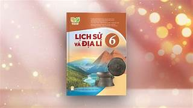
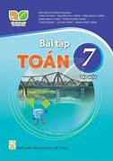
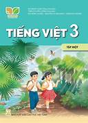
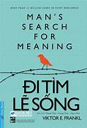
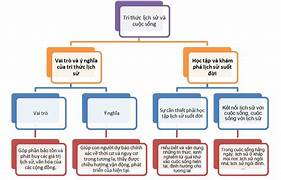
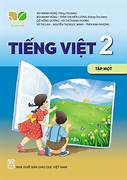
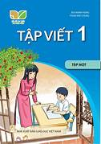
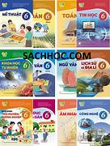
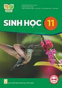

sách về cuộc sống - Yahoo Kết quả Tìm Kiếm Hình Ảnh
Yahoo Trang kết quả tìm kiếm hình ảnh
Đầu trang
Trang chủ
Mail
Đăng nhập
Yahoo
Ô tìm kiếm
Truy vấn tìm kiếm
Tìm kiếm
Tất cả
Hình ảnh
Video
Bộ lọc
Bật Tìm kiếm an toàn
Bật Tìm kiếm an toàn
Tắt Tìm kiếm an toàn
Kích thước
Tất cả
Nhỏ
Trung bình
Lớn
Rất lớn
Màu
Tất cả
Chỉ ảnh màu
Đen & trắng
Loại
Tất cả
Ảnh
Hình mẫu
Hình vẽ nét
Ảnh động GIF
Trong suốt
Bố cục
Tất cả
Vuông
Rộng
Cao
Người
Tất cả
Chỉ khuôn mặt
Đầu và vai
Không có người
Thời gian
Tất cả
24 giờ qua
Tuần qua
Tháng qua
Năm qua
Quyền sử dụng
Tất cả
Mọi giấy phép Creative Commons
Khu vực Công cộng
Tự do chia sẻ và sử dụng
Tự do chia sẻ và sử dụng thương mại
Tự do chỉnh sửa, chia sẻ và sử dụng
Tự do chỉnh sửa, chia sẻ và sử dụng thương mại
Kết quả tìm kiếm

6 cuốn sách về cuộc đời nên đọc trước khi chết
cafebiz.vn
555x780
Xem Ảnh
Xem Trang








Hiện ảnh khác
Your download's being scanned. We'll let you know if there's an issue.
![](https://vn.images.search.yahoo.com/images/view;_ylt=AwrKFW.KhaloJGwKoIFtUwx.;_ylu=c2VjA3NyBHNsawNpbWcEb2lkA2RlYzQ0ODhmZjQ0ZTFmYjk3YzIzYzFiY2U2ZDEwZjgyBGdwb3MDMQRpdANiaW5n?back=https%3A%2F%2Fvn.images.search.yahoo.com%2Fsearch%2Fimages%3Fp%3Ds%25C3%25A1ch%2Bv%25E1%25BB%2581%2Bcu%25E1%25BB%2599c%2Bs%25E1%25BB%2591ng%26ei%3DUTF-8%26type%3DE210VN885G0%26fr%3Dmcafee%26fr2%3Dp%253As%252Cv%253Ai%252Cm%253Asb-top%26tab%3Dorganic%26ri%3D1&w=750&h=440&imgurl=simg.zalopay.com.vn%2Fzlp-website%2Fassets%2Fsach_hay_ve_ky_nang_song_Doi_Ngan_Dung_Ngu_Dai_ad967ff21f.jpg&rurl=https%3A%2F%2Fzalopay.vn%2Ftop-nhung-cuon-sach-hay-ve-cuoc-song-1533&size=40KB&p=s%C3%A1ch+v%E1%BB%81+cu%E1%BB%99c+s%E1%BB%91ng&oid=dec4488ff44e1fb97c23c1bce6d10f82&fr2=p%3As%2Cv%3Ai%2Cm%3Asb-top&fr=mcafee&tt=Top+12+cu%E1%BB%91n+s%C3%A1ch+hay+v%E1%BB%81+cu%E1%BB%99c+s%E1%BB%91ng+b%E1%BA%A1n+n%C3%AAn+%C4%91%E1%BB%8Dc+%C3%ADt+nh%E1%BA%A5t+1+l%E1%BA%A7n+%7C+ZaloPay&b=0&ni=160&no=1&ts=&tab=organic&sigr=.4qzkvT88t84&sigb=ZGn.cW2.Z3DL&sigi=4Gf0iv3qMIts&sigt=5BtHHxXDp6dw&.crumb=ffyG8HSXUSA&fr=mcafee&fr2=p%3As%2Cv%3Ai%2Cm%3Asb-top&type=E210VN885G0)
![](https://vn.images.search.yahoo.com/images/view;_ylt=AwrKFW.KhaloJGwKoYFtUwx.;_ylu=c2VjA3NyBHNsawNpbWcEb2lkAzgwYTNkMDFhYzVmOGNkM2I3NGFhOWYxZGRkYmE4YmE3BGdwb3MDMgRpdANiaW5n?back=https%3A%2F%2Fvn.images.search.yahoo.com%2Fsearch%2Fimages%3Fp%3Ds%25C3%25A1ch%2Bv%25E1%25BB%2581%2Bcu%25E1%25BB%2599c%2Bs%25E1%25BB%2591ng%26ei%3DUTF-8%26type%3DE210VN885G0%26fr%3Dmcafee%26fr2%3Dp%253As%252Cv%253Ai%252Cm%253Asb-top%26tab%3Dorganic%26ri%3D2&w=750&h=750&imgurl=m.yodycdn.com%2Fblog%2Fnhung-cuon-sach-hay-ve-cuoc-song-yodyvn-16.jpg&rurl=https%3A%2F%2Fyody.vn%2Fpost%2Fnhung-cuon-sach-hay-ve-cuoc-song&size=280KB&p=s%C3%A1ch+v%E1%BB%81+cu%E1%BB%99c+s%E1%BB%91ng&oid=80a3d01ac5f8cd3b74aa9f1dddba8ba7&fr2=p%3As%2Cv%3Ai%2Cm%3Asb-top&fr=mcafee&tt=Top+16+nh%E1%BB%AFng+cu%E1%BB%91n+s%C3%A1ch+hay+v%E1%BB%81+cu%E1%BB%99c+s%E1%BB%91ng+gi%C3%BAp+b%E1%BA%A1n+th%E1%BB%A9c+t%E1%BB%89nh&b=0&ni=160&no=2&ts=&tab=organic&sigr=eq6R80I_IGF5&sigb=Hpa7vv8.ZQzD&sigi=4tlMSUMoFNvk&sigt=tVi6WNeKy8Ow&.crumb=ffyG8HSXUSA&fr=mcafee&fr2=p%3As%2Cv%3Ai%2Cm%3Asb-top&type=E210VN885G0)
![](https://vn.images.search.yahoo.com/images/view;_ylt=AwrKFW.KhaloJGwKooFtUwx.;_ylu=c2VjA3NyBHNsawNpbWcEb2lkAzYzNDk3YzdmNGIzODVkMjI3MDQxNDVlMDFmNjkwMmVmBGdwb3MDMwRpdANiaW5n?back=https%3A%2F%2Fvn.images.search.yahoo.com%2Fsearch%2Fimages%3Fp%3Ds%25C3%25A1ch%2Bv%25E1%25BB%2581%2Bcu%25E1%25BB%2599c%2Bs%25E1%25BB%2591ng%26ei%3DUTF-8%26type%3DE210VN885G0%26fr%3Dmcafee%26fr2%3Dp%253As%252Cv%253Ai%252Cm%253Asb-top%26tab%3Dorganic%26ri%3D3&w=1640&h=924&imgurl=bloganchoi.com%2Fwp-content%2Fuploads%2F2022%2F09%2Ftop-sach-hay-ve-cuoc-song-44.jpg&rurl=https%3A%2F%2Fbloganchoi.com%2Ftop-sach-hay-ve-cuoc-song-2022%2F&size=211KB&p=s%C3%A1ch+v%E1%BB%81+cu%E1%BB%99c+s%E1%BB%91ng&oid=63497c7f4b385d22704145e01f6902ef&fr2=p%3As%2Cv%3Ai%2Cm%3Asb-top&fr=mcafee&tt=TOP+15+quy%E1%BB%83n+s%C3%A1ch+hay+v%E1%BB%81+cu%E1%BB%99c+s%E1%BB%91ng+gi%C3%BAp+thay+%C4%91%E1%BB%95i+b%E1%BA%A3n+th%C3%A2n+ng%C3%A0y+m%E1%BB%99t+t%E1%BB%91t+...&b=0&ni=160&no=3&ts=&tab=organic&sigr=zVWw3AP7Qbbx&sigb=sfbhac90JCDu&sigi=V1_3cJPWHUpx&sigt=GBDfLNn8Lqpg&.crumb=ffyG8HSXUSA&fr=mcafee&fr2=p%3As%2Cv%3Ai%2Cm%3Asb-top&type=E210VN885G0)
![](https://vn.images.search.yahoo.com/images/view;_ylt=AwrKFW.KhaloJGwKo4FtUwx.;_ylu=c2VjA3NyBHNsawNpbWcEb2lkAzNhODU2YjhlOWUyNjNlMTUwY2VmYTdmOTBjZGU4OTIzBGdwb3MDNARpdANiaW5n?back=https%3A%2F%2Fvn.images.search.yahoo.com%2Fsearch%2Fimages%3Fp%3Ds%25C3%25A1ch%2Bv%25E1%25BB%2581%2Bcu%25E1%25BB%2599c%2Bs%25E1%25BB%2591ng%26ei%3DUTF-8%26type%3DE210VN885G0%26fr%3Dmcafee%26fr2%3Dp%253As%252Cv%253Ai%252Cm%253Asb-top%26tab%3Dorganic%26ri%3D4&w=1200&h=650&imgurl=chamdocsach.com%2Fwp-content%2Fuploads%2F2023%2F10%2FNhung-cuon-sach-hay-nhat-ve-Cuoc-song.jpg&rurl=https%3A%2F%2Fchamdocsach.com%2Fsach-hay-ve-cuoc-song%2F&size=146KB&p=s%C3%A1ch+v%E1%BB%81+cu%E1%BB%99c+s%E1%BB%91ng&oid=3a856b8e9e263e150cefa7f90cde8923&fr2=p%3As%2Cv%3Ai%2Cm%3Asb-top&fr=mcafee&tt=Top+20+cu%E1%BB%91n+s%C3%A1ch+hay+v%E1%BB%81+Cu%E1%BB%99c+s%E1%BB%91ng+gi%C3%BAp+b%E1%BA%A1n+h%E1%BA%A1nh+ph%C3%BAc+h%C6%A1n&b=0&ni=160&no=4&ts=&tab=organic&sigr=A5.lh.kFs0n4&sigb=mH9N3eutiNqH&sigi=Rx3LXSFyHBmp&sigt=h_mSZYesCKJC&.crumb=ffyG8HSXUSA&fr=mcafee&fr2=p%3As%2Cv%3Ai%2Cm%3Asb-top&type=E210VN885G0)
![](https://vn.images.search.yahoo.com/images/view;_ylt=AwrKFW.KhaloJGwKpIFtUwx.;_ylu=c2VjA3NyBHNsawNpbWcEb2lkA2EzMTNkZDU1MTc4N2M0Yjc4MzIxYmMwYmY0ZGQ3MDAzBGdwb3MDNQRpdANiaW5n?back=https%3A%2F%2Fvn.images.search.yahoo.com%2Fsearch%2Fimages%3Fp%3Ds%25C3%25A1ch%2Bv%25E1%25BB%2581%2Bcu%25E1%25BB%2599c%2Bs%25E1%25BB%2591ng%26ei%3DUTF-8%26type%3DE210VN885G0%26fr%3Dmcafee%26fr2%3Dp%253As%252Cv%253Ai%252Cm%253Asb-top%26tab%3Dorganic%26ri%3D5&w=1920&h=1080&imgurl=curnonwatch.com%2Fblog%2Fwp-content%2Fuploads%2F2022%2F07%2FSach-hay-ve-cuoc-song-nha-gia-kim.jpg&rurl=https%3A%2F%2Fv1000.vn%2Fsach-hay-ve-cuoc-song%2F&size=362KB&p=s%C3%A1ch+v%E1%BB%81+cu%E1%BB%99c+s%E1%BB%91ng&oid=a313dd551787c4b78321bc0bf4dd7003&fr2=p%3As%2Cv%3Ai%2Cm%3Asb-top&fr=mcafee&tt=5+Cu%E1%BB%91n+S%C3%A1ch+Hay+V%E1%BB%81+Cu%E1%BB%99c+S%E1%BB%91ng+C%E1%BA%A7n+%C4%90%E1%BB%8Dc+1+L%E1%BA%A7n+Trong+%C4%90%E1%BB%9Di+-+v1000&b=0&ni=160&no=5&ts=&tab=organic&sigr=rs6dqZR6YP9D&sigb=e8ufts_jjdip&sigi=MNVql7H2i0Md&sigt=ysXfzujQoE.9&.crumb=ffyG8HSXUSA&fr=mcafee&fr2=p%3As%2Cv%3Ai%2Cm%3Asb-top&type=E210VN885G0)
![](https://vn.images.search.yahoo.com/images/view;_ylt=AwrKFW.KhaloJGwKpYFtUwx.;_ylu=c2VjA3NyBHNsawNpbWcEb2lkA2VhMmUzNTY4OWFjNzJiYWQzN2MwYjMzMWQyNTQyYTgwBGdwb3MDNgRpdANiaW5n?back=https%3A%2F%2Fvn.images.search.yahoo.com%2Fsearch%2Fimages%3Fp%3Ds%25C3%25A1ch%2Bv%25E1%25BB%2581%2Bcu%25E1%25BB%2599c%2Bs%25E1%25BB%2591ng%26ei%3DUTF-8%26type%3DE210VN885G0%26fr%3Dmcafee%26fr2%3Dp%253As%252Cv%253Ai%252Cm%253Asb-top%26tab%3Dorganic%26ri%3D6&w=750&h=750&imgurl=m.yodycdn.com%2Fblog%2Fnhung-cuon-sach-hay-ve-cuoc-song-yodyvn-7.jpg&rurl=https%3A%2F%2Fyody.vn%2Fpost%2Fnhung-cuon-sach-hay-ve-cuoc-song&size=298KB&p=s%C3%A1ch+v%E1%BB%81+cu%E1%BB%99c+s%E1%BB%91ng&oid=ea2e35689ac72bad37c0b331d2542a80&fr2=p%3As%2Cv%3Ai%2Cm%3Asb-top&fr=mcafee&tt=Top+16+nh%E1%BB%AFng+cu%E1%BB%91n+s%C3%A1ch+hay+v%E1%BB%81+cu%E1%BB%99c+s%E1%BB%91ng+gi%C3%BAp+b%E1%BA%A1n+th%E1%BB%A9c+t%E1%BB%89nh&b=0&ni=160&no=6&ts=&tab=organic&sigr=eq6R80I_IGF5&sigb=dWf2PIw7NEqE&sigi=l6UfwUhDeLgL&sigt=tVi6WNeKy8Ow&.crumb=ffyG8HSXUSA&fr=mcafee&fr2=p%3As%2Cv%3Ai%2Cm%3Asb-top&type=E210VN885G0)
![](https://vn.images.search.yahoo.com/images/view;_ylt=AwrKFW.KhaloJGwKpoFtUwx.;_ylu=c2VjA3NyBHNsawNpbWcEb2lkAzczNjc1OTAxZjhlOTVmZGVlNmQ2ODVkYWRlMTdjZmFmBGdwb3MDNwRpdANiaW5n?back=https%3A%2F%2Fvn.images.search.yahoo.com%2Fsearch%2Fimages%3Fp%3Ds%25C3%25A1ch%2Bv%25E1%25BB%2581%2Bcu%25E1%25BB%2599c%2Bs%25E1%25BB%2591ng%26ei%3DUTF-8%26type%3DE210VN885G0%26fr%3Dmcafee%26fr2%3Dp%253As%252Cv%253Ai%252Cm%253Asb-top%26tab%3Dorganic%26ri%3D7&w=1053&h=1616&imgurl=cdn0.fahasa.com%2Fmedia%2Fflashmagazine%2Fimages%2Fpage_images%2Fikigai___bi_mat_song_truong_tho_va_hanh_phuc_cua_nguoi_nhat%2F2021_07_29_11_36_40_1-390x510.jpg&rurl=https%3A%2F%2Fjonathanmpham.com%2Fvi%2Freview-sach%2Ftop-sach%2Fsach-ve-y-nghia-cuoc-song%2F&size=860KB&p=s%C3%A1ch+v%E1%BB%81+cu%E1%BB%99c+s%E1%BB%91ng&oid=73675901f8e95fdee6d685dade17cfaf&fr2=p%3As%2Cv%3Ai%2Cm%3Asb-top&fr=mcafee&tt=Top+10+s%C3%A1ch+v%E1%BB%81+%C3%BD+ngh%C4%A9a+cu%E1%BB%99c+s%E1%BB%91ng%3A+%C4%90%E1%BB%8Dc+%26+ng%E1%BA%ABm+%7C+Jonathan+M.+Pham&b=0&ni=160&no=7&ts=&tab=organic&sigr=_kUcPzdvjplm&sigb=MKHbzieH9Fnd&sigi=2tXnIvFLxvuY&sigt=xiX0K4YVbNBU&.crumb=ffyG8HSXUSA&fr=mcafee&fr2=p%3As%2Cv%3Ai%2Cm%3Asb-top&type=E210VN885G0)
![](https://vn.images.search.yahoo.com/images/view;_ylt=AwrKFW.KhaloJGwKp4FtUwx.;_ylu=c2VjA3NyBHNsawNpbWcEb2lkA2JjNzVkM2IwYzZjMzI2NzA5YzFhODdmMTg4N2ExMDk2BGdwb3MDOARpdANiaW5n?back=https%3A%2F%2Fvn.images.search.yahoo.com%2Fsearch%2Fimages%3Fp%3Ds%25C3%25A1ch%2Bv%25E1%25BB%2581%2Bcu%25E1%25BB%2599c%2Bs%25E1%25BB%2591ng%26ei%3DUTF-8%26type%3DE210VN885G0%26fr%3Dmcafee%26fr2%3Dp%253As%252Cv%253Ai%252Cm%253Asb-top%26tab%3Dorganic%26ri%3D8&w=640&h=640&imgurl=smilebuilding.com.vn%2Fwp-content%2Fuploads%2F2020%2F02%2F21.jpg&rurl=http%3A%2F%2Fsmilebuilding.com.vn%2Fsach-hay-ve-cuoc-song%2F&size=102KB&p=s%C3%A1ch+v%E1%BB%81+cu%E1%BB%99c+s%E1%BB%91ng&oid=bc75d3b0c6c326709c1a87f1887a1096&fr2=p%3As%2Cv%3Ai%2Cm%3Asb-top&fr=mcafee&tt=Nh%E1%BB%AFng+cu%E1%BB%91n+s%C3%A1ch+hay+v%E1%BB%81+cu%E1%BB%99c+s%E1%BB%91ng+b%E1%BA%A1n+n%C3%AAn+%C4%91%E1%BB%8Dc%7C%7C+S%C3%A1ch+hay&b=0&ni=160&no=8&ts=&tab=organic&sigr=TpKHwD.LDVia&sigb=Tun7sKB7zysA&sigi=ec_NePDEJ0AK&sigt=gs6M_8kHhYTz&.crumb=ffyG8HSXUSA&fr=mcafee&fr2=p%3As%2Cv%3Ai%2Cm%3Asb-top&type=E210VN885G0)
![](https://vn.images.search.yahoo.com/images/view;_ylt=AwrKFW.KhaloJGwKqIFtUwx.;_ylu=c2VjA3NyBHNsawNpbWcEb2lkAzdkOGQ5NWFmZDZmOGIxY2E3YjM1N2UxNzgzYjRkM2M2BGdwb3MDOQRpdANiaW5n?back=https%3A%2F%2Fvn.images.search.yahoo.com%2Fsearch%2Fimages%3Fp%3Ds%25C3%25A1ch%2Bv%25E1%25BB%2581%2Bcu%25E1%25BB%2599c%2Bs%25E1%25BB%2591ng%26ei%3DUTF-8%26type%3DE210VN885G0%26fr%3Dmcafee%26fr2%3Dp%253As%252Cv%253Ai%252Cm%253Asb-top%26tab%3Dorganic%26ri%3D9&w=1200&h=628&imgurl=newshop.vn%2Fpublic%2Fuploads%2Fnews%2Fnhung-cuon-sach-hay-ve-cuoc-song-min.jpg&rurl=https%3A%2F%2Fnewshop.vn%2Ftin-tuc%2F12-cuon-sach-hay-ve-cuoc-song-thay-doi-cuoc-doi-ban-id1027.html&size=147KB&p=s%C3%A1ch+v%E1%BB%81+cu%E1%BB%99c+s%E1%BB%91ng&oid=7d8d95afd6f8b1ca7b357e1783b4d3c6&fr2=p%3As%2Cv%3Ai%2Cm%3Asb-top&fr=mcafee&tt=12+Cu%E1%BB%91n+S%C3%A1ch+Hay+V%E1%BB%81+Cu%E1%BB%99c+S%E1%BB%91ng+Thay+%C4%90%E1%BB%95i+Cu%E1%BB%99c+%C4%90%E1%BB%9Di+B%E1%BA%A1n&b=0&ni=160&no=9&ts=&tab=organic&sigr=7HE8U5llqyyy&sigb=cdI9yxZDOcgT&sigi=xVtagshJPyWu&sigt=KE.U9lbCN0iF&.crumb=ffyG8HSXUSA&fr=mcafee&fr2=p%3As%2Cv%3Ai%2Cm%3Asb-top&type=E210VN885G0)
![](https://vn.images.search.yahoo.com/images/view;_ylt=AwrKFW.KhaloJGwKqYFtUwx.;_ylu=c2VjA3NyBHNsawNpbWcEb2lkAzk4NGU1OWNjNTViZjQ2ODM3MzYzY2JmNjI4MzhiYzdlBGdwb3MDMTAEaXQDYmluZw--?back=https%3A%2F%2Fvn.images.search.yahoo.com%2Fsearch%2Fimages%3Fp%3Ds%25C3%25A1ch%2Bv%25E1%25BB%2581%2Bcu%25E1%25BB%2599c%2Bs%25E1%25BB%2591ng%26ei%3DUTF-8%26type%3DE210VN885G0%26fr%3Dmcafee%26fr2%3Dp%253As%252Cv%253Ai%252Cm%253Asb-top%26tab%3Dorganic%26ri%3D10&w=750&h=440&imgurl=simg.zalopay.com.vn%2Fzlp-website%2Fassets%2Fdung_lua_chon_an_nhan_1_9609e2a8c8.jpg&rurl=https%3A%2F%2Fzalopay.vn%2Ftop-nhung-cuon-sach-hay-ve-cuoc-song-1533&size=52KB&p=s%C3%A1ch+v%E1%BB%81+cu%E1%BB%99c+s%E1%BB%91ng&oid=984e59cc55bf46837363cbf62838bc7e&fr2=p%3As%2Cv%3Ai%2Cm%3Asb-top&fr=mcafee&tt=Top+12+cu%E1%BB%91n+s%C3%A1ch+hay+v%E1%BB%81+cu%E1%BB%99c+s%E1%BB%91ng+b%E1%BA%A1n+n%C3%AAn+%C4%91%E1%BB%8Dc+%C3%ADt+nh%E1%BA%A5t+1+l%E1%BA%A7n+%7C+ZaloPay&b=0&ni=160&no=10&ts=&tab=organic&sigr=.4qzkvT88t84&sigb=nMGhyMVvEj7U&sigi=GS8Mgd.m92z0&sigt=5BtHHxXDp6dw&.crumb=ffyG8HSXUSA&fr=mcafee&fr2=p%3As%2Cv%3Ai%2Cm%3Asb-top&type=E210VN885G0)
![](https://vn.images.search.yahoo.com/images/view;_ylt=AwrKFW.KhaloJGwKqoFtUwx.;_ylu=c2VjA3NyBHNsawNpbWcEb2lkA2FlZTYzYWI3YTQ1MDkxNDI1ZjcxMmRiODg0YzNiYTBjBGdwb3MDMTEEaXQDYmluZw--?back=https%3A%2F%2Fvn.images.search.yahoo.com%2Fsearch%2Fimages%3Fp%3Ds%25C3%25A1ch%2Bv%25E1%25BB%2581%2Bcu%25E1%25BB%2599c%2Bs%25E1%25BB%2591ng%26ei%3DUTF-8%26type%3DE210VN885G0%26fr%3Dmcafee%26fr2%3Dp%253As%252Cv%253Ai%252Cm%253Asb-top%26tab%3Dorganic%26ri%3D11&w=1000&h=1618&imgurl=sachhoctro.com.vn%2Fwp-content%2Fuploads%2F2018%2F09%2Fmach-ban-nhung-cuon-sach-hay-ve-cuoc-song-dang-doc-nhat.gif&rurl=http%3A%2F%2Fsachhoctro.com.vn%2Fmach-ban-nhung-cuon-sach-hay-ve-cuoc-song-dang-doc-nhat%2F&size=354KB&p=s%C3%A1ch+v%E1%BB%81+cu%E1%BB%99c+s%E1%BB%91ng&oid=aee63ab7a45091425f712db884c3ba0c&fr2=p%3As%2Cv%3Ai%2Cm%3Asb-top&fr=mcafee&tt=M%C3%A1ch+b%E1%BA%A1n+nh%E1%BB%AFng+cu%E1%BB%91n+s%C3%A1ch+hay+v%E1%BB%81+cu%E1%BB%99c+s%E1%BB%91ng+%C4%91%C3%A1ng+%C4%91%E1%BB%8Dc+nh%E1%BA%A5t&b=0&ni=160&no=11&ts=&tab=organic&sigr=vArVDAWQ5V5_&sigb=cC9wXOOF9oAt&sigi=9Jgt931VLFvr&sigt=SWdr8CYXrZUz&.crumb=ffyG8HSXUSA&fr=mcafee&fr2=p%3As%2Cv%3Ai%2Cm%3Asb-top&type=E210VN885G0)
![](https://vn.images.search.yahoo.com/images/view;_ylt=AwrKFW.KhaloJGwKq4FtUwx.;_ylu=c2VjA3NyBHNsawNpbWcEb2lkAzZlOTY3ZDBmOWEwZDg5MDc2NDg1OWVmYmJiNmJmMjBiBGdwb3MDMTIEaXQDYmluZw--?back=https%3A%2F%2Fvn.images.search.yahoo.com%2Fsearch%2Fimages%3Fp%3Ds%25C3%25A1ch%2Bv%25E1%25BB%2581%2Bcu%25E1%25BB%2599c%2Bs%25E1%25BB%2591ng%26ei%3DUTF-8%26type%3DE210VN885G0%26fr%3Dmcafee%26fr2%3Dp%253As%252Cv%253Ai%252Cm%253Asb-top%26tab%3Dorganic%26ri%3D12&w=750&h=750&imgurl=m.yodycdn.com%2Fblog%2Fnhung-cuon-sach-hay-ve-cuoc-song-yodyvn-14.jpg&rurl=https%3A%2F%2Fyody.vn%2Fpost%2Fnhung-cuon-sach-hay-ve-cuoc-song&size=325KB&p=s%C3%A1ch+v%E1%BB%81+cu%E1%BB%99c+s%E1%BB%91ng&oid=6e967d0f9a0d890764859efbbb6bf20b&fr2=p%3As%2Cv%3Ai%2Cm%3Asb-top&fr=mcafee&tt=Top+16+nh%E1%BB%AFng+cu%E1%BB%91n+s%C3%A1ch+hay+v%E1%BB%81+cu%E1%BB%99c+s%E1%BB%91ng+gi%C3%BAp+b%E1%BA%A1n+th%E1%BB%A9c+t%E1%BB%89nh&b=0&ni=160&no=12&ts=&tab=organic&sigr=eq6R80I_IGF5&sigb=N7s62BVWWwqL&sigi=qtzxY4FBzN62&sigt=tVi6WNeKy8Ow&.crumb=ffyG8HSXUSA&fr=mcafee&fr2=p%3As%2Cv%3Ai%2Cm%3Asb-top&type=E210VN885G0)
![](https://vn.images.search.yahoo.com/images/view;_ylt=AwrKFW.KhaloJGwKrIFtUwx.;_ylu=c2VjA3NyBHNsawNpbWcEb2lkA2Q0YmZkNzNiOGQ0ZmIyMjZmODljZmMwOTZlZmRmOTYxBGdwb3MDMTMEaXQDYmluZw--?back=https%3A%2F%2Fvn.images.search.yahoo.com%2Fsearch%2Fimages%3Fp%3Ds%25C3%25A1ch%2Bv%25E1%25BB%2581%2Bcu%25E1%25BB%2599c%2Bs%25E1%25BB%2591ng%26ei%3DUTF-8%26type%3DE210VN885G0%26fr%3Dmcafee%26fr2%3Dp%253As%252Cv%253Ai%252Cm%253Asb-top%26tab%3Dorganic%26ri%3D13&w=555&h=389&imgurl=sachhay24h.com%2Fuploads%2Fimages%2Fbai-hoc-cuoc-song.jpg&rurl=https%3A%2F%2Fsachhay24h.com%2Fnhung-cuon-sach-hay-ve-cuoc-song-nen-doc-a860.html&size=48KB&p=s%C3%A1ch+v%E1%BB%81+cu%E1%BB%99c+s%E1%BB%91ng&oid=d4bfd73b8d4fb226f89cfc096efdf961&fr2=p%3As%2Cv%3Ai%2Cm%3Asb-top&fr=mcafee&tt=Nh%E1%BB%AFng+cu%E1%BB%91n+s%C3%A1ch+hay+v%E1%BB%81+cu%E1%BB%99c+s%E1%BB%91ng+n%C3%AAn+%C4%91%E1%BB%8Dc&b=0&ni=160&no=13&ts=&tab=organic&sigr=IHSwIEOmv3AQ&sigb=LMWmLZSMZlnv&sigi=_Q7KMqoKNYR7&sigt=Nc0hfSebCB3m&.crumb=ffyG8HSXUSA&fr=mcafee&fr2=p%3As%2Cv%3Ai%2Cm%3Asb-top&type=E210VN885G0)
![](https://vn.images.search.yahoo.com/images/view;_ylt=AwrKFW.KhaloJGwKrYFtUwx.;_ylu=c2VjA3NyBHNsawNpbWcEb2lkA2I5MmE5NmRkYWY0OTMxNjE2OTQ5NTZiYzY5NmYwYWYwBGdwb3MDMTQEaXQDYmluZw--?back=https%3A%2F%2Fvn.images.search.yahoo.com%2Fsearch%2Fimages%3Fp%3Ds%25C3%25A1ch%2Bv%25E1%25BB%2581%2Bcu%25E1%25BB%2599c%2Bs%25E1%25BB%2591ng%26ei%3DUTF-8%26type%3DE210VN885G0%26fr%3Dmcafee%26fr2%3Dp%253As%252Cv%253Ai%252Cm%253Asb-top%26tab%3Dorganic%26ri%3D14&w=1200&h=1200&imgurl=dimibook.com%2Fwp-content%2Fuploads%2F2021%2F04%2Ffdc22a17f9e5ff533527d72e0c1a5c82.jpg&rurl=https%3A%2F%2Fdimibook.com%2F5-cuon-sach-hay-ve-cuoc-song-nen-doc%2F&size=174KB&p=s%C3%A1ch+v%E1%BB%81+cu%E1%BB%99c+s%E1%BB%91ng&oid=b92a96ddaf493161694956bc696f0af0&fr2=p%3As%2Cv%3Ai%2Cm%3Asb-top&fr=mcafee&tt=5+cu%E1%BB%91n+s%C3%A1ch+hay+v%E1%BB%81+cu%E1%BB%99c+s%E1%BB%91ng+n%C3%AAn+%C4%91%E1%BB%8Dc+-+DIMI+BOOK&b=0&ni=160&no=14&ts=&tab=organic&sigr=zKB7RtNf8Bmd&sigb=J_mK1ow4vT2C&sigi=HafgNaMEtDwU&sigt=oo2iIrDP2swf&.crumb=ffyG8HSXUSA&fr=mcafee&fr2=p%3As%2Cv%3Ai%2Cm%3Asb-top&type=E210VN885G0)
![](https://vn.images.search.yahoo.com/images/view;_ylt=AwrKFW.KhaloJGwKroFtUwx.;_ylu=c2VjA3NyBHNsawNpbWcEb2lkAzExNDRiYzM2MmUyNDE0NmE2YmYxODk3NGRmOTgzMmNlBGdwb3MDMTUEaXQDYmluZw--?back=https%3A%2F%2Fvn.images.search.yahoo.com%2Fsearch%2Fimages%3Fp%3Ds%25C3%25A1ch%2Bv%25E1%25BB%2581%2Bcu%25E1%25BB%2599c%2Bs%25E1%25BB%2591ng%26ei%3DUTF-8%26type%3DE210VN885G0%26fr%3Dmcafee%26fr2%3Dp%253As%252Cv%253Ai%252Cm%253Asb-top%26tab%3Dorganic%26ri%3D15&w=700&h=1024&imgurl=nhatrangbooks.com%2Fwp-content%2Fuploads%2F2021%2F05%2Fsach-hanh-phuc-gia-dinh-nhung-dieu-can-biet-hon-nhan-va-cuoc-song-gia-dinh_60a2ad316091b-700x1024.jpeg&rurl=https%3A%2F%2Fnhatrangbooks.com%2Fsach%2Fsach-hanh-phuc-gia-dinh-nhung-dieu-can-biet-hon-nhan-va-cuoc-song-gia-dinh%2F&size=68KB&p=s%C3%A1ch+v%E1%BB%81+cu%E1%BB%99c+s%E1%BB%91ng&oid=1144bc362e24146a6bf18974df9832ce&fr2=p%3As%2Cv%3Ai%2Cm%3Asb-top&fr=mcafee&tt=S%C3%A1ch+H%E1%BA%A1nh+Ph%C3%BAc+Gia+%C4%90%C3%ACnh+-+Nh%E1%BB%AFng+%C4%90i%E1%BB%81u+C%E1%BA%A7n+Bi%E1%BA%BFt%3A+H%C3%B4n+Nh%C3%A2n+V%C3%A0+Cu%E1%BB%99c+S%E1%BB%91ng+...&b=0&ni=160&no=15&ts=&tab=organic&sigr=0eXtzTN3dRFc&sigb=7aoK80X7wMVl&sigi=GCoYM7VLQngp&sigt=AZqD19UD0mUF&.crumb=ffyG8HSXUSA&fr=mcafee&fr2=p%3As%2Cv%3Ai%2Cm%3Asb-top&type=E210VN885G0)
![](https://vn.images.search.yahoo.com/images/view;_ylt=AwrKFW.KhaloJGwKr4FtUwx.;_ylu=c2VjA3NyBHNsawNpbWcEb2lkA2Y4NTQ3Y2Y1ZGFlNmEwNDA4ZTVhNzYyM2RlNTgzM2VhBGdwb3MDMTYEaXQDYmluZw--?back=https%3A%2F%2Fvn.images.search.yahoo.com%2Fsearch%2Fimages%3Fp%3Ds%25C3%25A1ch%2Bv%25E1%25BB%2581%2Bcu%25E1%25BB%2599c%2Bs%25E1%25BB%2591ng%26ei%3DUTF-8%26type%3DE210VN885G0%26fr%3Dmcafee%26fr2%3Dp%253As%252Cv%253Ai%252Cm%253Asb-top%26tab%3Dorganic%26ri%3D16&w=1920&h=1080&imgurl=curnonwatch.com%2Fblog%2Fwp-content%2Fuploads%2F2022%2F07%2FSach-hay-ve-cuoc-song-ban-chi-can-song-tot-troi-xanh-tu-an-bai.jpg&rurl=https%3A%2F%2Ftdmuflc.edu.vn%2Fnhung-trang-sach-hay%2F&size=258KB&p=s%C3%A1ch+v%E1%BB%81+cu%E1%BB%99c+s%E1%BB%91ng&oid=f8547cf5dae6a0408e5a7623de5833ea&fr2=p%3As%2Cv%3Ai%2Cm%3Asb-top&fr=mcafee&tt=5+Cu%E1%BB%91n+S%C3%A1ch+Hay+V%E1%BB%81+Cu%E1%BB%99c+S%E1%BB%91ng+C%E1%BA%A7n+%C4%90%E1%BB%8Dc+1+L%E1%BA%A7n+Trong+%C4%90%E1%BB%9Di+-+TRUNG+T%C3%82M+NGO%E1%BA%A0I+...&b=0&ni=160&no=16&ts=&tab=organic&sigr=G.zK7euIvvQh&sigb=wzVOxksI46Dq&sigi=8N.n4MuUWgg_&sigt=fz23umA_6XH5&.crumb=ffyG8HSXUSA&fr=mcafee&fr2=p%3As%2Cv%3Ai%2Cm%3Asb-top&type=E210VN885G0)
![](https://vn.images.search.yahoo.com/images/view;_ylt=AwrKFW.KhaloJGwKsIFtUwx.;_ylu=c2VjA3NyBHNsawNpbWcEb2lkA2MzOWVkYmExM2IxYzIzOThiMWU2M2I2MmI5OWU4NjVlBGdwb3MDMTcEaXQDYmluZw--?back=https%3A%2F%2Fvn.images.search.yahoo.com%2Fsearch%2Fimages%3Fp%3Ds%25C3%25A1ch%2Bv%25E1%25BB%2581%2Bcu%25E1%25BB%2599c%2Bs%25E1%25BB%2591ng%26ei%3DUTF-8%26type%3DE210VN885G0%26fr%3Dmcafee%26fr2%3Dp%253As%252Cv%253Ai%252Cm%253Asb-top%26tab%3Dorganic%26ri%3D17&w=750&h=562&imgurl=cdn.123job.vn%2F123job%2Fuploads%2F2021%2F05%2F27%2F2021_05_27______48ce22e6d05170a16f343e8d0b2056c1.jpg&rurl=https%3A%2F%2F123job.vn%2Fbai-viet%2Ftop-10-nhung-cuon-sach-hay-ve-cuoc-song-giup-ban-yeu-ban-than-minh-hon-2520.html&size=145KB&p=s%C3%A1ch+v%E1%BB%81+cu%E1%BB%99c+s%E1%BB%91ng&oid=c39edba13b1c2398b1e63b62b99e865e&fr2=p%3As%2Cv%3Ai%2Cm%3Asb-top&fr=mcafee&tt=Top+10+nh%E1%BB%AFng+cu%E1%BB%91n+s%C3%A1ch+hay+v%E1%BB%81+cu%E1%BB%99c+s%E1%BB%91ng+gi%C3%BAp+b%E1%BA%A1n+y%C3%AAu+b%E1%BA%A3n+th%C3%A2n+m%C3%ACnh+h%C6%A1n&b=0&ni=160&no=17&ts=&tab=organic&sigr=7jYmolFOmdFQ&sigb=ounIUB_XFVsN&sigi=ogg9yrrTiAx9&sigt=ZNggZhpYDFok&.crumb=ffyG8HSXUSA&fr=mcafee&fr2=p%3As%2Cv%3Ai%2Cm%3Asb-top&type=E210VN885G0)
![](https://vn.images.search.yahoo.com/images/view;_ylt=AwrKFW.KhaloJGwKsYFtUwx.;_ylu=c2VjA3NyBHNsawNpbWcEb2lkAzBkODY0ZTQ0MTJlYTA1NmEyNGE1YTMwZDk4M2IwOTg4BGdwb3MDMTgEaXQDYmluZw--?back=https%3A%2F%2Fvn.images.search.yahoo.com%2Fsearch%2Fimages%3Fp%3Ds%25C3%25A1ch%2Bv%25E1%25BB%2581%2Bcu%25E1%25BB%2599c%2Bs%25E1%25BB%2591ng%26ei%3DUTF-8%26type%3DE210VN885G0%26fr%3Dmcafee%26fr2%3Dp%253As%252Cv%253Ai%252Cm%253Asb-top%26tab%3Dorganic%26ri%3D18&w=1920&h=1080&imgurl=curnonwatch.com%2Fblog%2Fwp-content%2Fuploads%2F2022%2F07%2FSach-hay-ve-cuoc-song-hay-song-cuoc-doi-nhu-ban-muon.jpg&rurl=https%3A%2F%2Ftdmuflc.edu.vn%2Fnhung-trang-sach-hay%2F&size=327KB&p=s%C3%A1ch+v%E1%BB%81+cu%E1%BB%99c+s%E1%BB%91ng&oid=0d864e4412ea056a24a5a30d983b0988&fr2=p%3As%2Cv%3Ai%2Cm%3Asb-top&fr=mcafee&tt=5+Cu%E1%BB%91n+S%C3%A1ch+Hay+V%E1%BB%81+Cu%E1%BB%99c+S%E1%BB%91ng+C%E1%BA%A7n+%C4%90%E1%BB%8Dc+1+L%E1%BA%A7n+Trong+%C4%90%E1%BB%9Di+-+TRUNG+T%C3%82M+NGO%E1%BA%A0I+...&b=0&ni=160&no=18&ts=&tab=organic&sigr=G.zK7euIvvQh&sigb=1cvFzQFAqngM&sigi=Vu0.IlpgmxMI&sigt=fz23umA_6XH5&.crumb=ffyG8HSXUSA&fr=mcafee&fr2=p%3As%2Cv%3Ai%2Cm%3Asb-top&type=E210VN885G0)
![](https://vn.images.search.yahoo.com/images/view;_ylt=AwrKFW.KhaloJGwKsoFtUwx.;_ylu=c2VjA3NyBHNsawNpbWcEb2lkA2FhNWI1Yzg3YzcwMzg5ZjAxYzgzYzNkMDBmZmVmMzY4BGdwb3MDMTkEaXQDYmluZw--?back=https%3A%2F%2Fvn.images.search.yahoo.com%2Fsearch%2Fimages%3Fp%3Ds%25C3%25A1ch%2Bv%25E1%25BB%2581%2Bcu%25E1%25BB%2599c%2Bs%25E1%25BB%2591ng%26ei%3DUTF-8%26type%3DE210VN885G0%26fr%3Dmcafee%26fr2%3Dp%253As%252Cv%253Ai%252Cm%253Asb-top%26tab%3Dorganic%26ri%3D19&w=1880&h=1253&imgurl=ireviewsach.com%2Fuploads%2Flogo%2F1568802483720-READ.jpeg&rurl=https%3A%2F%2Fireviewsach.com%2Freview-book%2F15-quyen-sach-hay-ve-cuoc-song-giup-ban-vung-buoc-tren-duong-doi-12107%2F237892&size=412KB&p=s%C3%A1ch+v%E1%BB%81+cu%E1%BB%99c+s%E1%BB%91ng&oid=aa5b5c87c70389f01c83c3d00ffef368&fr2=p%3As%2Cv%3Ai%2Cm%3Asb-top&fr=mcafee&tt=Review+cu%E1%BB%91n+s%C3%A1ch+15+Quy%E1%BB%83n+S%C3%A1ch+Hay+V%E1%BB%81+Cu%E1%BB%99c+S%E1%BB%91ng+Gi%C3%BAp+B%E1%BA%A1n+V%E1%BB%AFng+B%C6%B0%E1%BB%9Bc+Tr%C3%AAn+...&b=0&ni=160&no=19&ts=&tab=organic&sigr=I7jQnirwoXuo&sigb=ZTS2UFyZLneU&sigi=Cs_kN6QkqzEP&sigt=RR6UVEPo1IJV&.crumb=ffyG8HSXUSA&fr=mcafee&fr2=p%3As%2Cv%3Ai%2Cm%3Asb-top&type=E210VN885G0)
![](https://vn.images.search.yahoo.com/images/view;_ylt=AwrKFW.KhaloJGwKs4FtUwx.;_ylu=c2VjA3NyBHNsawNpbWcEb2lkAzQ0YTJiNWUxYjhmNDY5NTQyYTljNDk1MjdhMzg4NjFlBGdwb3MDMjAEaXQDYmluZw--?back=https%3A%2F%2Fvn.images.search.yahoo.com%2Fsearch%2Fimages%3Fp%3Ds%25C3%25A1ch%2Bv%25E1%25BB%2581%2Bcu%25E1%25BB%2599c%2Bs%25E1%25BB%2591ng%26ei%3DUTF-8%26type%3DE210VN885G0%26fr%3Dmcafee%26fr2%3Dp%253As%252Cv%253Ai%252Cm%253Asb-top%26tab%3Dorganic%26ri%3D20&w=1352&h=675&imgurl=listsach.com%2Fwp-content%2Fuploads%2F2019%2F08%2FTrich-dan-sach-hay-cot-cach-phu-nu.jpg&rurl=https%3A%2F%2Fkenhsinhvien.vn%2Ft%2Ftop-nhung-trich-dan-sach-hay-ve-cuoc-song.727247%2F&size=769KB&p=s%C3%A1ch+v%E1%BB%81+cu%E1%BB%99c+s%E1%BB%91ng&oid=44a2b5e1b8f469542a9c49527a38861e&fr2=p%3As%2Cv%3Ai%2Cm%3Asb-top&fr=mcafee&tt=Top+nh%E1%BB%AFng+tr%C3%ADch+d%E1%BA%ABn+s%C3%A1ch+hay+v%E1%BB%81+cu%E1%BB%99c+s%E1%BB%91ng+%7C+K%C3%AAnh+Sinh+Vi%C3%AAn&b=0&ni=160&no=20&ts=&tab=organic&sigr=irnTUu_te1qV&sigb=q.BCOwJaOdb6&sigi=5naljlVhjtAe&sigt=Tsu2ADhIZd3i&.crumb=ffyG8HSXUSA&fr=mcafee&fr2=p%3As%2Cv%3Ai%2Cm%3Asb-top&type=E210VN885G0)
![](https://vn.images.search.yahoo.com/images/view;_ylt=AwrKFW.KhaloJGwKtIFtUwx.;_ylu=c2VjA3NyBHNsawNpbWcEb2lkA2U4MTBmMWQ1YmJlMjAzMGQxOTA4MzQxNTA5MmNkZmIxBGdwb3MDMjEEaXQDYmluZw--?back=https%3A%2F%2Fvn.images.search.yahoo.com%2Fsearch%2Fimages%3Fp%3Ds%25C3%25A1ch%2Bv%25E1%25BB%2581%2Bcu%25E1%25BB%2599c%2Bs%25E1%25BB%2591ng%26ei%3DUTF-8%26type%3DE210VN885G0%26fr%3Dmcafee%26fr2%3Dp%253As%252Cv%253Ai%252Cm%253Asb-top%26tab%3Dorganic%26ri%3D21&w=1020&h=590&imgurl=cdnphoto.dantri.com.vn%2FSnIaKVes8TrOIAZZkX0qVPilEiM%3D%2Fthumb_w%2F1020%2F2024%2F01%2F10%2F20240110-reviewsachfndocx-1704874929016.jpeg&rurl=https%3A%2F%2Fdantri.com.vn%2Fvan-hoa%2Fra-mat-sach-ve-nhung-bi-quyet-de-co-cuoc-song-an-lanh-20240110154252672.htm&size=151KB&p=s%C3%A1ch+v%E1%BB%81+cu%E1%BB%99c+s%E1%BB%91ng&oid=e810f1d5bbe2030d19083415092cdfb1&fr2=p%3As%2Cv%3Ai%2Cm%3Asb-top&fr=mcafee&tt=Ra+m%E1%BA%AFt+s%C3%A1ch+v%E1%BB%81+nh%E1%BB%AFng+%26quot%3Bb%C3%AD+quy%E1%BA%BFt%26quot%3B+%C4%91%E1%BB%83+c%C3%B3+cu%E1%BB%99c+s%E1%BB%91ng+an+l%C3%A0nh+%7C+B%C3%A1o+D%C3%A2n+tr%C3%AD&b=0&ni=160&no=21&ts=&tab=organic&sigr=lkcgczTxKBK5&sigb=eJiGoWzwfomJ&sigi=4IgIvwu5gUf1&sigt=MiASJxpZSCLL&.crumb=ffyG8HSXUSA&fr=mcafee&fr2=p%3As%2Cv%3Ai%2Cm%3Asb-top&type=E210VN885G0)

![](https://vn.images.search.yahoo.com/images/view;_ylt=AwrKFW.KhaloJGwKtoFtUwx.;_ylu=c2VjA3NyBHNsawNpbWcEb2lkA2RiODU5OGU4NDIyMjkyZTI2YjRiNTQ2MTJmNWEyM2FmBGdwb3MDMjMEaXQDYmluZw--?back=https%3A%2F%2Fvn.images.search.yahoo.com%2Fsearch%2Fimages%3Fp%3Ds%25C3%25A1ch%2Bv%25E1%25BB%2581%2Bcu%25E1%25BB%2599c%2Bs%25E1%25BB%2591ng%26ei%3DUTF-8%26type%3DE210VN885G0%26fr%3Dmcafee%26fr2%3Dp%253As%252Cv%253Ai%252Cm%253Asb-top%26tab%3Dorganic%26ri%3D23&w=1500&h=785&imgurl=bloganchoi.com%2Fwp-content%2Fuploads%2F2020%2F07%2Ftan-van-hay-ve-cuoc-song-8.jpg&rurl=https%3A%2F%2Fbloganchoi.com%2Fsach-tan-van-hay-ve-cuoc-song%2F&size=153KB&p=s%C3%A1ch+v%E1%BB%81+cu%E1%BB%99c+s%E1%BB%91ng&oid=db8598e8422292e26b4b54612f5a23af&fr2=p%3As%2Cv%3Ai%2Cm%3Asb-top&fr=mcafee&tt=15+cu%E1%BB%91n+t%E1%BA%A3n+v%C4%83n+hay+v%E1%BB%81+cu%E1%BB%99c+s%E1%BB%91ng+gi%C3%BAp+detox+t%C3%A2m+h%E1%BB%93n%2C+thanh+l%E1%BB%8Dc+t%C3%A2m+tr%C3%AD+...&b=0&ni=160&no=23&ts=&tab=organic&sigr=c91NJwh1Cdkt&sigb=FSS_fa6qEBkp&sigi=mdmZEhAHS6Bo&sigt=0ZVs1UBQreSs&.crumb=ffyG8HSXUSA&fr=mcafee&fr2=p%3As%2Cv%3Ai%2Cm%3Asb-top&type=E210VN885G0)
![](https://vn.images.search.yahoo.com/images/view;_ylt=AwrKFW.KhaloJGwKt4FtUwx.;_ylu=c2VjA3NyBHNsawNpbWcEb2lkAzIwNGY2ODYyZjg0MzhhN2UzZTg4ZjU2YzlhOTZkOTg5BGdwb3MDMjQEaXQDYmluZw--?back=https%3A%2F%2Fvn.images.search.yahoo.com%2Fsearch%2Fimages%3Fp%3Ds%25C3%25A1ch%2Bv%25E1%25BB%2581%2Bcu%25E1%25BB%2599c%2Bs%25E1%25BB%2591ng%26ei%3DUTF-8%26type%3DE210VN885G0%26fr%3Dmcafee%26fr2%3Dp%253As%252Cv%253Ai%252Cm%253Asb-top%26tab%3Dorganic%26ri%3D24&w=1000&h=560&imgurl=blogger.googleusercontent.com%2Fimg%2Fb%2FR29vZ2xl%2FAVvXsEgqQlz3BCwFAHOA9zHlG8bLih-tro-KoxSegsJJEkdgOjysWeEsB5FlxeZTwohngttQZQXAG93UrPwENzoSVWGZjQ7lPWbw1-eY8EcnARvNeO834j8yNepB5JiHMiL3DlkuwAwlgcQk0_O_PTIShcVyLvQEljaX6EYsirEEqq1EcEg67YPrOSH_dKx5Bw%2Fs1000%2Fanh-chup-man-hinh-157-_1647434628.png&rurl=https%3A%2F%2Fsachhaybmt.blogspot.com%2F2023%2F06%2Floi-ich-it-nguoi-biet-cua-oc-sach-bi.html&size=380KB&p=s%C3%A1ch+v%E1%BB%81+cu%E1%BB%99c+s%E1%BB%91ng&oid=204f6862f8438a7e3e88f56c9a96d989&fr2=p%3As%2Cv%3Ai%2Cm%3Asb-top&fr=mcafee&tt=S%C3%81CH+HAY+V%E1%BB%80+CU%E1%BB%98C+S%E1%BB%90NG&b=0&ni=160&no=24&ts=&tab=organic&sigr=Mg0QVyBk3gO8&sigb=jBhawQGRNLAP&sigi=L6e_ChNpuXgJ&sigt=yj4_ACM6y5eZ&.crumb=ffyG8HSXUSA&fr=mcafee&fr2=p%3As%2Cv%3Ai%2Cm%3Asb-top&type=E210VN885G0)
![](https://vn.images.search.yahoo.com/images/view;_ylt=AwrKFW.KhaloJGwKuIFtUwx.;_ylu=c2VjA3NyBHNsawNpbWcEb2lkA2E2ZDc1NTNkZTk2Y2FhZDc4NDU3NWI0ZjQ0YjRlYTFkBGdwb3MDMjUEaXQDYmluZw--?back=https%3A%2F%2Fvn.images.search.yahoo.com%2Fsearch%2Fimages%3Fp%3Ds%25C3%25A1ch%2Bv%25E1%25BB%2581%2Bcu%25E1%25BB%2599c%2Bs%25E1%25BB%2591ng%26ei%3DUTF-8%26type%3DE210VN885G0%26fr%3Dmcafee%26fr2%3Dp%253As%252Cv%253Ai%252Cm%253Asb-top%26tab%3Dorganic%26ri%3D25&w=1280&h=853&imgurl=cungdocsach.vn%2Fwp-content%2Fuploads%2F2022%2F02%2FSach-song-tich-cuc-hon.jpg&rurl=https%3A%2F%2Fcungdocsach.vn%2Fnhung-cuon-sach-hay-giup-ban-song-tich-cuc-hon%2F&size=585KB&p=s%C3%A1ch+v%E1%BB%81+cu%E1%BB%99c+s%E1%BB%91ng&oid=a6d7553de96caad784575b4f44b4ea1d&fr2=p%3As%2Cv%3Ai%2Cm%3Asb-top&fr=mcafee&tt=Nh%E1%BB%AFng+cu%E1%BB%91n+s%C3%A1ch+hay+gi%C3%BAp+b%E1%BA%A1n+s%E1%BB%91ng+t%C3%ADch+c%E1%BB%B1c+h%C6%A1n+-+C%C3%B9ng+%C4%91%E1%BB%8Dc+s%C3%A1ch&b=0&ni=160&no=25&ts=&tab=organic&sigr=RHEHtYl.H6Nz&sigb=u7IJVsDRLUgy&sigi=6Vi.NMCzb6X5&sigt=0_Lau2OHAzdx&.crumb=ffyG8HSXUSA&fr=mcafee&fr2=p%3As%2Cv%3Ai%2Cm%3Asb-top&type=E210VN885G0)
![](https://vn.images.search.yahoo.com/images/view;_ylt=AwrKFW.KhaloJGwKuYFtUwx.;_ylu=c2VjA3NyBHNsawNpbWcEb2lkA2Q3NWVmNzJjOWMyYmMyMzExYWUyOTYxMzk2ZmI0YTVjBGdwb3MDMjYEaXQDYmluZw--?back=https%3A%2F%2Fvn.images.search.yahoo.com%2Fsearch%2Fimages%3Fp%3Ds%25C3%25A1ch%2Bv%25E1%25BB%2581%2Bcu%25E1%25BB%2599c%2Bs%25E1%25BB%2591ng%26ei%3DUTF-8%26type%3DE210VN885G0%26fr%3Dmcafee%26fr2%3Dp%253As%252Cv%253Ai%252Cm%253Asb-top%26tab%3Dorganic%26ri%3D26&w=800&h=450&imgurl=cdn.tgdd.vn%2FFiles%2F2022%2F08%2F18%2F1457138%2F70-nhung-cau-noi-hay-trich-dan-hay-trong-sach-ve-cuoc-song-202208182126487872.jpg&rurl=https%3A%2F%2Fwww.bachhoaxanh.com%2Fkinh-nghiem-hay%2F70-nhung-cau-noi-hay-trich-dan-hay-trong-sach-ve-cuoc-song-1457138&size=66KB&p=s%C3%A1ch+v%E1%BB%81+cu%E1%BB%99c+s%E1%BB%91ng&oid=d75ef72c9c2bc2311ae2961396fb4a5c&fr2=p%3As%2Cv%3Ai%2Cm%3Asb-top&fr=mcafee&tt=70%2B+nh%E1%BB%AFng+c%C3%A2u+n%C3%B3i+hay%2C+tr%C3%ADch+d%E1%BA%ABn+hay+trong+s%C3%A1ch+v%E1%BB%81+cu%E1%BB%99c+s%E1%BB%91ng&b=0&ni=160&no=26&ts=&tab=organic&sigr=bDE3dlmcKQLa&sigb=Wk1YM9KT5DEu&sigi=3d_FRN6ZB6sb&sigt=6SCovu_S553n&.crumb=ffyG8HSXUSA&fr=mcafee&fr2=p%3As%2Cv%3Ai%2Cm%3Asb-top&type=E210VN885G0)
![](https://vn.images.search.yahoo.com/images/view;_ylt=AwrKFW.KhaloJGwKuoFtUwx.;_ylu=c2VjA3NyBHNsawNpbWcEb2lkAzg4YWNjOGQ2NWU4NDZhZWM5NWJiYWY1NGY5MzM0NmMyBGdwb3MDMjcEaXQDYmluZw--?back=https%3A%2F%2Fvn.images.search.yahoo.com%2Fsearch%2Fimages%3Fp%3Ds%25C3%25A1ch%2Bv%25E1%25BB%2581%2Bcu%25E1%25BB%2599c%2Bs%25E1%25BB%2591ng%26ei%3DUTF-8%26type%3DE210VN885G0%26fr%3Dmcafee%26fr2%3Dp%253As%252Cv%253Ai%252Cm%253Asb-top%26tab%3Dorganic%26ri%3D27&w=1920&h=1080&imgurl=curnonwatch.com%2Fblog%2Fwp-content%2Fuploads%2F2022%2F07%2FSach-hay-ve-cuoc-song-doi-thay-doi-khi-chung-ta-thay-doi.jpg&rurl=https%3A%2F%2Ftdmuflc.edu.vn%2Fnhung-trang-sach-hay%2F&size=331KB&p=s%C3%A1ch+v%E1%BB%81+cu%E1%BB%99c+s%E1%BB%91ng&oid=88acc8d65e846aec95bbaf54f93346c2&fr2=p%3As%2Cv%3Ai%2Cm%3Asb-top&fr=mcafee&tt=5+Cu%E1%BB%91n+S%C3%A1ch+Hay+V%E1%BB%81+Cu%E1%BB%99c+S%E1%BB%91ng+C%E1%BA%A7n+%C4%90%E1%BB%8Dc+1+L%E1%BA%A7n+Trong+%C4%90%E1%BB%9Di+-+TRUNG+T%C3%82M+NGO%E1%BA%A0I+...&b=0&ni=160&no=27&ts=&tab=organic&sigr=G.zK7euIvvQh&sigb=1aP279hzQr53&sigi=IDDvMgdzolnr&sigt=fz23umA_6XH5&.crumb=ffyG8HSXUSA&fr=mcafee&fr2=p%3As%2Cv%3Ai%2Cm%3Asb-top&type=E210VN885G0)
![](https://vn.images.search.yahoo.com/images/view;_ylt=AwrKFW.KhaloJGwKu4FtUwx.;_ylu=c2VjA3NyBHNsawNpbWcEb2lkA2NhOTAxNjlkN2M4NzE4ODIyOWVlODNkY2EyZWU1MjJlBGdwb3MDMjgEaXQDYmluZw--?back=https%3A%2F%2Fvn.images.search.yahoo.com%2Fsearch%2Fimages%3Fp%3Ds%25C3%25A1ch%2Bv%25E1%25BB%2581%2Bcu%25E1%25BB%2599c%2Bs%25E1%25BB%2591ng%26ei%3DUTF-8%26type%3DE210VN885G0%26fr%3Dmcafee%26fr2%3Dp%253As%252Cv%253Ai%252Cm%253Asb-top%26tab%3Dorganic%26ri%3D28&w=800&h=450&imgurl=cdn.tgdd.vn%2FFiles%2F2022%2F08%2F18%2F1457138%2F70-nhung-cau-noi-hay-trich-dan-hay-trong-sach-ve-cuoc-song-202208182127028955.jpg&rurl=https%3A%2F%2Fwww.bachhoaxanh.com%2Fkinh-nghiem-hay%2F70-nhung-cau-noi-hay-trich-dan-hay-trong-sach-ve-cuoc-song-1457138&size=62KB&p=s%C3%A1ch+v%E1%BB%81+cu%E1%BB%99c+s%E1%BB%91ng&oid=ca90169d7c87188229ee83dca2ee522e&fr2=p%3As%2Cv%3Ai%2Cm%3Asb-top&fr=mcafee&tt=70%2B+nh%E1%BB%AFng+c%C3%A2u+n%C3%B3i+hay%2C+tr%C3%ADch+d%E1%BA%ABn+hay+trong+s%C3%A1ch+v%E1%BB%81+cu%E1%BB%99c+s%E1%BB%91ng&b=0&ni=160&no=28&ts=&tab=organic&sigr=bDE3dlmcKQLa&sigb=6oI0PKEN6owa&sigi=H90HKVlMbxCF&sigt=6SCovu_S553n&.crumb=ffyG8HSXUSA&fr=mcafee&fr2=p%3As%2Cv%3Ai%2Cm%3Asb-top&type=E210VN885G0)
![](https://vn.images.search.yahoo.com/images/view;_ylt=AwrKFW.KhaloJGwKvIFtUwx.;_ylu=c2VjA3NyBHNsawNpbWcEb2lkAzQyMGZmMjdjYzNkOTJhMTVkNmJiYTMyOTA4Y2I4NjZkBGdwb3MDMjkEaXQDYmluZw--?back=https%3A%2F%2Fvn.images.search.yahoo.com%2Fsearch%2Fimages%3Fp%3Ds%25C3%25A1ch%2Bv%25E1%25BB%2581%2Bcu%25E1%25BB%2599c%2Bs%25E1%25BB%2591ng%26ei%3DUTF-8%26type%3DE210VN885G0%26fr%3Dmcafee%26fr2%3Dp%253As%252Cv%253Ai%252Cm%253Asb-top%26tab%3Dorganic%26ri%3D29&w=700&h=500&imgurl=cdn.tailieu.com%2Fimages%2F2022-03%2F10%2FvX%2Ftrich-dan-hay-trong-sach-little-prince.jpeg&rurl=https%3A%2F%2Ftailieu.com%2Ftrich-dan-hay-trong-sach-a52080.html&size=56KB&p=s%C3%A1ch+v%E1%BB%81+cu%E1%BB%99c+s%E1%BB%91ng&oid=420ff27cc3d92a15d6bba32908cb866d&fr2=p%3As%2Cv%3Ai%2Cm%3Asb-top&fr=mcafee&tt=C%C3%A1c+c%C3%A2u+tr%C3%ADch+d%E1%BA%ABn+hay+trong+s%C3%A1ch+v%E1%BB%81+cu%E1%BB%99c+s%E1%BB%91ng%2C+t%C3%ACnh+y%C3%AAu+cho+t%C3%A2m+h%E1%BB%93n&b=0&ni=160&no=29&ts=&tab=organic&sigr=MPtwZvsNA.Le&sigb=tBxko2cI_UMW&sigi=Yfdxi1oPVTB5&sigt=vg2PtG972KzW&.crumb=ffyG8HSXUSA&fr=mcafee&fr2=p%3As%2Cv%3Ai%2Cm%3Asb-top&type=E210VN885G0)
![](https://vn.images.search.yahoo.com/images/view;_ylt=AwrKFW.KhaloJGwKvYFtUwx.;_ylu=c2VjA3NyBHNsawNpbWcEb2lkAzk1ZjMzOGJhMDBhZjYzYzU2ZmE0ZGJlMjllMDU0ZGU1BGdwb3MDMzAEaXQDYmluZw--?back=https%3A%2F%2Fvn.images.search.yahoo.com%2Fsearch%2Fimages%3Fp%3Ds%25C3%25A1ch%2Bv%25E1%25BB%2581%2Bcu%25E1%25BB%2599c%2Bs%25E1%25BB%2591ng%26ei%3DUTF-8%26type%3DE210VN885G0%26fr%3Dmcafee%26fr2%3Dp%253As%252Cv%253Ai%252Cm%253Asb-top%26tab%3Dorganic%26ri%3D30&w=1920&h=1080&imgurl=curnonwatch.com%2Fblog%2Fwp-content%2Fuploads%2F2022%2F07%2Fsach-hay-ve-cuoc-song.jpg&rurl=https%3A%2F%2Flaodongdongnai.vn%2Ftop-4-cau-hoi-ve-kien-thuc-doi-song-moi-nhat-nam-2022-1676385469%2F&size=557KB&p=s%C3%A1ch+v%E1%BB%81+cu%E1%BB%99c+s%E1%BB%91ng&oid=95f338ba00af63c56fa4dbe29e054de5&fr2=p%3As%2Cv%3Ai%2Cm%3Asb-top&fr=mcafee&tt=Top+4+c%C3%A2u+h%E1%BB%8Fi+v%E1%BB%81+ki%E1%BA%BFn+th%E1%BB%A9c+%C4%91%E1%BB%9Di+s%E1%BB%91ng+m%E1%BB%9Bi+nh%E1%BA%A5t+n%C4%83m+2022+-+Ki%E1%BA%BFn+Th%E1%BB%A9c+Cho+...&b=0&ni=160&no=30&ts=&tab=organic&sigr=MY43k_0NvavC&sigb=27zG1YXcpO90&sigi=ekSIMg_MlnJb&sigt=1RGdjL5Ei2rH&.crumb=ffyG8HSXUSA&fr=mcafee&fr2=p%3As%2Cv%3Ai%2Cm%3Asb-top&type=E210VN885G0)
![](https://vn.images.search.yahoo.com/images/view;_ylt=AwrKFW.KhaloJGwKvoFtUwx.;_ylu=c2VjA3NyBHNsawNpbWcEb2lkA2Q1NGEwMTg4ZGE5ZWY5OWU3Yjg3MGE2MTJiZWYxZDZjBGdwb3MDMzEEaXQDYmluZw--?back=https%3A%2F%2Fvn.images.search.yahoo.com%2Fsearch%2Fimages%3Fp%3Ds%25C3%25A1ch%2Bv%25E1%25BB%2581%2Bcu%25E1%25BB%2599c%2Bs%25E1%25BB%2591ng%26ei%3DUTF-8%26type%3DE210VN885G0%26fr%3Dmcafee%26fr2%3Dp%253As%252Cv%253Ai%252Cm%253Asb-top%26tab%3Dorganic%26ri%3D31&w=1240&h=1736&imgurl=metaisach.com%2Fwp-content%2Fuploads%2F2021%2F09%2Fsach-tieng-viet-1-tap-1-ket-noi-tri-thuc-voi-cuoc-song.jpg&rurl=https%3A%2F%2Fmetaisach.com%2Fvo-bai-tap-tieng-viet-1-tap-1-2-ket-noi-tri-thuc-voi-cuoc-song%2F&size=195KB&p=s%C3%A1ch+v%E1%BB%81+cu%E1%BB%99c+s%E1%BB%91ng&oid=d54a0188da9ef99e7b870a612bef1d6c&fr2=p%3As%2Cv%3Ai%2Cm%3Asb-top&fr=mcafee&tt=V%E1%BB%9F+B%C3%A0i+T%E1%BA%ADp+Ti%E1%BA%BFng+Vi%E1%BB%87t+1+T%E1%BA%ADp+1%2C+2+-+K%E1%BA%BFt+N%E1%BB%91i+Tri+Th%E1%BB%A9c+V%E1%BB%9Bi+Cu%E1%BB%99c+S%E1%BB%91ng+%7C+M%C3%AA+...&b=0&ni=160&no=31&ts=&tab=organic&sigr=aSPbabqx6qHW&sigb=W7nQB3wWYBmn&sigi=b5r6NdRstKoX&sigt=VbmsywnydqzS&.crumb=ffyG8HSXUSA&fr=mcafee&fr2=p%3As%2Cv%3Ai%2Cm%3Asb-top&type=E210VN885G0)
![](https://vn.images.search.yahoo.com/images/view;_ylt=AwrKFW.KhaloJGwKv4FtUwx.;_ylu=c2VjA3NyBHNsawNpbWcEb2lkA2JkNGE3MTZkOWE5OTAxM2YwMjE0ZTEyNjMzNWFkOGU2BGdwb3MDMzIEaXQDYmluZw--?back=https%3A%2F%2Fvn.images.search.yahoo.com%2Fsearch%2Fimages%3Fp%3Ds%25C3%25A1ch%2Bv%25E1%25BB%2581%2Bcu%25E1%25BB%2599c%2Bs%25E1%25BB%2591ng%26ei%3DUTF-8%26type%3DE210VN885G0%26fr%3Dmcafee%26fr2%3Dp%253As%252Cv%253Ai%252Cm%253Asb-top%26tab%3Dorganic%26ri%3D32&w=1280&h=720&imgurl=ireviewsach.com%2Fuploads%2Flogo%2F1546612112498-Presentation1.jpg&rurl=https%3A%2F%2Fireviewsach.com%2Freview-book%2Fbookademy-10-quyen-sach-hay-va-y-nghia-ve-cuoc-song-nen-doc-81112%2F248631&size=188KB&p=s%C3%A1ch+v%E1%BB%81+cu%E1%BB%99c+s%E1%BB%91ng&oid=bd4a716d9a99013f0214e126335ad8e6&fr2=p%3As%2Cv%3Ai%2Cm%3Asb-top&fr=mcafee&tt=Review+cu%E1%BB%91n+s%C3%A1ch+10+Quy%E1%BB%83n+S%C3%A1ch+Hay+V%C3%A0+%C3%9D+Ngh%C4%A9a+V%E1%BB%81+Cu%E1%BB%99c+S%E1%BB%91ng+N%C3%AAn+%C4%90%E1%BB%8Dc+-+34+...&b=0&ni=160&no=32&ts=&tab=organic&sigr=tLsPgd_A_VXz&sigb=V7p_j_ZcB_UR&sigi=neNMrYI3e1BD&sigt=WnNP70I8YMgI&.crumb=ffyG8HSXUSA&fr=mcafee&fr2=p%3As%2Cv%3Ai%2Cm%3Asb-top&type=E210VN885G0)
![](https://vn.images.search.yahoo.com/images/view;_ylt=AwrKFW.KhaloJGwKwIFtUwx.;_ylu=c2VjA3NyBHNsawNpbWcEb2lkAzcxOTA2ODdjYjdiMGYwYzM3YzFhNjYxNDYwMTk4NTVjBGdwb3MDMzMEaXQDYmluZw--?back=https%3A%2F%2Fvn.images.search.yahoo.com%2Fsearch%2Fimages%3Fp%3Ds%25C3%25A1ch%2Bv%25E1%25BB%2581%2Bcu%25E1%25BB%2599c%2Bs%25E1%25BB%2591ng%26ei%3DUTF-8%26type%3DE210VN885G0%26fr%3Dmcafee%26fr2%3Dp%253As%252Cv%253Ai%252Cm%253Asb-top%26tab%3Dorganic%26ri%3D33&w=1455&h=857&imgurl=img.meta.com.vn%2FData%2Fimage%2F2021%2F08%2F27%2Ftrich-dan-hay-trong-sach-5.jpg&rurl=https%3A%2F%2Fmeta.vn%2Fhuong-dan%2Ftong-hop%2Ftrich-dan-hay-trong-sach-10910&size=373KB&p=s%C3%A1ch+v%E1%BB%81+cu%E1%BB%99c+s%E1%BB%91ng&oid=7190687cb7b0f0c37c1a66146019855c&fr2=p%3As%2Cv%3Ai%2Cm%3Asb-top&fr=mcafee&tt=Nh%E1%BB%AFng+tr%C3%ADch+d%E1%BA%ABn+hay+nh%E1%BA%A5t+trong+s%C3%A1ch+v%E1%BB%81+t%C3%ACnh+y%C3%AAu%2C+cu%E1%BB%99c+s%E1%BB%91ng+-+META.vn&b=0&ni=160&no=33&ts=&tab=organic&sigr=SLZK2LB_SI4D&sigb=guBy66p1tVcv&sigi=phDHrkz5g_k7&sigt=grncpGfR2RQR&.crumb=ffyG8HSXUSA&fr=mcafee&fr2=p%3As%2Cv%3Ai%2Cm%3Asb-top&type=E210VN885G0)
![](https://vn.images.search.yahoo.com/images/view;_ylt=AwrKFW.KhaloJGwKwYFtUwx.;_ylu=c2VjA3NyBHNsawNpbWcEb2lkAzlmNjc3NDAyMGYxYTRkMzEwNmE5OWRjOGFjNGVlN2NhBGdwb3MDMzQEaXQDYmluZw--?back=https%3A%2F%2Fvn.images.search.yahoo.com%2Fsearch%2Fimages%3Fp%3Ds%25C3%25A1ch%2Bv%25E1%25BB%2581%2Bcu%25E1%25BB%2599c%2Bs%25E1%25BB%2591ng%26ei%3DUTF-8%26type%3DE210VN885G0%26fr%3Dmcafee%26fr2%3Dp%253As%252Cv%253Ai%252Cm%253Asb-top%26tab%3Dorganic%26ri%3D34&w=1200&h=818&imgurl=tiki.vn%2Fblog%2Fwp-content%2Fuploads%2F2022%2F12%2Fthong-diep-sach-nha-gia-kim-muon-gui-gam.png&rurl=https%3A%2F%2Ftiki.vn%2Fblog%2Freview-sach-nha-gia-kim%2F&size=718KB&p=s%C3%A1ch+v%E1%BB%81+cu%E1%BB%99c+s%E1%BB%91ng&oid=9f6774020f1a4d3106a99dc8ac4ee7ca&fr2=p%3As%2Cv%3Ai%2Cm%3Asb-top&fr=mcafee&tt=Review+S%C3%A1ch+Nh%C3%A0+Gi%E1%BA%A3+Kim%3A+Huy%E1%BB%81n+Tho%E1%BA%A1i+Hay+Ch%E1%BB%89+L%C3%A0+G%C3%A3+H%E1%BB%81+Tr%C3%AAn+S%C3%A2n+Kh%E1%BA%A5u%3F+%7C+TIKI&b=0&ni=160&no=34&ts=&tab=organic&sigr=nQ0W6s5_mbK8&sigb=q8EDklgvfIr5&sigi=JSh1fHWX.WIg&sigt=UZT78j0bGdDr&.crumb=ffyG8HSXUSA&fr=mcafee&fr2=p%3As%2Cv%3Ai%2Cm%3Asb-top&type=E210VN885G0)
![](https://vn.images.search.yahoo.com/images/view;_ylt=AwrKFW.KhaloJGwKwoFtUwx.;_ylu=c2VjA3NyBHNsawNpbWcEb2lkAzRjZjkzNGU2YmM4ZTBiZDUwZmE4NjZlNDM5NjNiYjA2BGdwb3MDMzUEaXQDYmluZw--?back=https%3A%2F%2Fvn.images.search.yahoo.com%2Fsearch%2Fimages%3Fp%3Ds%25C3%25A1ch%2Bv%25E1%25BB%2581%2Bcu%25E1%25BB%2599c%2Bs%25E1%25BB%2591ng%26ei%3DUTF-8%26type%3DE210VN885G0%26fr%3Dmcafee%26fr2%3Dp%253As%252Cv%253Ai%252Cm%253Asb-top%26tab%3Dorganic%26ri%3D35&w=555&h=780&imgurl=cafebiz.cafebizcdn.vn%2F2018%2F3%2F6%2F8935086828410-15203255196461637336262.jpg&rurl=https%3A%2F%2Fcafebiz.vn%2F6-cuon-sach-ve-cuoc-doi-nen-doc-truoc-khi-chet-20180306114141304.chn&size=111KB&p=s%C3%A1ch+v%E1%BB%81+cu%E1%BB%99c+s%E1%BB%91ng&oid=4cf934e6bc8e0bd50fa866e43963bb06&fr2=p%3As%2Cv%3Ai%2Cm%3Asb-top&fr=mcafee&tt=6+cu%E1%BB%91n+s%C3%A1ch+v%E1%BB%81+cu%E1%BB%99c+%C4%91%E1%BB%9Di+n%C3%AAn+%C4%91%E1%BB%8Dc+tr%C6%B0%E1%BB%9Bc+khi+ch%E1%BA%BFt&b=0&ni=160&no=35&ts=&tab=organic&sigr=0x5jJxenEZlQ&sigb=M4t4Bn59bk7T&sigi=OoI6f.6qKUkz&sigt=538UGs5J50oo&.crumb=ffyG8HSXUSA&fr=mcafee&fr2=p%3As%2Cv%3Ai%2Cm%3Asb-top&type=E210VN885G0)
![](https://vn.images.search.yahoo.com/images/view;_ylt=AwrKFW.KhaloJGwKw4FtUwx.;_ylu=c2VjA3NyBHNsawNpbWcEb2lkA2Y5ZWE5MjYxMDk3YWQzMDhlMGE4ZTRhMjVhZGQ2ZjQzBGdwb3MDMzYEaXQDYmluZw--?back=https%3A%2F%2Fvn.images.search.yahoo.com%2Fsearch%2Fimages%3Fp%3Ds%25C3%25A1ch%2Bv%25E1%25BB%2581%2Bcu%25E1%25BB%2599c%2Bs%25E1%25BB%2591ng%26ei%3DUTF-8%26type%3DE210VN885G0%26fr%3Dmcafee%26fr2%3Dp%253As%252Cv%253Ai%252Cm%253Asb-top%26tab%3Dorganic%26ri%3D36&w=1920&h=1080&imgurl=www.nxbgd.vn%2FAttachments%2Fimages%2FSGK%2520LOP%25206%2520MOI%2Fls1.jpg&rurl=https%3A%2F%2Fwww.nxbgd.vn%2Fchuyen-muc%2Fbo-sach-ket-noi-tri-thuc-voi-cuoc-song%3Fpage%3D3&size=797KB&p=s%C3%A1ch+v%E1%BB%81+cu%E1%BB%99c+s%E1%BB%91ng&oid=f9ea9261097ad308e0a8e4a25add6f43&fr2=p%3As%2Cv%3Ai%2Cm%3Asb-top&fr=mcafee&tt=B%E1%BB%98+S%C3%81CH+K%E1%BA%BET+N%E1%BB%90I+TRI+TH%E1%BB%A8C+V%E1%BB%9AI+CU%E1%BB%98C+S%E1%BB%90NG&b=0&ni=160&no=36&ts=&tab=organic&sigr=rfvq3Cr6Pm_l&sigb=L7NEdIg7i_HU&sigi=rQ19gTO.513I&sigt=oxVlvfLTXECO&.crumb=ffyG8HSXUSA&fr=mcafee&fr2=p%3As%2Cv%3Ai%2Cm%3Asb-top&type=E210VN885G0)
![](https://vn.images.search.yahoo.com/images/view;_ylt=AwrKFW.KhaloJGwKxIFtUwx.;_ylu=c2VjA3NyBHNsawNpbWcEb2lkAzhiYTgyNDgyNmRhYWFhNzc4MDk5ZGMwM2I5ZjkwNWIwBGdwb3MDMzcEaXQDYmluZw--?back=https%3A%2F%2Fvn.images.search.yahoo.com%2Fsearch%2Fimages%3Fp%3Ds%25C3%25A1ch%2Bv%25E1%25BB%2581%2Bcu%25E1%25BB%2599c%2Bs%25E1%25BB%2591ng%26ei%3DUTF-8%26type%3DE210VN885G0%26fr%3Dmcafee%26fr2%3Dp%253As%252Cv%253Ai%252Cm%253Asb-top%26tab%3Dorganic%26ri%3D37&w=1024&h=768&imgurl=vieclamvui.com%2Fupload%2Fimg%2F2023%2F02%2F08%2Fstt-anh-bia-hay-ve-cuoc-song-vieclamvui-1675831554.jpg&rurl=http%3A%2F%2Fvieclamvui.com%2Fstt-hay-cap-anh-bia-hay-chat-4794.html&size=166KB&p=s%C3%A1ch+v%E1%BB%81+cu%E1%BB%99c+s%E1%BB%91ng&oid=8ba824826daaaa778099dc03b9f905b0&fr2=p%3As%2Cv%3Ai%2Cm%3Asb-top&fr=mcafee&tt=1001+Cap+%E1%BA%A3nh+b%C3%ACa+hay%2C+ch%E1%BA%A5t%2C+%C3%BD+ngh%C4%A9a+-+4794+%7C+Vi%E1%BB%87cL%C3%A0mVui.Com&b=0&ni=160&no=37&ts=&tab=organic&sigr=TxNJkwRs2.UQ&sigb=YXfJfVQMilge&sigi=sjGb9tLs10wC&sigt=SEoL_i8H09L4&.crumb=ffyG8HSXUSA&fr=mcafee&fr2=p%3As%2Cv%3Ai%2Cm%3Asb-top&type=E210VN885G0)
![](https://vn.images.search.yahoo.com/images/view;_ylt=AwrKFW.KhaloJGwKxYFtUwx.;_ylu=c2VjA3NyBHNsawNpbWcEb2lkA2QyOGZhM2FmODlmNjAxOWVjYTVjNDE3YmRkNjdhNjA5BGdwb3MDMzgEaXQDYmluZw--?back=https%3A%2F%2Fvn.images.search.yahoo.com%2Fsearch%2Fimages%3Fp%3Ds%25C3%25A1ch%2Bv%25E1%25BB%2581%2Bcu%25E1%25BB%2599c%2Bs%25E1%25BB%2591ng%26ei%3DUTF-8%26type%3DE210VN885G0%26fr%3Dmcafee%26fr2%3Dp%253As%252Cv%253Ai%252Cm%253Asb-top%26tab%3Dorganic%26ri%3D38&w=780&h=520&imgurl=didongviet.vn%2Fdchannel%2Fwp-content%2Fuploads%2F2023%2F02%2Fnhung-cau-noi-hay-ve-cuoc-song-didongviet-12.jpg&rurl=https%3A%2F%2Fxaydungso.vn%2Fblog%2F500-loi-hay-y-dep-ve-cuoc-song-va-cach-song-giup-ban-tran-dong-va-thay-doi-cuoc-song-vi-cb.html&size=51KB&p=s%C3%A1ch+v%E1%BB%81+cu%E1%BB%99c+s%E1%BB%91ng&oid=d28fa3af89f6019eca5c417bdd67a609&fr2=p%3As%2Cv%3Ai%2Cm%3Asb-top&fr=mcafee&tt=500%2B+l%E1%BB%9Di+hay+%C3%BD+%C4%91%E1%BA%B9p+v%E1%BB%81+cu%E1%BB%99c+s%E1%BB%91ng+v%C3%A0+c%C3%A1ch+s%E1%BB%91ng+Gi%C3%BAp+b%E1%BA%A1n+tr%C3%A2n+%C4%91%E1%BB%99ng+v%C3%A0+thay+...&b=0&ni=160&no=38&ts=&tab=organic&sigr=khmxR1YY_MgH&sigb=8wG9bVWtRkZB&sigi=SNvXr3quCQvB&sigt=59Xqqt9kxTCz&.crumb=ffyG8HSXUSA&fr=mcafee&fr2=p%3As%2Cv%3Ai%2Cm%3Asb-top&type=E210VN885G0)
![](https://vn.images.search.yahoo.com/images/view;_ylt=AwrKFW.KhaloJGwKxoFtUwx.;_ylu=c2VjA3NyBHNsawNpbWcEb2lkAzY5NDE5MDc3NmRmNGU0NmRjNTA4MTE4ZDFjZGZlMGNiBGdwb3MDMzkEaXQDYmluZw--?back=https%3A%2F%2Fvn.images.search.yahoo.com%2Fsearch%2Fimages%3Fp%3Ds%25C3%25A1ch%2Bv%25E1%25BB%2581%2Bcu%25E1%25BB%2599c%2Bs%25E1%25BB%2591ng%26ei%3DUTF-8%26type%3DE210VN885G0%26fr%3Dmcafee%26fr2%3Dp%253As%252Cv%253Ai%252Cm%253Asb-top%26tab%3Dorganic%26ri%3D39&w=1200&h=1200&imgurl=cdn.luatminhkhue.vn%2Flmk%2Farticle%2FSach-luat%2FSach-Binh-phap-ton-tu-va-36-ke-sach-ung-dung-trong-kinh-doanh-va-cuoc-song-hien-dai.png&rurl=https%3A%2F%2Fluatminhkhue.vn%2Fsach-binh-phap-ton-tu-va-36-ke-ung-dung-trong-cuoc-song-va-kinh-doanh-thoi-hien-dai.aspx&size=262KB&p=s%C3%A1ch+v%E1%BB%81+cu%E1%BB%99c+s%E1%BB%91ng&oid=694190776df4e46dc508118d1cdfe0cb&fr2=p%3As%2Cv%3Ai%2Cm%3Asb-top&fr=mcafee&tt=S%C3%A1ch+Binh+ph%C3%A1p+T%C3%B4n+T%E1%BB%AD+v%C3%A0+36+k%E1%BA%BF+%E1%BB%A9ng+d%E1%BB%A5ng+trong+cu%E1%BB%99c+s%E1%BB%91ng+v%C3%A0+kinh+doanh+...&b=0&ni=160&no=39&ts=&tab=organic&sigr=iQKxUlskxcA8&sigb=EISkMukP9wfx&sigi=rZGeBIAq6.NS&sigt=fStiVqCz7aMH&.crumb=ffyG8HSXUSA&fr=mcafee&fr2=p%3As%2Cv%3Ai%2Cm%3Asb-top&type=E210VN885G0)
![](https://vn.images.search.yahoo.com/images/view;_ylt=AwrKFW.KhaloJGwKx4FtUwx.;_ylu=c2VjA3NyBHNsawNpbWcEb2lkAzQ1OGMzNzkwNTAzODAyZDA5MGFiZDgwZjlmMmY0NTUzBGdwb3MDNDAEaXQDYmluZw--?back=https%3A%2F%2Fvn.images.search.yahoo.com%2Fsearch%2Fimages%3Fp%3Ds%25C3%25A1ch%2Bv%25E1%25BB%2581%2Bcu%25E1%25BB%2599c%2Bs%25E1%25BB%2591ng%26ei%3DUTF-8%26type%3DE210VN885G0%26fr%3Dmcafee%26fr2%3Dp%253As%252Cv%253Ai%252Cm%253Asb-top%26tab%3Dorganic%26ri%3D40&w=1100&h=676&imgurl=tiki.vn%2Fblog%2Fwp-content%2Fuploads%2F2023%2F12%2Fnhung-cau-noi-hay-ve-cuoc-song-tich-cuc-de-thanh-cong.jpg&rurl=https%3A%2F%2Ftiki.vn%2Fblog%2Fcau-noi-hay-ve-cuoc-song-tich-cuc%2F&size=306KB&p=s%C3%A1ch+v%E1%BB%81+cu%E1%BB%99c+s%E1%BB%91ng&oid=458c3790503802d090abd80f9f2f4553&fr2=p%3As%2Cv%3Ai%2Cm%3Asb-top&fr=mcafee&tt=70+c%C3%A2u+n%C3%B3i+hay+v%E1%BB%81+cu%E1%BB%99c+s%E1%BB%91ng+t%C3%ADch+c%E1%BB%B1c%2C+ti%E1%BA%BFn+t%E1%BB%9Bi+th%C3%A0nh+c%C3%B4ng+%7C+TIKI&b=0&ni=160&no=40&ts=&tab=organic&sigr=zoW1J0NBl9XD&sigb=ET6xGei1k8zG&sigi=DziRTB8bAYtx&sigt=cHLmoY4Y5WkA&.crumb=ffyG8HSXUSA&fr=mcafee&fr2=p%3As%2Cv%3Ai%2Cm%3Asb-top&type=E210VN885G0)
![](https://vn.images.search.yahoo.com/images/view;_ylt=AwrKFW.KhaloJGwKyIFtUwx.;_ylu=c2VjA3NyBHNsawNpbWcEb2lkA2E5ZDk1YTk3OTJhMjA1MmUzMDFlMTUxZTg0MzE3Y2UwBGdwb3MDNDEEaXQDYmluZw--?back=https%3A%2F%2Fvn.images.search.yahoo.com%2Fsearch%2Fimages%3Fp%3Ds%25C3%25A1ch%2Bv%25E1%25BB%2581%2Bcu%25E1%25BB%2599c%2Bs%25E1%25BB%2591ng%26ei%3DUTF-8%26type%3DE210VN885G0%26fr%3Dmcafee%26fr2%3Dp%253As%252Cv%253Ai%252Cm%253Asb-top%26tab%3Dorganic%26ri%3D41&w=736&h=1104&imgurl=i.pinimg.com%2F736x%2F98%2Ff8%2F54%2F98f8545f7fed068e969fa9a65661a320.jpg&rurl=https%3A%2F%2Fwww.pinterest.com%2Fpin%2F842736149038817627%2F&size=164KB&p=s%C3%A1ch+v%E1%BB%81+cu%E1%BB%99c+s%E1%BB%91ng&oid=a9d95a9792a2052e301e151e84317ce0&fr2=p%3As%2Cv%3Ai%2Cm%3Asb-top&fr=mcafee&tt=Tr%C3%ADch+d%E1%BA%ABn+s%C3%A1ch+v%E1%BB%81+cu%E1%BB%99c+s%E1%BB%91ng+-+s%E1%BB%B1+gi%C3%A0+%C4%91i+v%C3%A0+nh%E1%BB%AFng+k%C3%BD+%E1%BB%A9c+-+Listsach+...&b=0&ni=160&no=41&ts=&tab=organic&sigr=Wa_SyHPUN2oy&sigb=mVXGnSDMuLio&sigi=xp8.pK4Q1OIk&sigt=NOrMu6Jlaate&.crumb=ffyG8HSXUSA&fr=mcafee&fr2=p%3As%2Cv%3Ai%2Cm%3Asb-top&type=E210VN885G0)

![](https://vn.images.search.yahoo.com/images/view;_ylt=AwrKFW.KhaloJGwKyYFtUwx.;_ylu=c2VjA3NyBHNsawNpbWcEb2lkAzU3YWZlMTU1YWYzNTE0ZWU0NjNkMDZmZWQzNzc1NzhjBGdwb3MDNDIEaXQDYmluZw--?back=https%3A%2F%2Fvn.images.search.yahoo.com%2Fsearch%2Fimages%3Fp%3Ds%25C3%25A1ch%2Bv%25E1%25BB%2581%2Bcu%25E1%25BB%2599c%2Bs%25E1%25BB%2591ng%26ei%3DUTF-8%26type%3DE210VN885G0%26fr%3Dmcafee%26fr2%3Dp%253As%252Cv%253Ai%252Cm%253Asb-top%26tab%3Dorganic%26ri%3D42&w=760&h=442&imgurl=cdn.tgdd.vn%2FFiles%2F2022%2F08%2F18%2F1457138%2F70-nhung-cau-noi-hay-trich-dan-hay-trong-sach-ve-cuoc-song-202208182131497115.jpg&rurl=https%3A%2F%2Ftiphay.vn%2Fbai-viet%2F70-nhung-cau-noi-hay-trich-dan-hay-trong-sach-ve-cuoc-song-p18226.html&size=42KB&p=s%C3%A1ch+v%E1%BB%81+cu%E1%BB%99c+s%E1%BB%91ng&oid=57afe155af3514ee463d06fed377578c&fr2=p%3As%2Cv%3Ai%2Cm%3Asb-top&fr=mcafee&tt=70%2B+nh%E1%BB%AFng+c%C3%A2u+n%C3%B3i+hay%2C+tr%C3%ADch+d%E1%BA%ABn+hay+trong+s%C3%A1ch+v%E1%BB%81+cu%E1%BB%99c+s%E1%BB%91ng+-+TIPHAY.VN&b=0&ni=160&no=42&ts=&tab=organic&sigr=.yPZSjGkxg6m&sigb=eErQXXPBbZGm&sigi=_wAsalyVuz2h&sigt=SVFHiwSpvzdB&.crumb=ffyG8HSXUSA&fr=mcafee&fr2=p%3As%2Cv%3Ai%2Cm%3Asb-top&type=E210VN885G0)
![](https://vn.images.search.yahoo.com/images/view;_ylt=AwrKFW.KhaloJGwKyoFtUwx.;_ylu=c2VjA3NyBHNsawNpbWcEb2lkA2NhNThjMzA2YTVkN2E1MDg2NzU5OTQxMjc2YmU0OTI3BGdwb3MDNDMEaXQDYmluZw--?back=https%3A%2F%2Fvn.images.search.yahoo.com%2Fsearch%2Fimages%3Fp%3Ds%25C3%25A1ch%2Bv%25E1%25BB%2581%2Bcu%25E1%25BB%2599c%2Bs%25E1%25BB%2591ng%26ei%3DUTF-8%26type%3DE210VN885G0%26fr%3Dmcafee%26fr2%3Dp%253As%252Cv%253Ai%252Cm%253Asb-top%26tab%3Dorganic%26ri%3D43&w=800&h=450&imgurl=cdn.tgdd.vn%2FFiles%2F2022%2F08%2F12%2F1455856%2Fnhung-cau-noi-hay-ve-cuoc-song-y-nghia-giup-tam-trang-tot-hon-202208122357069976.jpg&rurl=https%3A%2F%2Fwww.bachhoaxanh.com%2Fkinh-nghiem-hay%2Fnhung-cau-noi-hay-ve-cuoc-song-y-nghia-giup-tam-trang-tot-hon-1455856&size=38KB&p=s%C3%A1ch+v%E1%BB%81+cu%E1%BB%99c+s%E1%BB%91ng&oid=ca58c306a5d7a5086759941276be4927&fr2=p%3As%2Cv%3Ai%2Cm%3Asb-top&fr=mcafee&tt=Nh%E1%BB%AFng+c%C3%A2u+n%C3%B3i+hay+v%E1%BB%81+cu%E1%BB%99c+s%E1%BB%91ng+%C3%BD+ngh%C4%A9a%2C+gi%C3%BAp+t%C3%A2m+tr%E1%BA%A1ng+t%E1%BB%91t+h%C6%A1n&b=0&ni=160&no=43&ts=&tab=organic&sigr=WAlKTha9mfIs&sigb=XugLz.xaU2CG&sigi=hZ5vwS.uI.M0&sigt=TaVJjjGA_7a_&.crumb=ffyG8HSXUSA&fr=mcafee&fr2=p%3As%2Cv%3Ai%2Cm%3Asb-top&type=E210VN885G0)
![](https://vn.images.search.yahoo.com/images/view;_ylt=AwrKFW.KhaloJGwKy4FtUwx.;_ylu=c2VjA3NyBHNsawNpbWcEb2lkA2E0ZTdmZGJjNzQ4NWNjZTBhNTFlNjRiYzZlZjIwMDBlBGdwb3MDNDQEaXQDYmluZw--?back=https%3A%2F%2Fvn.images.search.yahoo.com%2Fsearch%2Fimages%3Fp%3Ds%25C3%25A1ch%2Bv%25E1%25BB%2581%2Bcu%25E1%25BB%2599c%2Bs%25E1%25BB%2591ng%26ei%3DUTF-8%26type%3DE210VN885G0%26fr%3Dmcafee%26fr2%3Dp%253As%252Cv%253Ai%252Cm%253Asb-top%26tab%3Dorganic%26ri%3D44&w=800&h=450&imgurl=cdn.tgdd.vn%2FFiles%2F2022%2F08%2F12%2F1455856%2Fnhung-cau-noi-hay-ve-cuoc-song-y-nghia-giup-tam-trang-tot-hon-202208122357189924.jpg&rurl=https%3A%2F%2Fwww.bachhoaxanh.com%2Fkinh-nghiem-hay%2Fnhung-cau-noi-hay-ve-cuoc-song-y-nghia-giup-tam-trang-tot-hon-1455856&size=39KB&p=s%C3%A1ch+v%E1%BB%81+cu%E1%BB%99c+s%E1%BB%91ng&oid=a4e7fdbc7485cce0a51e64bc6ef2000e&fr2=p%3As%2Cv%3Ai%2Cm%3Asb-top&fr=mcafee&tt=Nh%E1%BB%AFng+c%C3%A2u+n%C3%B3i+hay+v%E1%BB%81+cu%E1%BB%99c+s%E1%BB%91ng+%C3%BD+ngh%C4%A9a%2C+gi%C3%BAp+t%C3%A2m+tr%E1%BA%A1ng+t%E1%BB%91t+h%C6%A1n&b=0&ni=160&no=44&ts=&tab=organic&sigr=WAlKTha9mfIs&sigb=I02BXmhJ5dHm&sigi=406KX_d9lLm5&sigt=TaVJjjGA_7a_&.crumb=ffyG8HSXUSA&fr=mcafee&fr2=p%3As%2Cv%3Ai%2Cm%3Asb-top&type=E210VN885G0)
![](https://vn.images.search.yahoo.com/images/view;_ylt=AwrKFW.KhaloJGwKzIFtUwx.;_ylu=c2VjA3NyBHNsawNpbWcEb2lkAzM5MGMxMGY5ODAyODhhZjczNjFiOTA0M2FkY2YyN2ExBGdwb3MDNDUEaXQDYmluZw--?back=https%3A%2F%2Fvn.images.search.yahoo.com%2Fsearch%2Fimages%3Fp%3Ds%25C3%25A1ch%2Bv%25E1%25BB%2581%2Bcu%25E1%25BB%2599c%2Bs%25E1%25BB%2591ng%26ei%3DUTF-8%26type%3DE210VN885G0%26fr%3Dmcafee%26fr2%3Dp%253As%252Cv%253Ai%252Cm%253Asb-top%26tab%3Dorganic%26ri%3D45&w=1280&h=1256&imgurl=bloganchoi.com%2Fwp-content%2Fuploads%2F2023%2F03%2Fbai-tho-hay-ve-cuoc-song-y-nghia-5.jpg&rurl=https%3A%2F%2Fxaydungso.vn%2Fbai-viet-khac%2Ftong-hop-1000-hinh-anh-ve-cuoc-song-binh-yen-day-tinh-cam-va-y-nghia-vi-cb.html&size=77KB&p=s%C3%A1ch+v%E1%BB%81+cu%E1%BB%99c+s%E1%BB%91ng&oid=390c10f980288af7361b9043adcf27a1&fr2=p%3As%2Cv%3Ai%2Cm%3Asb-top&fr=mcafee&tt=T%E1%BB%95ng+h%E1%BB%A3p+1000%2B+h%C3%ACnh+%E1%BA%A3nh+v%E1%BB%81+cu%E1%BB%99c+s%E1%BB%91ng+b%C3%ACnh+y%C3%AAn+%C4%91%E1%BA%A7y+t%C3%ACnh+c%E1%BA%A3m+v%C3%A0+%C3%BD+ngh%C4%A9a&b=0&ni=160&no=45&ts=&tab=organic&sigr=APfFjyQSC9f3&sigb=iZxIST6I45TW&sigi=QQ1MRwg4CEX9&sigt=1ghCAeOvyGBO&.crumb=ffyG8HSXUSA&fr=mcafee&fr2=p%3As%2Cv%3Ai%2Cm%3Asb-top&type=E210VN885G0)
![](https://vn.images.search.yahoo.com/images/view;_ylt=AwrKFW.KhaloJGwKzYFtUwx.;_ylu=c2VjA3NyBHNsawNpbWcEb2lkAzhlNjgyYzMxZWJlYThiNDAyMzNkMDA2ZjI1ODA2MzA5BGdwb3MDNDYEaXQDYmluZw--?back=https%3A%2F%2Fvn.images.search.yahoo.com%2Fsearch%2Fimages%3Fp%3Ds%25C3%25A1ch%2Bv%25E1%25BB%2581%2Bcu%25E1%25BB%2599c%2Bs%25E1%25BB%2591ng%26ei%3DUTF-8%26type%3DE210VN885G0%26fr%3Dmcafee%26fr2%3Dp%253As%252Cv%253Ai%252Cm%253Asb-top%26tab%3Dorganic%26ri%3D46&w=780&h=520&imgurl=didongviet.vn%2Fdchannel%2Fwp-content%2Fuploads%2F2023%2F02%2Fnhung-cau-noi-hay-ve-cuoc-song-didongviet-10.jpg&rurl=https%3A%2F%2Fxaydungso.vn%2Fbai-viet-khac%2Fnhung-buc-anh-tam-trang-ve-cuoc-song-cuc-hay-ve-nhung-suy-nghi-trong-cuoc-song-vi-cb.html&size=55KB&p=s%C3%A1ch+v%E1%BB%81+cu%E1%BB%99c+s%E1%BB%91ng&oid=8e682c31ebea8b40233d006f25806309&fr2=p%3As%2Cv%3Ai%2Cm%3Asb-top&fr=mcafee&tt=Nh%E1%BB%AFng+b%E1%BB%A9c+%E1%BA%A3nh+t%C3%A2m+tr%E1%BA%A1ng+v%E1%BB%81+cu%E1%BB%99c+s%E1%BB%91ng+c%E1%BB%B1c+hay+v%E1%BB%81+nh%E1%BB%AFng+suy+ngh%C4%A9+trong+...&b=0&ni=160&no=46&ts=&tab=organic&sigr=uom4oIgg1A_Y&sigb=YBz9trVdUH2O&sigi=sw6E7rLuicHF&sigt=yLb0RKSfPWM7&.crumb=ffyG8HSXUSA&fr=mcafee&fr2=p%3As%2Cv%3Ai%2Cm%3Asb-top&type=E210VN885G0)
![](https://vn.images.search.yahoo.com/images/view;_ylt=AwrKFW.KhaloJGwKzoFtUwx.;_ylu=c2VjA3NyBHNsawNpbWcEb2lkAzhhODVjOGZjZTRmNzIwNTAxNzZhNmYxMDk1MTEzY2M2BGdwb3MDNDcEaXQDYmluZw--?back=https%3A%2F%2Fvn.images.search.yahoo.com%2Fsearch%2Fimages%3Fp%3Ds%25C3%25A1ch%2Bv%25E1%25BB%2581%2Bcu%25E1%25BB%2599c%2Bs%25E1%25BB%2591ng%26ei%3DUTF-8%26type%3DE210VN885G0%26fr%3Dmcafee%26fr2%3Dp%253As%252Cv%253Ai%252Cm%253Asb-top%26tab%3Dorganic%26ri%3D47&w=1600&h=1071&imgurl=hoavouu.com%2Fimages%2Ffile%2FvgmJun_Z0ggBAEpU%2Fkhi-nhin-lai-cuoc-doi-minh-ban-hoi-tiec-dieu-gi-nhat.jpg&rurl=https%3A%2F%2Fmemart.vn%2Ftin-tuc%2Fblog1%2Fy-nghia-trai-nghiem-trong-cuoc-song-va-cach-tan-huong-no-vi-cb.html&size=147KB&p=s%C3%A1ch+v%E1%BB%81+cu%E1%BB%99c+s%E1%BB%91ng&oid=8a85c8fce4f72050176a6f1095113cc6&fr2=p%3As%2Cv%3Ai%2Cm%3Asb-top&fr=mcafee&tt=%C3%9D+Ngh%C4%A9a+Tr%E1%BA%A3i+Nghi%E1%BB%87m+Trong+Cu%E1%BB%99c+S%E1%BB%91ng%3A+Kh%C3%A1m+Ph%C3%A1+V%C3%A0+T%E1%BA%A1o+D%E1%BB%B1ng+Cu%E1%BB%99c+S%E1%BB%91ng+%C3%9D+Ngh%C4%A9a&b=0&ni=160&no=47&ts=&tab=organic&sigr=rkqk3Sns5daL&sigb=8mRiLuO4DKGa&sigi=fr8JVVVQhfzr&sigt=FE5kY5yW9wJ8&.crumb=ffyG8HSXUSA&fr=mcafee&fr2=p%3As%2Cv%3Ai%2Cm%3Asb-top&type=E210VN885G0)
![](https://vn.images.search.yahoo.com/images/view;_ylt=AwrKFW.KhaloJGwKz4FtUwx.;_ylu=c2VjA3NyBHNsawNpbWcEb2lkAzAxN2VmOTBjOWMyMGNiNWIzNWFkMWUzNTBhMDJhMTRiBGdwb3MDNDgEaXQDYmluZw--?back=https%3A%2F%2Fvn.images.search.yahoo.com%2Fsearch%2Fimages%3Fp%3Ds%25C3%25A1ch%2Bv%25E1%25BB%2581%2Bcu%25E1%25BB%2599c%2Bs%25E1%25BB%2591ng%26ei%3DUTF-8%26type%3DE210VN885G0%26fr%3Dmcafee%26fr2%3Dp%253As%252Cv%253Ai%252Cm%253Asb-top%26tab%3Dorganic%26ri%3D48&w=1140&h=1600&imgurl=metaisach.com%2Fwp-content%2Fuploads%2F2021%2F09%2Fsach-tu-nhien-va-xa-hoi-2-ket-noi-tri-thuc-voi-cuoc-song.jpg&rurl=https%3A%2F%2Fmetaisach.com%2Fsach-tu-nhien-va-xa-hoi-2-ket-noi-tri-thuc-voi-cuoc-song%2F&size=269KB&p=s%C3%A1ch+v%E1%BB%81+cu%E1%BB%99c+s%E1%BB%91ng&oid=017ef90c9c20cb5b35ad1e350a02a14b&fr2=p%3As%2Cv%3Ai%2Cm%3Asb-top&fr=mcafee&tt=S%C3%A1ch+T%E1%BB%B1+Nhi%C3%AAn+V%C3%A0+X%C3%A3+H%E1%BB%99i+2+-+K%E1%BA%BFt+N%E1%BB%91i+Tri+Th%E1%BB%A9c+V%E1%BB%9Bi+Cu%E1%BB%99c+S%E1%BB%91ng+%7C+M%C3%AA+T%E1%BA%A3i+S%C3%A1ch&b=0&ni=160&no=48&ts=&tab=organic&sigr=EVIPTF5Ug_p8&sigb=EwZMrhfL6Aad&sigi=E9HAnhK2doG7&sigt=b4NMLi4inNj7&.crumb=ffyG8HSXUSA&fr=mcafee&fr2=p%3As%2Cv%3Ai%2Cm%3Asb-top&type=E210VN885G0)
![](https://vn.images.search.yahoo.com/images/view;_ylt=AwrKFW.KhaloJGwK0IFtUwx.;_ylu=c2VjA3NyBHNsawNpbWcEb2lkAzkxNDliMTIyM2MyZGExMDM2ZjIyZjQ1NTY0MDE4ZWVlBGdwb3MDNDkEaXQDYmluZw--?back=https%3A%2F%2Fvn.images.search.yahoo.com%2Fsearch%2Fimages%3Fp%3Ds%25C3%25A1ch%2Bv%25E1%25BB%2581%2Bcu%25E1%25BB%2599c%2Bs%25E1%25BB%2591ng%26ei%3DUTF-8%26type%3DE210VN885G0%26fr%3Dmcafee%26fr2%3Dp%253As%252Cv%253Ai%252Cm%253Asb-top%26tab%3Dorganic%26ri%3D49&w=1280&h=853&imgurl=cungdocsach.vn%2Fwp-content%2Fuploads%2F2022%2F06%2FCuoc-song-dech-giong-cuoc-doi.jpg&rurl=https%3A%2F%2Fcungdocsach.vn%2Ftom-tat-review-sach-cuoc-song-dech-giong-cuoc-doi-hoang-hai-nguyen%2F&size=357KB&p=s%C3%A1ch+v%E1%BB%81+cu%E1%BB%99c+s%E1%BB%91ng&oid=9149b1223c2da1036f22f45564018eee&fr2=p%3As%2Cv%3Ai%2Cm%3Asb-top&fr=mcafee&tt=T%C3%B3m+t%E1%BA%AFt+%26+Review+s%C3%A1ch+Cu%E1%BB%99c+s%E1%BB%91ng+%C4%90%E1%BA%BFch+gi%E1%BB%91ng+cu%E1%BB%99c+%C4%91%E1%BB%9Di+-+Ho%C3%A0ng+H%E1%BA%A3i+Nguy%E1%BB%85n&b=0&ni=160&no=49&ts=&tab=organic&sigr=pTq.2iGmncUO&sigb=RDcA4lhS4Ehs&sigi=XZ8Eku3j.EFg&sigt=UNUQIsen.05n&.crumb=ffyG8HSXUSA&fr=mcafee&fr2=p%3As%2Cv%3Ai%2Cm%3Asb-top&type=E210VN885G0)
![](https://vn.images.search.yahoo.com/images/view;_ylt=AwrKFW.KhaloJGwK0YFtUwx.;_ylu=c2VjA3NyBHNsawNpbWcEb2lkA2ZjYjA2OTQ5ZTFmM2RkZjFiZTI1MGEwYTBlMjliMDhiBGdwb3MDNTAEaXQDYmluZw--?back=https%3A%2F%2Fvn.images.search.yahoo.com%2Fsearch%2Fimages%3Fp%3Ds%25C3%25A1ch%2Bv%25E1%25BB%2581%2Bcu%25E1%25BB%2599c%2Bs%25E1%25BB%2591ng%26ei%3DUTF-8%26type%3DE210VN885G0%26fr%3Dmcafee%26fr2%3Dp%253As%252Cv%253Ai%252Cm%253Asb-top%26tab%3Dorganic%26ri%3D50&w=3014&h=1696&imgurl=www.nxbgd.vn%2FAttachments%2Fimages%2FAnh%2520bo%2520SGK%2520lop%25206%2520Ket%2520noi%2520du%2520phong%2520chuan.jpg&rurl=https%3A%2F%2Fwww.nxbgd.vn%2Fchuyen-muc%2Fbo-sach-ket-noi-tri-thuc-voi-cuoc-song&size=512KB&p=s%C3%A1ch+v%E1%BB%81+cu%E1%BB%99c+s%E1%BB%91ng&oid=fcb06949e1f3ddf1be250a0a0e29b08b&fr2=p%3As%2Cv%3Ai%2Cm%3Asb-top&fr=mcafee&tt=B%E1%BB%98+S%C3%81CH+K%E1%BA%BET+N%E1%BB%90I+TRI+TH%E1%BB%A8C+V%E1%BB%9AI+CU%E1%BB%98C+S%E1%BB%90NG&b=0&ni=160&no=50&ts=&tab=organic&sigr=ebfRzdQ_MEPl&sigb=ZFjEdbLKHNJn&sigi=o6ctrnJhgteF&sigt=oxVlvfLTXECO&.crumb=ffyG8HSXUSA&fr=mcafee&fr2=p%3As%2Cv%3Ai%2Cm%3Asb-top&type=E210VN885G0)
![](https://vn.images.search.yahoo.com/images/view;_ylt=AwrKFW.KhaloJGwK0oFtUwx.;_ylu=c2VjA3NyBHNsawNpbWcEb2lkAzMyMmVkYzc5NTg5MDIzYTllMzg1YjUzYWIwYWUxNWQ1BGdwb3MDNTEEaXQDYmluZw--?back=https%3A%2F%2Fvn.images.search.yahoo.com%2Fsearch%2Fimages%3Fp%3Ds%25C3%25A1ch%2Bv%25E1%25BB%2581%2Bcu%25E1%25BB%2599c%2Bs%25E1%25BB%2591ng%26ei%3DUTF-8%26type%3DE210VN885G0%26fr%3Dmcafee%26fr2%3Dp%253As%252Cv%253Ai%252Cm%253Asb-top%26tab%3Dorganic%26ri%3D51&w=1022&h=1453&imgurl=hieusach24h.com%2Fwp-content%2Fuploads%2F2022%2F09%2Fbai-tap-toan-7-tap-1-ket-noi.jpg&rurl=https%3A%2F%2Fhieusach24h.com%2Fsach%2Fbai-tap-toan-7-tap-1-ket-noi-tri-thuc-voi-cuoc-song%2F&size=155KB&p=s%C3%A1ch+v%E1%BB%81+cu%E1%BB%99c+s%E1%BB%91ng&oid=322edc79589023a9e385b53ab0ae15d5&fr2=p%3As%2Cv%3Ai%2Cm%3Asb-top&fr=mcafee&tt=B%C3%A0i+t%E1%BA%ADp+To%C3%A1n+7+T%E1%BA%ADp+1+K%E1%BA%BFt+n%E1%BB%91i+tri+th%E1%BB%A9c+v%E1%BB%9Bi+cu%E1%BB%99c+s%E1%BB%91ng+%E2%80%93+S%C3%A1ch+PDF&b=0&ni=160&no=51&ts=&tab=organic&sigr=S.FXc7hUQBdL&sigb=uVJ2c8UrrIcD&sigi=cUoRaW0yowaH&sigt=D7bJqiRGnztx&.crumb=ffyG8HSXUSA&fr=mcafee&fr2=p%3As%2Cv%3Ai%2Cm%3Asb-top&type=E210VN885G0)
![](https://vn.images.search.yahoo.com/images/view;_ylt=AwrKFW.KhaloJGwK04FtUwx.;_ylu=c2VjA3NyBHNsawNpbWcEb2lkA2ExM2E5MjUxYmRkMTU2OGViOTI0YThmODRjZGRhZWVhBGdwb3MDNTIEaXQDYmluZw--?back=https%3A%2F%2Fvn.images.search.yahoo.com%2Fsearch%2Fimages%3Fp%3Ds%25C3%25A1ch%2Bv%25E1%25BB%2581%2Bcu%25E1%25BB%2599c%2Bs%25E1%25BB%2591ng%26ei%3DUTF-8%26type%3DE210VN885G0%26fr%3Dmcafee%26fr2%3Dp%253As%252Cv%253Ai%252Cm%253Asb-top%26tab%3Dorganic%26ri%3D52&w=1140&h=1600&imgurl=hieusach24h.com%2Fwp-content%2Fuploads%2F2022%2F08%2Ftieng-viet-3-tap-1-ket-noi-tri-thuc-voi-cuoc-song.jpg&rurl=https%3A%2F%2Fhieusach24h.com%2Fsach%2Ftieng-viet-3-tap-1-ket-noi-tri-thuc-voi-cuoc-song%2F&size=251KB&p=s%C3%A1ch+v%E1%BB%81+cu%E1%BB%99c+s%E1%BB%91ng&oid=a13a9251bdd1568eb924a8f84cddaeea&fr2=p%3As%2Cv%3Ai%2Cm%3Asb-top&fr=mcafee&tt=Ti%E1%BA%BFng+Vi%E1%BB%87t+3+T%E1%BA%ADp+1+K%E1%BA%BFt+n%E1%BB%91i+tri+th%E1%BB%A9c+v%E1%BB%9Bi+cu%E1%BB%99c+s%E1%BB%91ng+%E2%80%93+S%C3%A1ch+PDF&b=0&ni=160&no=52&ts=&tab=organic&sigr=tDl3MAb.pL.g&sigb=emsE8ZT0t7E7&sigi=BkOKStBZgMOr&sigt=nsxf4Kprxw_.&.crumb=ffyG8HSXUSA&fr=mcafee&fr2=p%3As%2Cv%3Ai%2Cm%3Asb-top&type=E210VN885G0)
![](https://vn.images.search.yahoo.com/images/view;_ylt=AwrKFW.KhaloJGwK1IFtUwx.;_ylu=c2VjA3NyBHNsawNpbWcEb2lkAzhkNmQ0OWQ0ZGI0ZGNkNjJiYmEyMDZlMjA1ODFiYTE5BGdwb3MDNTMEaXQDYmluZw--?back=https%3A%2F%2Fvn.images.search.yahoo.com%2Fsearch%2Fimages%3Fp%3Ds%25C3%25A1ch%2Bv%25E1%25BB%2581%2Bcu%25E1%25BB%2599c%2Bs%25E1%25BB%2591ng%26ei%3DUTF-8%26type%3DE210VN885G0%26fr%3Dmcafee%26fr2%3Dp%253As%252Cv%253Ai%252Cm%253Asb-top%26tab%3Dorganic%26ri%3D53&w=800&h=1169&imgurl=cafebiz.cafebizcdn.vn%2F2018%2F3%2F6%2Fefb0c0bff415c905726fc5a05cc3d7f3-15203096810152010929663.jpg&rurl=https%3A%2F%2Fcafebiz.vn%2F6-cuon-sach-ve-cuoc-doi-nen-doc-truoc-khi-chet-20180306114141304.chn&size=216KB&p=s%C3%A1ch+v%E1%BB%81+cu%E1%BB%99c+s%E1%BB%91ng&oid=8d6d49d4db4dcd62bba206e20581ba19&fr2=p%3As%2Cv%3Ai%2Cm%3Asb-top&fr=mcafee&tt=6+cu%E1%BB%91n+s%C3%A1ch+v%E1%BB%81+cu%E1%BB%99c+%C4%91%E1%BB%9Di+n%C3%AAn+%C4%91%E1%BB%8Dc+tr%C6%B0%E1%BB%9Bc+khi+ch%E1%BA%BFt&b=0&ni=160&no=53&ts=&tab=organic&sigr=0x5jJxenEZlQ&sigb=mT6wEd.QJr0U&sigi=2JPntr3YbIQ_&sigt=538UGs5J50oo&.crumb=ffyG8HSXUSA&fr=mcafee&fr2=p%3As%2Cv%3Ai%2Cm%3Asb-top&type=E210VN885G0)
![](https://vn.images.search.yahoo.com/images/view;_ylt=AwrKFW.KhaloJGwK1YFtUwx.;_ylu=c2VjA3NyBHNsawNpbWcEb2lkAzczZTgxYzFiNjQ1NDIyOTI5NmIxZDNjNmI2NmJkYWZlBGdwb3MDNTQEaXQDYmluZw--?back=https%3A%2F%2Fvn.images.search.yahoo.com%2Fsearch%2Fimages%3Fp%3Ds%25C3%25A1ch%2Bv%25E1%25BB%2581%2Bcu%25E1%25BB%2599c%2Bs%25E1%25BB%2591ng%26ei%3DUTF-8%26type%3DE210VN885G0%26fr%3Dmcafee%26fr2%3Dp%253As%252Cv%253Ai%252Cm%253Asb-top%26tab%3Dorganic%26ri%3D54&w=1920&h=1080&imgurl=img5.thuthuatphanmem.vn%2Fuploads%2F2022%2F01%2F13%2Fhinh-anh-y-nghia-ve-cuoc-song_032519156.jpg&rurl=https%3A%2F%2Fthuthuatphanmem.vn%2Fhinh-nen-y-nghia-ve-cuoc-song%2F&size=229KB&p=s%C3%A1ch+v%E1%BB%81+cu%E1%BB%99c+s%E1%BB%91ng&oid=73e81c1b6454229296b1d3c6b66bdafe&fr2=p%3As%2Cv%3Ai%2Cm%3Asb-top&fr=mcafee&tt=H%C3%ACnh+n%E1%BB%81n+%C3%BD+ngh%C4%A9a+v%E1%BB%81+cu%E1%BB%99c+s%E1%BB%91ng&b=0&ni=160&no=54&ts=&tab=organic&sigr=xBfTsE0RS4JI&sigb=Imk3Y4LK5K00&sigi=A5SP7jEspZ4x&sigt=ZGdsh6FCWx4W&.crumb=ffyG8HSXUSA&fr=mcafee&fr2=p%3As%2Cv%3Ai%2Cm%3Asb-top&type=E210VN885G0)
![](https://vn.images.search.yahoo.com/images/view;_ylt=AwrKFW.KhaloJGwK14FtUwx.;_ylu=c2VjA3NyBHNsawNpbWcEb2lkAzgyM2NjYzNlY2ZhODgyMTUzZWIzMjk0MWZmZTNiMTdkBGdwb3MDNTYEaXQDYmluZw--?back=https%3A%2F%2Fvn.images.search.yahoo.com%2Fsearch%2Fimages%3Fp%3Ds%25C3%25A1ch%2Bv%25E1%25BB%2581%2Bcu%25E1%25BB%2599c%2Bs%25E1%25BB%2591ng%26ei%3DUTF-8%26type%3DE210VN885G0%26fr%3Dmcafee%26fr2%3Dp%253As%252Cv%253Ai%252Cm%253Asb-top%26tab%3Dorganic%26ri%3D56&w=800&h=450&imgurl=cdn.tgdd.vn%2FFiles%2F2022%2F08%2F18%2F1457138%2F70-nhung-cau-noi-hay-trich-dan-hay-trong-sach-ve-cuoc-song-202208182127138189.jpg&rurl=https%3A%2F%2Fwww.bachhoaxanh.com%2Fkinh-nghiem-hay%2F70-nhung-cau-noi-hay-trich-dan-hay-trong-sach-ve-cuoc-song-1457138&size=45KB&p=s%C3%A1ch+v%E1%BB%81+cu%E1%BB%99c+s%E1%BB%91ng&oid=823ccc3ecfa882153eb32941ffe3b17d&fr2=p%3As%2Cv%3Ai%2Cm%3Asb-top&fr=mcafee&tt=70%2B+nh%E1%BB%AFng+c%C3%A2u+n%C3%B3i+hay%2C+tr%C3%ADch+d%E1%BA%ABn+hay+trong+s%C3%A1ch+v%E1%BB%81+cu%E1%BB%99c+s%E1%BB%91ng&b=0&ni=160&no=56&ts=&tab=organic&sigr=bDE3dlmcKQLa&sigb=Ns5cUQDl5KpL&sigi=NxD7Qsyx9YJS&sigt=6SCovu_S553n&.crumb=ffyG8HSXUSA&fr=mcafee&fr2=p%3As%2Cv%3Ai%2Cm%3Asb-top&type=E210VN885G0)
![](https://vn.images.search.yahoo.com/images/view;_ylt=AwrKFW.KhaloJGwK2IFtUwx.;_ylu=c2VjA3NyBHNsawNpbWcEb2lkAzk4MDUzMjQxNTFmNjRkNGUzZGVjMjg2MTc1NTg0NTlhBGdwb3MDNTcEaXQDYmluZw--?back=https%3A%2F%2Fvn.images.search.yahoo.com%2Fsearch%2Fimages%3Fp%3Ds%25C3%25A1ch%2Bv%25E1%25BB%2581%2Bcu%25E1%25BB%2599c%2Bs%25E1%25BB%2591ng%26ei%3DUTF-8%26type%3DE210VN885G0%26fr%3Dmcafee%26fr2%3Dp%253As%252Cv%253Ai%252Cm%253Asb-top%26tab%3Dorganic%26ri%3D57&w=1000&h=800&imgurl=app.rigo.vn%2Fassets%2Fuploads%2Fuploads%2Fanh-3.jpg&rurl=https%3A%2F%2Frigo.vn%2Fnhung-cuon-sach-hay-nhat-ve-cuoc-doi-chu-tich-ho-chi-minh%2F&size=594KB&p=s%C3%A1ch+v%E1%BB%81+cu%E1%BB%99c+s%E1%BB%91ng&oid=9805324151f64d4e3dec28617558459a&fr2=p%3As%2Cv%3Ai%2Cm%3Asb-top&fr=mcafee&tt=Nh%E1%BB%AFng+Cu%E1%BB%91n+S%C3%A1ch+Hay+Nh%E1%BA%A5t+V%E1%BB%81+Cu%E1%BB%99c+%C4%90%E1%BB%9Di+Ch%E1%BB%A7+T%E1%BB%8Bch+H%E1%BB%93+Ch%C3%AD+Minh+%E2%80%93+Rigo.vn&b=0&ni=160&no=57&ts=&tab=organic&sigr=XLeoNIMb3.m5&sigb=JLfeg83PuZgI&sigi=i0MRixn2iV2C&sigt=uTeYdXG.KLc.&.crumb=ffyG8HSXUSA&fr=mcafee&fr2=p%3As%2Cv%3Ai%2Cm%3Asb-top&type=E210VN885G0)
![](https://vn.images.search.yahoo.com/images/view;_ylt=AwrKFW.KhaloJGwK2YFtUwx.;_ylu=c2VjA3NyBHNsawNpbWcEb2lkA2EzMWRlMzFhYjIwMmY4MmRiMDRlMTZkNDE5N2RhYjg0BGdwb3MDNTgEaXQDYmluZw--?back=https%3A%2F%2Fvn.images.search.yahoo.com%2Fsearch%2Fimages%3Fp%3Ds%25C3%25A1ch%2Bv%25E1%25BB%2581%2Bcu%25E1%25BB%2599c%2Bs%25E1%25BB%2591ng%26ei%3DUTF-8%26type%3DE210VN885G0%26fr%3Dmcafee%26fr2%3Dp%253As%252Cv%253Ai%252Cm%253Asb-top%26tab%3Dorganic%26ri%3D58&w=960&h=640&imgurl=chuyenhoatamthuc.net%2Fwp-content%2Fuploads%2F2022%2F12%2Fanh-dep-y-nghia-ve-cuoc-song-1.jpg&rurl=https%3A%2F%2Fnhanvietluanvan.com%2Fanh-y-nghia%2F&size=160KB&p=s%C3%A1ch+v%E1%BB%81+cu%E1%BB%99c+s%E1%BB%91ng&oid=a31de31ab202f82db04e16d4197dab84&fr2=p%3As%2Cv%3Ai%2Cm%3Asb-top&fr=mcafee&tt=%E1%BA%A2nh+%C3%9D+Ngh%C4%A9a%3A+Nh%E1%BB%AFng+H%C3%ACnh+%E1%BA%A2nh+Tuy%E1%BB%87t+%C4%90%E1%BA%B9p+Th%E1%BA%A5m+Th%C3%ADa+Trong+Cu%E1%BB%99c+S%E1%BB%91ng+%5BNh%E1%BA%A5n+...&b=0&ni=160&no=58&ts=&tab=organic&sigr=UMSMRXc07X75&sigb=QJrj9tNUVpwg&sigi=ueCVcS73mNVy&sigt=KSPe2N.prx_h&.crumb=ffyG8HSXUSA&fr=mcafee&fr2=p%3As%2Cv%3Ai%2Cm%3Asb-top&type=E210VN885G0)
![](https://vn.images.search.yahoo.com/images/view;_ylt=AwrKFW.KhaloJGwK2oFtUwx.;_ylu=c2VjA3NyBHNsawNpbWcEb2lkAzA3MzM0ZjkwOTAxMjk4ZDU0N2EzOGU1ZGMyMDZiNWM2BGdwb3MDNTkEaXQDYmluZw--?back=https%3A%2F%2Fvn.images.search.yahoo.com%2Fsearch%2Fimages%3Fp%3Ds%25C3%25A1ch%2Bv%25E1%25BB%2581%2Bcu%25E1%25BB%2599c%2Bs%25E1%25BB%2591ng%26ei%3DUTF-8%26type%3DE210VN885G0%26fr%3Dmcafee%26fr2%3Dp%253As%252Cv%253Ai%252Cm%253Asb-top%26tab%3Dorganic%26ri%3D59&w=1000&h=1500&imgurl=i.pinimg.com%2Foriginals%2F26%2Fb2%2Faa%2F26b2aa2012a334132aa5d889bfdc9ed4.jpg&rurl=https%3A%2F%2Fwww.pinterest.com%2Fpin%2F581175526914383369%2F&size=110KB&p=s%C3%A1ch+v%E1%BB%81+cu%E1%BB%99c+s%E1%BB%91ng&oid=07334f90901298d547a38e5dc206b5c6&fr2=p%3As%2Cv%3Ai%2Cm%3Asb-top&fr=mcafee&tt=Tr%C3%ADch+d%E1%BA%ABn+s%C3%A1ch+hay+n%C3%AAn+%C4%91%E1%BB%8Dc+-+M%E1%BB%99t+trang+s%C3%A1ch+%C3%BD+ngh%C4%A9a&b=0&ni=160&no=59&ts=&tab=organic&sigr=lITVPIzkwUDT&sigb=36gHTHBED8Pl&sigi=61botTwcCRKx&sigt=bxntQNxiptvm&.crumb=ffyG8HSXUSA&fr=mcafee&fr2=p%3As%2Cv%3Ai%2Cm%3Asb-top&type=E210VN885G0)
![](https://vn.images.search.yahoo.com/images/view;_ylt=AwrKFW.KhaloJGwK24FtUwx.;_ylu=c2VjA3NyBHNsawNpbWcEb2lkA2U1OWFkNTE1YzNhMjczN2Y1ZTQzZWQ3YjcyMmU5YjRiBGdwb3MDNjAEaXQDYmluZw--?back=https%3A%2F%2Fvn.images.search.yahoo.com%2Fsearch%2Fimages%3Fp%3Ds%25C3%25A1ch%2Bv%25E1%25BB%2581%2Bcu%25E1%25BB%2599c%2Bs%25E1%25BB%2591ng%26ei%3DUTF-8%26type%3DE210VN885G0%26fr%3Dmcafee%26fr2%3Dp%253As%252Cv%253Ai%252Cm%253Asb-top%26tab%3Dorganic%26ri%3D60&w=780&h=520&imgurl=didongviet.vn%2Fdchannel%2Fwp-content%2Fuploads%2F2023%2F02%2Fnhung-cau-noi-hay-ve-cuoc-song-didongviet-4.jpg&rurl=https%3A%2F%2Fthesamhouse.com%2Fthreads%2Fnhung-cau-noi-hay-ve-cuoc-song-cuc-ky-y-nghia-va-giup-ban-cai-thien-tam-trang.37822%2F&size=36KB&p=s%C3%A1ch+v%E1%BB%81+cu%E1%BB%99c+s%E1%BB%91ng&oid=e59ad515c3a2737f5e43ed7b722e9b4b&fr2=p%3As%2Cv%3Ai%2Cm%3Asb-top&fr=mcafee&tt=Nh%E1%BB%AFng+c%C3%A2u+n%C3%B3i+hay+v%E1%BB%81+cu%E1%BB%99c+s%E1%BB%91ng+c%E1%BB%B1c+k%E1%BB%B3+%C3%BD+ngh%C4%A9a+v%C3%A0+gi%C3%BAp+b%E1%BA%A1n+c%E1%BA%A3i+thi%E1%BB%87n+t%C3%A2m+...&b=0&ni=160&no=60&ts=&tab=organic&sigr=lB4_gLF94ONO&sigb=klb2TrSkNZVG&sigi=tvi4AlRlPtCD&sigt=E1d.4ULg_6S7&.crumb=ffyG8HSXUSA&fr=mcafee&fr2=p%3As%2Cv%3Ai%2Cm%3Asb-top&type=E210VN885G0)
![](https://vn.images.search.yahoo.com/images/view;_ylt=AwrKFW9ihqlo8ZsKB4ZtUwx.;_ylu=c2VjA3NyBHNsawNpbWcEb2lkAzg1ZGE2NTAxNGFjMjMwZjU3ZTFlNWJjMDMzYTRjNjg4BGdwb3MDNjEEaXQDYmluZw--?back=https%3A%2F%2Fvn.images.search.yahoo.com%2Fsearch%2Fimages%3Fp%3Ds%25C3%25A1ch%2Bv%25E1%25BB%2581%2Bcu%25E1%25BB%2599c%2Bs%25E1%25BB%2591ng%26ei%3DUTF-8%26type%3DE210VN885G0%26fr%3Dmcafee%26fr2%3Dp%253As%252Cv%253Ai%252Cm%253Asb-top%26nost%3D1%26tab%3Dorganic%26ri%3D61&w=2261&h=3200&imgurl=o.vdoc.vn%2Fdata%2Fimage%2F2021%2F06%2F03%2FSHS-20Tieng-20Viet-202-20tap-201-20Bia.jpg&rurl=https%3A%2F%2Fhoatieu.vn%2Fgioi-thieu-sach-giao-khoa-lop-2-bo-ket-noi-tri-thuc-voi-cuoc-song-208689&size=270KB&p=s%C3%A1ch+v%E1%BB%81+cu%E1%BB%99c+s%E1%BB%91ng&oid=85da65014ac230f57e1e5bc033a4c688&fr2=p%3As%2Cv%3Ai%2Cm%3Asb-top&fr=mcafee&tt=Gi%E1%BB%9Bi+thi%E1%BB%87u+s%C3%A1ch+gi%C3%A1o+khoa+l%E1%BB%9Bp+2+b%E1%BB%99+K%E1%BA%BFt+n%E1%BB%91i+tri+th%E1%BB%A9c+v%E1%BB%9Bi+cu%E1%BB%99c+s%E1%BB%91ng&b=61&ni=160&no=61&ts=&tab=organic&sigr=WOCjH0waaL33&sigb=m0bKSM8529tB&sigi=9HENorcH0q4z&sigt=RQpS3dJXTK.V&.crumb=ffyG8HSXUSA&fr=mcafee&fr2=p%3As%2Cv%3Ai%2Cm%3Asb-top&type=E210VN885G0)
![](https://vn.images.search.yahoo.com/images/view;_ylt=AwrKFW9ihqlo8ZsKCIZtUwx.;_ylu=c2VjA3NyBHNsawNpbWcEb2lkAzRmOTY2YzVmOWNlNDIxMzE2NzYwOGNhMjIyYmQ2NGJjBGdwb3MDNjIEaXQDYmluZw--?back=https%3A%2F%2Fvn.images.search.yahoo.com%2Fsearch%2Fimages%3Fp%3Ds%25C3%25A1ch%2Bv%25E1%25BB%2581%2Bcu%25E1%25BB%2599c%2Bs%25E1%25BB%2591ng%26ei%3DUTF-8%26type%3DE210VN885G0%26fr%3Dmcafee%26fr2%3Dp%253As%252Cv%253Ai%252Cm%253Asb-top%26nost%3D1%26tab%3Dorganic%26ri%3D62&w=1140&h=1619&imgurl=metaisach.com%2Fwp-content%2Fuploads%2F2021%2F09%2Fsach-tap-viet-1-tap-1-ket-noi-tri-thuc-voi-cuoc-song.jpg&rurl=https%3A%2F%2Fmetaisach.com%2Fsach-tu-nhien-va-xa-hoi-1-ket-noi-tri-thuc-voi-cuoc-song%2F&size=192KB&p=s%C3%A1ch+v%E1%BB%81+cu%E1%BB%99c+s%E1%BB%91ng&oid=4f966c5f9ce4213167608ca222bd64bc&fr2=p%3As%2Cv%3Ai%2Cm%3Asb-top&fr=mcafee&tt=S%C3%A1ch+T%E1%BB%B1+Nhi%C3%AAn+V%C3%A0+X%C3%A3+H%E1%BB%99i+1+-+K%E1%BA%BFt+N%E1%BB%91i+Tri+Th%E1%BB%A9c+V%E1%BB%9Bi+Cu%E1%BB%99c+S%E1%BB%91ng+%7C+M%C3%AA+T%E1%BA%A3i+S%C3%A1ch&b=61&ni=160&no=62&ts=&tab=organic&sigr=Tyewng_3E0RV&sigb=56rQmBkoyJQ0&sigi=WMHNGsVae_mv&sigt=KEZ3dRfDhO3H&.crumb=ffyG8HSXUSA&fr=mcafee&fr2=p%3As%2Cv%3Ai%2Cm%3Asb-top&type=E210VN885G0)
![](https://vn.images.search.yahoo.com/images/view;_ylt=AwrKFW9ihqlo8ZsKCYZtUwx.;_ylu=c2VjA3NyBHNsawNpbWcEb2lkA2UzM2YwMWNmZDgyZThkZDZlYjA5MDlkMzJhOWUyZTFhBGdwb3MDNjMEaXQDYmluZw--?back=https%3A%2F%2Fvn.images.search.yahoo.com%2Fsearch%2Fimages%3Fp%3Ds%25C3%25A1ch%2Bv%25E1%25BB%2581%2Bcu%25E1%25BB%2599c%2Bs%25E1%25BB%2591ng%26ei%3DUTF-8%26type%3DE210VN885G0%26fr%3Dmcafee%26fr2%3Dp%253As%252Cv%253Ai%252Cm%253Asb-top%26nost%3D1%26tab%3Dorganic%26ri%3D63&w=960&h=640&imgurl=chuyenhoatamthuc.net%2Fwp-content%2Fuploads%2F2022%2F12%2Fcau-noi-hay-ve-cuoc-song-don-gian-4.jpg&rurl=https%3A%2F%2Fchuyenhoatamthuc.net%2Fcau-noi-hay-ve-cuoc-song-don-gian%2F&size=65KB&p=s%C3%A1ch+v%E1%BB%81+cu%E1%BB%99c+s%E1%BB%91ng&oid=e33f01cfd82e8dd6eb0909d32a9e2e1a&fr2=p%3As%2Cv%3Ai%2Cm%3Asb-top&fr=mcafee&tt=S%C6%B0u+t%E1%BA%A7m+nh%E1%BB%AFng+c%C3%A2u+n%C3%B3i+hay+v%E1%BB%81+cu%E1%BB%99c+s%E1%BB%91ng+%C4%91%C6%A1n+gi%E1%BA%A3n+mang+%C3%BD+ngh%C4%A9a+s%C3%A2u+s%E1%BA%AFc&b=61&ni=160&no=63&ts=&tab=organic&sigr=dUVIkwerelbm&sigb=TA4WBB_dviaq&sigi=.R.BZcFgHCzp&sigt=AuL6EREurltN&.crumb=ffyG8HSXUSA&fr=mcafee&fr2=p%3As%2Cv%3Ai%2Cm%3Asb-top&type=E210VN885G0)
![](https://vn.images.search.yahoo.com/images/view;_ylt=AwrKFW9ihqlo8ZsKCoZtUwx.;_ylu=c2VjA3NyBHNsawNpbWcEb2lkA2YwY2YwNTMwNzYyZWM1MDZmZjRjNWE0Nzc3MTNkYzAwBGdwb3MDNjQEaXQDYmluZw--?back=https%3A%2F%2Fvn.images.search.yahoo.com%2Fsearch%2Fimages%3Fp%3Ds%25C3%25A1ch%2Bv%25E1%25BB%2581%2Bcu%25E1%25BB%2599c%2Bs%25E1%25BB%2591ng%26ei%3DUTF-8%26type%3DE210VN885G0%26fr%3Dmcafee%26fr2%3Dp%253As%252Cv%253Ai%252Cm%253Asb-top%26nost%3D1%26tab%3Dorganic%26ri%3D64&w=1140&h=1600&imgurl=sachhoc.com%2Fimage%2Fcatalog%2FLuyenThi%2FLop10-12%2FSach-giao-khoa-vat-li-10-ket-noi-tri-thuc-voi-cuoc-song.jpg&rurl=https%3A%2F%2Fsachhoc.com%2Fsach-giao-khoa-cong-nghe-10-thiet-ke-va-cong-nghe-ket-noi-tri-thuc-voi-cuoc-song&size=192KB&p=s%C3%A1ch+v%E1%BB%81+cu%E1%BB%99c+s%E1%BB%91ng&oid=f0cf0530762ec506ff4c5a477713dc00&fr2=p%3As%2Cv%3Ai%2Cm%3Asb-top&fr=mcafee&tt=S%C3%A1ch+gi%C3%A1o+khoa+C%C3%B4ng+ngh%E1%BB%87+10+-+Thi%E1%BA%BFt+k%E1%BA%BF+v%C3%A0+c%C3%B4ng+ngh%E1%BB%87+-+K%E1%BA%BFt+n%E1%BB%91i+tri+th%E1%BB%A9c+...&b=61&ni=160&no=64&ts=&tab=organic&sigr=a9vEX5G9gQ49&sigb=9hSjNfWQQ_AL&sigi=FfgH12SXgcAb&sigt=mTe9Olou2LY7&.crumb=ffyG8HSXUSA&fr=mcafee&fr2=p%3As%2Cv%3Ai%2Cm%3Asb-top&type=E210VN885G0)
![](https://vn.images.search.yahoo.com/images/view;_ylt=AwrKFW9ihqlo8ZsKC4ZtUwx.;_ylu=c2VjA3NyBHNsawNpbWcEb2lkAzhiNDg1M2E4MTQyNDk4ZmU4NzJkYTg2NzdlMzJjNmI0BGdwb3MDNjUEaXQDYmluZw--?back=https%3A%2F%2Fvn.images.search.yahoo.com%2Fsearch%2Fimages%3Fp%3Ds%25C3%25A1ch%2Bv%25E1%25BB%2581%2Bcu%25E1%25BB%2599c%2Bs%25E1%25BB%2591ng%26ei%3DUTF-8%26type%3DE210VN885G0%26fr%3Dmcafee%26fr2%3Dp%253As%252Cv%253Ai%252Cm%253Asb-top%26nost%3D1%26tab%3Dorganic%26ri%3D65&w=780&h=520&imgurl=didongviet.vn%2Fdchannel%2Fwp-content%2Fuploads%2F2023%2F02%2Fnhung-cau-noi-hay-ve-cuoc-song-didongviet-1.jpg&rurl=https%3A%2F%2Fdidongviet.vn%2Fdchannel%2Fnhung-cau-noi-hay-ve-cuoc-song%2F&size=59KB&p=s%C3%A1ch+v%E1%BB%81+cu%E1%BB%99c+s%E1%BB%91ng&oid=8b4853a8142498fe872da8677e32c6b4&fr2=p%3As%2Cv%3Ai%2Cm%3Asb-top&fr=mcafee&tt=100%2B+c%C3%A2u+n%C3%B3i+hay+v%E1%BB%81+cu%E1%BB%99c+s%E1%BB%91ng+gia+%C4%91%C3%ACnh%2C+vui+v%E1%BA%BB%2C+t%C3%ADch+c%E1%BB%B1c...&b=61&ni=160&no=65&ts=&tab=organic&sigr=VgO0ysTF0O.f&sigb=iuJwzwKZkM1a&sigi=_0OmILtV4Dxn&sigt=s7ATdetaVdKg&.crumb=ffyG8HSXUSA&fr=mcafee&fr2=p%3As%2Cv%3Ai%2Cm%3Asb-top&type=E210VN885G0)
![](https://vn.images.search.yahoo.com/images/view;_ylt=AwrKFW9ihqlo8ZsKDIZtUwx.;_ylu=c2VjA3NyBHNsawNpbWcEb2lkA2M3ZjZkNTNiYTQwYmZkYTZmZjY0Y2U0YzRmMzFhZjM0BGdwb3MDNjYEaXQDYmluZw--?back=https%3A%2F%2Fvn.images.search.yahoo.com%2Fsearch%2Fimages%3Fp%3Ds%25C3%25A1ch%2Bv%25E1%25BB%2581%2Bcu%25E1%25BB%2599c%2Bs%25E1%25BB%2591ng%26ei%3DUTF-8%26type%3DE210VN885G0%26fr%3Dmcafee%26fr2%3Dp%253As%252Cv%253Ai%252Cm%253Asb-top%26nost%3D1%26tab%3Dorganic%26ri%3D66&w=658&h=869&imgurl=sachhoc.com%2Fimage%2Fcatalog%2FSachluyenthi%2FTron-bo-sach-giao-khoa-lop-6-ket-noi-tri-thuc-voi-cuoc-song.jpg&rurl=https%3A%2F%2Fsachhoc.com%2Fsach-giao-khoa-lich-su-va-dia-li-6-ket-noi-tri-thuc-toi-cuoc-song&size=290KB&p=s%C3%A1ch+v%E1%BB%81+cu%E1%BB%99c+s%E1%BB%91ng&oid=c7f6d53ba40bfda6ff64ce4c4f31af34&fr2=p%3As%2Cv%3Ai%2Cm%3Asb-top&fr=mcafee&tt=S%C3%A1ch+gi%C3%A1o+khoa+l%E1%BB%8Bch+s%E1%BB%AD+v%C3%A0+%C4%91%E1%BB%8Ba+l%C3%AD+6+%28K%E1%BA%BFt+n%E1%BB%91i+tri+th%E1%BB%A9c+t%E1%BB%9Bi+cu%E1%BB%99c+s%E1%BB%91ng%29&b=61&ni=160&no=66&ts=&tab=organic&sigr=PvQWqsF9UgSO&sigb=bnDvs0zDmwes&sigi=eOJnQVDqHl2t&sigt=a5iqw630JmFd&.crumb=ffyG8HSXUSA&fr=mcafee&fr2=p%3As%2Cv%3Ai%2Cm%3Asb-top&type=E210VN885G0)
![](https://vn.images.search.yahoo.com/images/view;_ylt=AwrKFW9ihqlo8ZsKDYZtUwx.;_ylu=c2VjA3NyBHNsawNpbWcEb2lkA2M3MWI0MmY0NmUwMGExYzViNGQ1MDM5MDczODUxYjFkBGdwb3MDNjcEaXQDYmluZw--?back=https%3A%2F%2Fvn.images.search.yahoo.com%2Fsearch%2Fimages%3Fp%3Ds%25C3%25A1ch%2Bv%25E1%25BB%2581%2Bcu%25E1%25BB%2599c%2Bs%25E1%25BB%2591ng%26ei%3DUTF-8%26type%3DE210VN885G0%26fr%3Dmcafee%26fr2%3Dp%253As%252Cv%253Ai%252Cm%253Asb-top%26nost%3D1%26tab%3Dorganic%26ri%3D67&w=601&h=844&imgurl=thi247.com%2Fwp-content%2Fuploads%2F2023%2F02%2Fsach-giao-khoa-sinh-hoc-11-ket-noi-tri-thuc-voi-cuoc-song.png&rurl=https%3A%2F%2Fthi247.com%2Fsach-giao-khoa-toan-11-tap-2-ket-noi-tri-thuc-voi-cuoc-song%2F&size=144KB&p=s%C3%A1ch+v%E1%BB%81+cu%E1%BB%99c+s%E1%BB%91ng&oid=c71b42f46e00a1c5b4d5039073851b1d&fr2=p%3As%2Cv%3Ai%2Cm%3Asb-top&fr=mcafee&tt=S%C3%A1ch+gi%C3%A1o+khoa+To%C3%A1n+11+t%E1%BA%ADp+2+%28K%E1%BA%BFt+N%E1%BB%91i+Tri+Th%E1%BB%A9c+V%E1%BB%9Bi+Cu%E1%BB%99c+S%E1%BB%91ng%29+-+THI247.com&b=61&ni=160&no=67&ts=&tab=organic&sigr=hnoWU6X8BAXm&sigb=ey1Mwy6inVbK&sigi=2AuxEmrPGWg8&sigt=DxFkyphOFk9t&.crumb=ffyG8HSXUSA&fr=mcafee&fr2=p%3As%2Cv%3Ai%2Cm%3Asb-top&type=E210VN885G0)
![](https://vn.images.search.yahoo.com/images/view;_ylt=AwrKFW9ihqlo8ZsKDoZtUwx.;_ylu=c2VjA3NyBHNsawNpbWcEb2lkAzA3MzM0ZjkwOTAxMjk4ZDU0N2EzOGU1ZGMyMDZiNWM2BGdwb3MDNjgEaXQDYmluZw--?back=https%3A%2F%2Fvn.images.search.yahoo.com%2Fsearch%2Fimages%3Fp%3Ds%25C3%25A1ch%2Bv%25E1%25BB%2581%2Bcu%25E1%25BB%2599c%2Bs%25E1%25BB%2591ng%26ei%3DUTF-8%26type%3DE210VN885G0%26fr%3Dmcafee%26fr2%3Dp%253As%252Cv%253Ai%252Cm%253Asb-top%26nost%3D1%26tab%3Dorganic%26ri%3D68&w=1000&h=1500&imgurl=i.pinimg.com%2Foriginals%2F26%2Fb2%2Faa%2F26b2aa2012a334132aa5d889bfdc9ed4.jpg&rurl=https%3A%2F%2Fwww.pinterest.com%2Fpin%2F581175526914383369%2F&size=110KB&p=s%C3%A1ch+v%E1%BB%81+cu%E1%BB%99c+s%E1%BB%91ng&oid=07334f90901298d547a38e5dc206b5c6&fr2=p%3As%2Cv%3Ai%2Cm%3Asb-top&fr=mcafee&tt=Tr%C3%ADch+d%E1%BA%ABn+s%C3%A1ch+hay+n%C3%AAn+%C4%91%E1%BB%8Dc+-+M%E1%BB%99t+trang+s%C3%A1ch+%C3%BD+ngh%C4%A9a&b=61&ni=160&no=68&ts=&tab=organic&sigr=lITVPIzkwUDT&sigb=bZIbpYPa_m6g&sigi=61botTwcCRKx&sigt=bxntQNxiptvm&.crumb=ffyG8HSXUSA&fr=mcafee&fr2=p%3As%2Cv%3Ai%2Cm%3Asb-top&type=E210VN885G0)
![](https://vn.images.search.yahoo.com/images/view;_ylt=AwrKFW9ihqlo8ZsKD4ZtUwx.;_ylu=c2VjA3NyBHNsawNpbWcEb2lkAzgxZDFlOTRiOWZjM2U1ZGU4OTI4ZDM2N2Q0NGE1MzY5BGdwb3MDNjkEaXQDYmluZw--?back=https%3A%2F%2Fvn.images.search.yahoo.com%2Fsearch%2Fimages%3Fp%3Ds%25C3%25A1ch%2Bv%25E1%25BB%2581%2Bcu%25E1%25BB%2599c%2Bs%25E1%25BB%2591ng%26ei%3DUTF-8%26type%3DE210VN885G0%26fr%3Dmcafee%26fr2%3Dp%253As%252Cv%253Ai%252Cm%253Asb-top%26nost%3D1%26tab%3Dorganic%26ri%3D69&w=550&h=550&imgurl=nuhado.co%2Fwp-content%2Fuploads%2F2020%2F05%2Fmoi-lan-vap-nga-la-mot-lan-truong-thanh.jpg&rurl=https%3A%2F%2Fnuhado.co%2Fmoi-lan-vap-nga-la-mot-lan-truong-thanh-lieu-tri-phong%2F&size=44KB&p=s%C3%A1ch+v%E1%BB%81+cu%E1%BB%99c+s%E1%BB%91ng&oid=81d1e94b9fc3e5de8928d367d44a5369&fr2=p%3As%2Cv%3Ai%2Cm%3Asb-top&fr=mcafee&tt=%5BReview%5D+M%E1%BB%97i+L%E1%BA%A7n+V%E1%BA%A5p+Ng%C3%A3+L%C3%A0+M%E1%BB%99t+L%E1%BA%A7n+Tr%C6%B0%E1%BB%9Fng+Th%C3%A0nh+%E2%80%93+Li%C3%AAu+Tr%C3%AD+Phong&b=61&ni=160&no=69&ts=&tab=organic&sigr=KtVkKtdLMjf8&sigb=wmtClx8fNuvB&sigi=KAGJ_kpvoitL&sigt=YMWlUu3SHtfx&.crumb=ffyG8HSXUSA&fr=mcafee&fr2=p%3As%2Cv%3Ai%2Cm%3Asb-top&type=E210VN885G0)

![](https://vn.images.search.yahoo.com/images/view;_ylt=AwrKFW9ihqlo8ZsKEYZtUwx.;_ylu=c2VjA3NyBHNsawNpbWcEb2lkAzM5YTk4NmJhYjE1YTk1MGY3ZGQyMmQxM2I1ZDg0ODk1BGdwb3MDNzEEaXQDYmluZw--?back=https%3A%2F%2Fvn.images.search.yahoo.com%2Fsearch%2Fimages%3Fp%3Ds%25C3%25A1ch%2Bv%25E1%25BB%2581%2Bcu%25E1%25BB%2599c%2Bs%25E1%25BB%2591ng%26ei%3DUTF-8%26type%3DE210VN885G0%26fr%3Dmcafee%26fr2%3Dp%253As%252Cv%253Ai%252Cm%253Asb-top%26nost%3D1%26tab%3Dorganic%26ri%3D71&w=1024&h=683&imgurl=tiki.vn%2Fblog%2Fwp-content%2Fuploads%2F2023%2F11%2Fstt-hay-ve-cuoc-song-chat.png&rurl=https%3A%2F%2Ftiki.vn%2Fblog%2Fstt-hay-ve-cuoc-song%2F&size=778KB&p=s%C3%A1ch+v%E1%BB%81+cu%E1%BB%99c+s%E1%BB%91ng&oid=39a986bab15a950f7dd22d13b5d84895&fr2=p%3As%2Cv%3Ai%2Cm%3Asb-top&fr=mcafee&tt=1001%2B+STT+Hay+V%E1%BB%81+Cu%E1%BB%99c+S%E1%BB%91ng+%C3%9D+Ngh%C4%A9a%2C+Nh%E1%BB%AFng+C%C3%A2u+N%C3%B3i+Hay+L%C3%A0m+Thay+%C4%90%E1%BB%95i+Cu%E1%BB%99c+...&b=61&ni=160&no=71&ts=&tab=organic&sigr=YxJA7DyIMnSU&sigb=SatOi1MzD.3w&sigi=7iLeRfShE.SH&sigt=t8t4xyzJPcY7&.crumb=ffyG8HSXUSA&fr=mcafee&fr2=p%3As%2Cv%3Ai%2Cm%3Asb-top&type=E210VN885G0)
![](https://vn.images.search.yahoo.com/images/view;_ylt=AwrKFW9ihqlo8ZsKEoZtUwx.;_ylu=c2VjA3NyBHNsawNpbWcEb2lkAzNmMjYyYmQxNjdmN2UyMGNkMGZmMjdjNjM5OTBiM2U1BGdwb3MDNzIEaXQDYmluZw--?back=https%3A%2F%2Fvn.images.search.yahoo.com%2Fsearch%2Fimages%3Fp%3Ds%25C3%25A1ch%2Bv%25E1%25BB%2581%2Bcu%25E1%25BB%2599c%2Bs%25E1%25BB%2591ng%26ei%3DUTF-8%26type%3DE210VN885G0%26fr%3Dmcafee%26fr2%3Dp%253As%252Cv%253Ai%252Cm%253Asb-top%26nost%3D1%26tab%3Dorganic%26ri%3D72&w=1200&h=900&imgurl=media.vov.vn%2Fsites%2Fdefault%2Ffiles%2Fstyles%2Flarge%2Fpublic%2F2021-06%2F9%2520cuon%2520sach%2520Bac%2520Ho.jpg&rurl=https%3A%2F%2Fthcshuynhphuoc-np.edu.vn%2Fbo-suu-tap-hinh-anh-ve-sach-cuc-chat-full-4k-voi-hon-999-dau-muc%2F&size=407KB&p=s%C3%A1ch+v%E1%BB%81+cu%E1%BB%99c+s%E1%BB%91ng&oid=3f262bd167f7e20cd0ff27c63990b3e5&fr2=p%3As%2Cv%3Ai%2Cm%3Asb-top&fr=mcafee&tt=B%E1%BB%99+S%C6%B0u+T%E1%BA%ADp+H%C3%ACnh+%E1%BA%A2nh+V%E1%BB%81+S%C3%A1ch+C%E1%BB%B1c+Ch%E1%BA%A5t+Full+4K+V%E1%BB%9Bi+H%C6%A1n+999+%C4%90%E1%BA%A7u+M%E1%BB%A5c&b=61&ni=160&no=72&ts=&tab=organic&sigr=M6aMzvIUCDZ9&sigb=AT53bQ0g03kE&sigi=9mwPNMizUS6z&sigt=R5kM_QO6ilS8&.crumb=ffyG8HSXUSA&fr=mcafee&fr2=p%3As%2Cv%3Ai%2Cm%3Asb-top&type=E210VN885G0)
![](https://vn.images.search.yahoo.com/images/view;_ylt=AwrKFW9ihqlo8ZsKE4ZtUwx.;_ylu=c2VjA3NyBHNsawNpbWcEb2lkA2I2MGVlYzYzM2Y5M2YzMTgwYjJkYmE0YTg5MDdjMWFlBGdwb3MDNzMEaXQDYmluZw--?back=https%3A%2F%2Fvn.images.search.yahoo.com%2Fsearch%2Fimages%3Fp%3Ds%25C3%25A1ch%2Bv%25E1%25BB%2581%2Bcu%25E1%25BB%2599c%2Bs%25E1%25BB%2591ng%26ei%3DUTF-8%26type%3DE210VN885G0%26fr%3Dmcafee%26fr2%3Dp%253As%252Cv%253Ai%252Cm%253Asb-top%26nost%3D1%26tab%3Dorganic%26ri%3D73&w=640&h=436&imgurl=bigone.vn%2Fuploads%2Fimages%2Fmoi-cau-noi-hay-trong-nha-gia-kim-chua-dung-vo-so-y-nghia-cuoc-song.jpg&rurl=https%3A%2F%2Fbigone.vn%2Fnhung-cau-noi-trich-dan-dang-nho-tu-sach-hay-nhat-moi-thoi-dai-a1217.html&size=40KB&p=s%C3%A1ch+v%E1%BB%81+cu%E1%BB%99c+s%E1%BB%91ng&oid=b60eec633f93f3180b2dba4a8907c1ae&fr2=p%3As%2Cv%3Ai%2Cm%3Asb-top&fr=mcafee&tt=Nh%E1%BB%AFng+c%C3%A2u+n%C3%B3i%2C+tr%C3%ADch+d%E1%BA%ABn+%C4%91%C3%A1ng+nh%E1%BB%9B+t%E1%BB%AB+s%C3%A1ch+hay+nh%E1%BA%A5t+m%E1%BB%8Di+th%E1%BB%9Di+%C4%91%E1%BA%A1i&b=61&ni=160&no=73&ts=&tab=organic&sigr=jjkPgnMpr.xN&sigb=66OVLgPZ28GW&sigi=6tiv526wl7OU&sigt=tOBZanh5aTIs&.crumb=ffyG8HSXUSA&fr=mcafee&fr2=p%3As%2Cv%3Ai%2Cm%3Asb-top&type=E210VN885G0)
![](https://vn.images.search.yahoo.com/images/view;_ylt=AwrKFW9ihqlo8ZsKFIZtUwx.;_ylu=c2VjA3NyBHNsawNpbWcEb2lkAzc2OTYwMmQwYjVjM2Q5MThjOWIwMGI3ZTIxN2Y0MmMzBGdwb3MDNzQEaXQDYmluZw--?back=https%3A%2F%2Fvn.images.search.yahoo.com%2Fsearch%2Fimages%3Fp%3Ds%25C3%25A1ch%2Bv%25E1%25BB%2581%2Bcu%25E1%25BB%2599c%2Bs%25E1%25BB%2591ng%26ei%3DUTF-8%26type%3DE210VN885G0%26fr%3Dmcafee%26fr2%3Dp%253As%252Cv%253Ai%252Cm%253Asb-top%26nost%3D1%26tab%3Dorganic%26ri%3D74&w=596&h=833&imgurl=toanmath.com%2Fwp-content%2Fuploads%2F2024%2F02%2Fsach-giao-khoa-toan-12-tap-1-ket-noi-tri-thuc-voi-cuoc-song.png&rurl=https%3A%2F%2Ftoanmath.com%2F2024%2F01%2Fsach-bai-tap-toan-11-tap-1-ket-noi-tri-thuc-voi-cuoc-song.html&size=132KB&p=s%C3%A1ch+v%E1%BB%81+cu%E1%BB%99c+s%E1%BB%91ng&oid=769602d0b5c3d918c9b00b7e217f42c3&fr2=p%3As%2Cv%3Ai%2Cm%3Asb-top&fr=mcafee&tt=S%C3%A1ch+b%C3%A0i+t%E1%BA%ADp+To%C3%A1n+11+%28t%E1%BA%ADp+1%29+%28K%E1%BA%BFt+N%E1%BB%91i+Tri+Th%E1%BB%A9c+V%E1%BB%9Bi+Cu%E1%BB%99c+S%E1%BB%91ng+...&b=61&ni=160&no=74&ts=&tab=organic&sigr=XCPAzk5Mceez&sigb=aE8bIoGhIreu&sigi=X1qKG0IY9Z.W&sigt=5dTWb7I5lQ1K&.crumb=ffyG8HSXUSA&fr=mcafee&fr2=p%3As%2Cv%3Ai%2Cm%3Asb-top&type=E210VN885G0)
![](https://vn.images.search.yahoo.com/images/view;_ylt=AwrKFW9ihqlo8ZsKFYZtUwx.;_ylu=c2VjA3NyBHNsawNpbWcEb2lkAzAyZmE0YjRmODgyNDkxYmNkZWI3OTcyMjJkNmViMGY1BGdwb3MDNzUEaXQDYmluZw--?back=https%3A%2F%2Fvn.images.search.yahoo.com%2Fsearch%2Fimages%3Fp%3Ds%25C3%25A1ch%2Bv%25E1%25BB%2581%2Bcu%25E1%25BB%2599c%2Bs%25E1%25BB%2591ng%26ei%3DUTF-8%26type%3DE210VN885G0%26fr%3Dmcafee%26fr2%3Dp%253As%252Cv%253Ai%252Cm%253Asb-top%26nost%3D1%26tab%3Dorganic%26ri%3D75&w=900&h=619&imgurl=thuthuatphanmem.vn%2Fuploads%2F2018%2F05%2F19%2Fnhung-cau-noi-hay-ve-cuoc-song-1_034408997.jpg&rurl=https%3A%2F%2Fthuthuatphanmem.vn%2F100-nhung-cau-noi-hay-ve-cuoc-song%2F&size=76KB&p=s%C3%A1ch+v%E1%BB%81+cu%E1%BB%99c+s%E1%BB%91ng&oid=02fa4b4f882491bcdeb797222d6eb0f5&fr2=p%3As%2Cv%3Ai%2Cm%3Asb-top&fr=mcafee&tt=100+%2BNh%E1%BB%AFng+c%C3%A2u+n%C3%B3i+hay+v%E1%BB%81+cu%E1%BB%99c+s%E1%BB%91ng&b=61&ni=160&no=75&ts=&tab=organic&sigr=c072.yPvevdH&sigb=NYED.8n1w339&sigi=etQGwIJhrlHN&sigt=nPZEmF5NvwaQ&.crumb=ffyG8HSXUSA&fr=mcafee&fr2=p%3As%2Cv%3Ai%2Cm%3Asb-top&type=E210VN885G0)
![](https://vn.images.search.yahoo.com/images/view;_ylt=AwrKFW9ihqlo8ZsKFoZtUwx.;_ylu=c2VjA3NyBHNsawNpbWcEb2lkAzk5NDEyYmE3N2U3ZTliMjMxODg1ZTEzMDQ5NmY5MDlhBGdwb3MDNzYEaXQDYmluZw--?back=https%3A%2F%2Fvn.images.search.yahoo.com%2Fsearch%2Fimages%3Fp%3Ds%25C3%25A1ch%2Bv%25E1%25BB%2581%2Bcu%25E1%25BB%2599c%2Bs%25E1%25BB%2591ng%26ei%3DUTF-8%26type%3DE210VN885G0%26fr%3Dmcafee%26fr2%3Dp%253As%252Cv%253Ai%252Cm%253Asb-top%26nost%3D1%26tab%3Dorganic%26ri%3D76&w=1024&h=629&imgurl=tiki.vn%2Fblog%2Fwp-content%2Fuploads%2F2023%2F12%2Fnhung-cau-noi-hay-ve-cuoc-song-tao-nang-luong-moi-ngay-1024x629.jpg&rurl=https%3A%2F%2Frdsic.edu.vn%2Fblog%2Fblog-4%2Fcham-ngon-hay-vi-cb.html&size=81KB&p=s%C3%A1ch+v%E1%BB%81+cu%E1%BB%99c+s%E1%BB%91ng&oid=99412ba77e7e9b231885e130496f909a&fr2=p%3As%2Cv%3Ai%2Cm%3Asb-top&fr=mcafee&tt=Ch%C3%A2m+Ng%C3%B4n+Hay+-+Nh%E1%BB%AFng+Tri%E1%BA%BFt+L%C3%BD+Cu%E1%BB%99c+S%E1%BB%91ng+S%C3%A2u+S%E1%BA%AFc+v%C3%A0+Truy%E1%BB%81n+C%E1%BA%A3m+H%E1%BB%A9ng&b=61&ni=160&no=76&ts=&tab=organic&sigr=X9SNTc3pP_rx&sigb=ZWpTEzQF9YA6&sigi=mPn.TFvxrwcq&sigt=YBWD6c.PF9a8&.crumb=ffyG8HSXUSA&fr=mcafee&fr2=p%3As%2Cv%3Ai%2Cm%3Asb-top&type=E210VN885G0)
![](https://vn.images.search.yahoo.com/images/view;_ylt=AwrKFW9ihqlo8ZsKF4ZtUwx.;_ylu=c2VjA3NyBHNsawNpbWcEb2lkAzYyMjFhNWQxOGZjMjViZmQ2OTI5MGY3ZGZiOTM2NDE2BGdwb3MDNzcEaXQDYmluZw--?back=https%3A%2F%2Fvn.images.search.yahoo.com%2Fsearch%2Fimages%3Fp%3Ds%25C3%25A1ch%2Bv%25E1%25BB%2581%2Bcu%25E1%25BB%2599c%2Bs%25E1%25BB%2591ng%26ei%3DUTF-8%26type%3DE210VN885G0%26fr%3Dmcafee%26fr2%3Dp%253As%252Cv%253Ai%252Cm%253Asb-top%26nost%3D1%26tab%3Dorganic%26ri%3D77&w=800&h=450&imgurl=cdn.tgdd.vn%2FFiles%2F2022%2F08%2F12%2F1455856%2Fnhung-cau-noi-hay-ve-cuoc-song-y-nghia-giup-tam-trang-tot-hon-202208130001503938.jpg&rurl=https%3A%2F%2Fwww.bachhoaxanh.com%2Fkinh-nghiem-hay%2Fnhung-cau-noi-hay-ve-cuoc-song-y-nghia-giup-tam-trang-tot-hon-1455856&size=41KB&p=s%C3%A1ch+v%E1%BB%81+cu%E1%BB%99c+s%E1%BB%91ng&oid=6221a5d18fc25bfd69290f7dfb936416&fr2=p%3As%2Cv%3Ai%2Cm%3Asb-top&fr=mcafee&tt=Nh%E1%BB%AFng+c%C3%A2u+n%C3%B3i+hay+v%E1%BB%81+cu%E1%BB%99c+s%E1%BB%91ng+%C3%BD+ngh%C4%A9a%2C+gi%C3%BAp+t%C3%A2m+tr%E1%BA%A1ng+t%E1%BB%91t+h%C6%A1n&b=61&ni=160&no=77&ts=&tab=organic&sigr=WAlKTha9mfIs&sigb=UqHyXkSlLBPF&sigi=AOAm4Cgpzw2O&sigt=TaVJjjGA_7a_&.crumb=ffyG8HSXUSA&fr=mcafee&fr2=p%3As%2Cv%3Ai%2Cm%3Asb-top&type=E210VN885G0)
![](https://vn.images.search.yahoo.com/images/view;_ylt=AwrKFW9ihqlo8ZsKGIZtUwx.;_ylu=c2VjA3NyBHNsawNpbWcEb2lkAzUyOWI1YmJiOTVhNDZlMmZmMDkwZDE2OGFkZDNkYWJlBGdwb3MDNzgEaXQDYmluZw--?back=https%3A%2F%2Fvn.images.search.yahoo.com%2Fsearch%2Fimages%3Fp%3Ds%25C3%25A1ch%2Bv%25E1%25BB%2581%2Bcu%25E1%25BB%2599c%2Bs%25E1%25BB%2591ng%26ei%3DUTF-8%26type%3DE210VN885G0%26fr%3Dmcafee%26fr2%3Dp%253As%252Cv%253Ai%252Cm%253Asb-top%26nost%3D1%26tab%3Dorganic%26ri%3D78&w=800&h=450&imgurl=cdn.tgdd.vn%2FFiles%2F2022%2F08%2F12%2F1455856%2Fnhung-cau-noi-hay-ve-cuoc-song-y-nghia-giup-tam-trang-tot-hon-202208130001222806.jpg&rurl=https%3A%2F%2Fwww.bachhoaxanh.com%2Fkinh-nghiem-hay%2Fnhung-cau-noi-hay-ve-cuoc-song-y-nghia-giup-tam-trang-tot-hon-1455856&size=33KB&p=s%C3%A1ch+v%E1%BB%81+cu%E1%BB%99c+s%E1%BB%91ng&oid=529b5bbb95a46e2ff090d168add3dabe&fr2=p%3As%2Cv%3Ai%2Cm%3Asb-top&fr=mcafee&tt=Nh%E1%BB%AFng+c%C3%A2u+n%C3%B3i+hay+v%E1%BB%81+cu%E1%BB%99c+s%E1%BB%91ng+%C3%BD+ngh%C4%A9a%2C+gi%C3%BAp+t%C3%A2m+tr%E1%BA%A1ng+t%E1%BB%91t+h%C6%A1n&b=61&ni=160&no=78&ts=&tab=organic&sigr=WAlKTha9mfIs&sigb=bMPYyPTBgsaW&sigi=Pz.51K51Jouj&sigt=TaVJjjGA_7a_&.crumb=ffyG8HSXUSA&fr=mcafee&fr2=p%3As%2Cv%3Ai%2Cm%3Asb-top&type=E210VN885G0)
![](https://vn.images.search.yahoo.com/images/view;_ylt=AwrKFW9ihqlo8ZsKGYZtUwx.;_ylu=c2VjA3NyBHNsawNpbWcEb2lkA2ZlYTJmYWYxNjljYTUyODY2ZDdhM2FkM2VkNGYxMzJiBGdwb3MDNzkEaXQDYmluZw--?back=https%3A%2F%2Fvn.images.search.yahoo.com%2Fsearch%2Fimages%3Fp%3Ds%25C3%25A1ch%2Bv%25E1%25BB%2581%2Bcu%25E1%25BB%2599c%2Bs%25E1%25BB%2591ng%26ei%3DUTF-8%26type%3DE210VN885G0%26fr%3Dmcafee%26fr2%3Dp%253As%252Cv%253Ai%252Cm%253Asb-top%26nost%3D1%26tab%3Dorganic%26ri%3D79&w=1280&h=720&imgurl=i.ytimg.com%2Fvi%2F_MnZ6ByiYW0%2Fmaxresdefault.jpg&rurl=https%3A%2F%2Fwww.youtube.com%2Fwatch%3Fv%3D_MnZ6ByiYW0&size=140KB&p=s%C3%A1ch+v%E1%BB%81+cu%E1%BB%99c+s%E1%BB%91ng&oid=fea2faf169ca52866d7a3ad3ed4f132b&fr2=p%3As%2Cv%3Ai%2Cm%3Asb-top&fr=mcafee&tt=V%E1%BA%BD+cu%E1%BB%99c+s%E1%BB%91ng+th%C6%B0%E1%BB%9Dng+ng%C3%A0y+c%E1%BB%A7a+em+%7C+V%E1%BA%BD+tranh+ng%C3%A0y+s%C3%A1ch+th%E1%BA%BF+gi%E1%BB%9Bi+%7C+V%E1%BA%BD+...&b=61&ni=160&no=79&ts=&tab=organic&sigr=VrYb_lsN4JV9&sigb=XYPZbhTL2TS9&sigi=k_BDljE2CSJf&sigt=uL3SaDPjTcki&.crumb=ffyG8HSXUSA&fr=mcafee&fr2=p%3As%2Cv%3Ai%2Cm%3Asb-top&type=E210VN885G0)
![](https://vn.images.search.yahoo.com/images/view;_ylt=AwrKFW9ihqlo8ZsKGoZtUwx.;_ylu=c2VjA3NyBHNsawNpbWcEb2lkAzhlODdmODJiNjJlMWI4ODg2YjgzMjNjOWNlYzllMzJiBGdwb3MDODAEaXQDYmluZw--?back=https%3A%2F%2Fvn.images.search.yahoo.com%2Fsearch%2Fimages%3Fp%3Ds%25C3%25A1ch%2Bv%25E1%25BB%2581%2Bcu%25E1%25BB%2599c%2Bs%25E1%25BB%2591ng%26ei%3DUTF-8%26type%3DE210VN885G0%26fr%3Dmcafee%26fr2%3Dp%253As%252Cv%253Ai%252Cm%253Asb-top%26nost%3D1%26tab%3Dorganic%26ri%3D80&w=1920&h=1080&imgurl=vaacgroup.edu.vn%2Fwp-content%2Fuploads%2F2019%2F01%2F999-nhung-cau-noi-hay-ve-cuoc-song-va-tinh-yeu-cham-trai-tim-nguoi-doc-3.png&rurl=https%3A%2F%2Fvaacgroup.edu.vn%2Fstt%2Fnhung-cau-noi-hay-ve-cuoc-song-va-tinh-yeu&size=1321KB&p=s%C3%A1ch+v%E1%BB%81+cu%E1%BB%99c+s%E1%BB%91ng&oid=8e87f82b62e1b8886b8323c9cec9e32b&fr2=p%3As%2Cv%3Ai%2Cm%3Asb-top&fr=mcafee&tt=999%2B+%EF%B8%8F+%EF%B8%8F+%EF%B8%8F+Nh%E1%BB%AFng+C%C3%A2u+N%C3%B3i+Hay+V%E1%BB%81+Cu%E1%BB%99c+S%E1%BB%91ng+V%C3%A0+T%C3%ACnh+Y%C3%AAu&b=61&ni=160&no=80&ts=&tab=organic&sigr=Ck3tsZG.36.n&sigb=yzSoQ6MoesQb&sigi=g70s4jNjGjLX&sigt=5cgJt3nHudlu&.crumb=ffyG8HSXUSA&fr=mcafee&fr2=p%3As%2Cv%3Ai%2Cm%3Asb-top&type=E210VN885G0)
![](https://vn.images.search.yahoo.com/images/view;_ylt=AwrKFW9ihqlo8ZsKG4ZtUwx.;_ylu=c2VjA3NyBHNsawNpbWcEb2lkAzllMjdlZjFjMTc1ZmQ2YjQxNzFkOTRhNzJkOTMyYWZkBGdwb3MDODEEaXQDYmluZw--?back=https%3A%2F%2Fvn.images.search.yahoo.com%2Fsearch%2Fimages%3Fp%3Ds%25C3%25A1ch%2Bv%25E1%25BB%2581%2Bcu%25E1%25BB%2599c%2Bs%25E1%25BB%2591ng%26ei%3DUTF-8%26type%3DE210VN885G0%26fr%3Dmcafee%26fr2%3Dp%253As%252Cv%253Ai%252Cm%253Asb-top%26nost%3D1%26tab%3Dorganic%26ri%3D81&w=564&h=846&imgurl=i.pinimg.com%2F564x%2F35%2Fb1%2F2c%2F35b12ccefb3f9946e62d95d656845be3.jpg&rurl=https%3A%2F%2Fxaydungso.vn%2Fblog%2F500-loi-hay-y-dep-ve-cuoc-song-va-cach-song-giup-ban-tran-dong-va-thay-doi-cuoc-song-vi-cb.html&size=51KB&p=s%C3%A1ch+v%E1%BB%81+cu%E1%BB%99c+s%E1%BB%91ng&oid=9e27ef1c175fd6b4171d94a72d932afd&fr2=p%3As%2Cv%3Ai%2Cm%3Asb-top&fr=mcafee&tt=500%2B+l%E1%BB%9Di+hay+%C3%BD+%C4%91%E1%BA%B9p+v%E1%BB%81+cu%E1%BB%99c+s%E1%BB%91ng+v%C3%A0+c%C3%A1ch+s%E1%BB%91ng+Gi%C3%BAp+b%E1%BA%A1n+tr%C3%A2n+%C4%91%E1%BB%99ng+v%C3%A0+thay+...&b=61&ni=160&no=81&ts=&tab=organic&sigr=khmxR1YY_MgH&sigb=LFp1sQibH1_U&sigi=Xr__9PPb0dc1&sigt=59Xqqt9kxTCz&.crumb=ffyG8HSXUSA&fr=mcafee&fr2=p%3As%2Cv%3Ai%2Cm%3Asb-top&type=E210VN885G0)
![](https://vn.images.search.yahoo.com/images/view;_ylt=AwrKFW9ihqlo8ZsKHYZtUwx.;_ylu=c2VjA3NyBHNsawNpbWcEb2lkA2Q1MTU1OTU3ZTM3YWI5NDI1ZTVmNTBiZGQxNzkxMDk4BGdwb3MDODMEaXQDYmluZw--?back=https%3A%2F%2Fvn.images.search.yahoo.com%2Fsearch%2Fimages%3Fp%3Ds%25C3%25A1ch%2Bv%25E1%25BB%2581%2Bcu%25E1%25BB%2599c%2Bs%25E1%25BB%2591ng%26ei%3DUTF-8%26type%3DE210VN885G0%26fr%3Dmcafee%26fr2%3Dp%253As%252Cv%253Ai%252Cm%253Asb-top%26nost%3D1%26tab%3Dorganic%26ri%3D83&w=1200&h=800&imgurl=tiki.vn%2Fblog%2Fwp-content%2Fuploads%2F2023%2F09%2Fstt-hay-ve-cuoc-song.png&rurl=https%3A%2F%2Frdsic.edu.vn%2Fblog%2Fblog-4%2Fcau-noi-hay-cuoc-song-vi-cb.html&size=1070KB&p=s%C3%A1ch+v%E1%BB%81+cu%E1%BB%99c+s%E1%BB%91ng&oid=d5155957e37ab9425e5f50bdd1791098&fr2=p%3As%2Cv%3Ai%2Cm%3Asb-top&fr=mcafee&tt=C%C3%A2u+N%C3%B3i+Hay+V%E1%BB%81+Cu%E1%BB%99c+S%E1%BB%91ng%3A+%C4%90%E1%BB%99ng+L%E1%BB%B1c%2C+H%E1%BA%A1nh+Ph%C3%BAc%2C+T%C3%ACnh+Y%C3%AAu+v%C3%A0+S%E1%BB%B1+Ki%C3%AAn+C%C6%B0%E1%BB%9Dng&b=61&ni=160&no=83&ts=&tab=organic&sigr=y51fLN.sxEjb&sigb=u2AoQtSNg4YR&sigi=7MCTdeV2vIfg&sigt=OBvl2.lYJJ.8&.crumb=ffyG8HSXUSA&fr=mcafee&fr2=p%3As%2Cv%3Ai%2Cm%3Asb-top&type=E210VN885G0)
![](https://vn.images.search.yahoo.com/images/view;_ylt=AwrKFW9ihqlo8ZsKHoZtUwx.;_ylu=c2VjA3NyBHNsawNpbWcEb2lkAzYxMjk5YjU2OTRhMDEyZGY0Mjk4ZjJmODFjNDIyYzJmBGdwb3MDODQEaXQDYmluZw--?back=https%3A%2F%2Fvn.images.search.yahoo.com%2Fsearch%2Fimages%3Fp%3Ds%25C3%25A1ch%2Bv%25E1%25BB%2581%2Bcu%25E1%25BB%2599c%2Bs%25E1%25BB%2591ng%26ei%3DUTF-8%26type%3DE210VN885G0%26fr%3Dmcafee%26fr2%3Dp%253As%252Cv%253Ai%252Cm%253Asb-top%26nost%3D1%26tab%3Dorganic%26ri%3D84&w=800&h=1077&imgurl=data.ihoc.vn%2Fihoc-bucket%2F2023%2F07%2FIMG_20220103_185025.jpg&rurl=https%3A%2F%2Fihoc.vn%2Fsgk%2Flop-10%2Fvat-li-lop-10%2Fsach-giao-khoa-chuyen-de-hoc-tap-vat-li-10-ket-noi-tri-thuc-voi-cuoc-song.html&size=189KB&p=s%C3%A1ch+v%E1%BB%81+cu%E1%BB%99c+s%E1%BB%91ng&oid=61299b5694a012df4298f2f81c422c2f&fr2=p%3As%2Cv%3Ai%2Cm%3Asb-top&fr=mcafee&tt=S%C3%A1ch+gi%C3%A1o+khoa+Chuy%C3%AAn+%C4%91%E1%BB%81+h%E1%BB%8Dc+t%E1%BA%ADp+V%E1%BA%ADt+L%C3%AD+10+K%E1%BA%BFt+N%E1%BB%91i+Tri+Th%E1%BB%A9c+V%E1%BB%9Bi+Cu%E1%BB%99c+...&b=61&ni=160&no=84&ts=&tab=organic&sigr=VgDCOBpg2kBD&sigb=faDEsnYMrMQZ&sigi=6GuYbMRW7D3t&sigt=wRfmdbWFE5rw&.crumb=ffyG8HSXUSA&fr=mcafee&fr2=p%3As%2Cv%3Ai%2Cm%3Asb-top&type=E210VN885G0)
![](https://vn.images.search.yahoo.com/images/view;_ylt=AwrKFW9ihqlo8ZsKH4ZtUwx.;_ylu=c2VjA3NyBHNsawNpbWcEb2lkAzk4MDUzMjQxNTFmNjRkNGUzZGVjMjg2MTc1NTg0NTlhBGdwb3MDODUEaXQDYmluZw--?back=https%3A%2F%2Fvn.images.search.yahoo.com%2Fsearch%2Fimages%3Fp%3Ds%25C3%25A1ch%2Bv%25E1%25BB%2581%2Bcu%25E1%25BB%2599c%2Bs%25E1%25BB%2591ng%26ei%3DUTF-8%26type%3DE210VN885G0%26fr%3Dmcafee%26fr2%3Dp%253As%252Cv%253Ai%252Cm%253Asb-top%26nost%3D1%26tab%3Dorganic%26ri%3D85&w=1000&h=800&imgurl=app.rigo.vn%2Fassets%2Fuploads%2Fuploads%2Fanh-3.jpg&rurl=https%3A%2F%2Frigo.vn%2Fnhung-cuon-sach-hay-nhat-ve-cuoc-doi-chu-tich-ho-chi-minh%2F&size=594KB&p=s%C3%A1ch+v%E1%BB%81+cu%E1%BB%99c+s%E1%BB%91ng&oid=9805324151f64d4e3dec28617558459a&fr2=p%3As%2Cv%3Ai%2Cm%3Asb-top&fr=mcafee&tt=Nh%E1%BB%AFng+Cu%E1%BB%91n+S%C3%A1ch+Hay+Nh%E1%BA%A5t+V%E1%BB%81+Cu%E1%BB%99c+%C4%90%E1%BB%9Di+Ch%E1%BB%A7+T%E1%BB%8Bch+H%E1%BB%93+Ch%C3%AD+Minh+%E2%80%93+Rigo.vn&b=61&ni=160&no=85&ts=&tab=organic&sigr=XLeoNIMb3.m5&sigb=D9yEbW1677Av&sigi=i0MRixn2iV2C&sigt=uTeYdXG.KLc.&.crumb=ffyG8HSXUSA&fr=mcafee&fr2=p%3As%2Cv%3Ai%2Cm%3Asb-top&type=E210VN885G0)
![](https://vn.images.search.yahoo.com/images/view;_ylt=AwrKFW9ihqlo8ZsKIIZtUwx.;_ylu=c2VjA3NyBHNsawNpbWcEb2lkA2U1OWFkNTE1YzNhMjczN2Y1ZTQzZWQ3YjcyMmU5YjRiBGdwb3MDODYEaXQDYmluZw--?back=https%3A%2F%2Fvn.images.search.yahoo.com%2Fsearch%2Fimages%3Fp%3Ds%25C3%25A1ch%2Bv%25E1%25BB%2581%2Bcu%25E1%25BB%2599c%2Bs%25E1%25BB%2591ng%26ei%3DUTF-8%26type%3DE210VN885G0%26fr%3Dmcafee%26fr2%3Dp%253As%252Cv%253Ai%252Cm%253Asb-top%26nost%3D1%26tab%3Dorganic%26ri%3D86&w=780&h=520&imgurl=didongviet.vn%2Fdchannel%2Fwp-content%2Fuploads%2F2023%2F02%2Fnhung-cau-noi-hay-ve-cuoc-song-didongviet-4.jpg&rurl=https%3A%2F%2Fthesamhouse.com%2Fthreads%2Fnhung-cau-noi-hay-ve-cuoc-song-cuc-ky-y-nghia-va-giup-ban-cai-thien-tam-trang.37822%2F&size=36KB&p=s%C3%A1ch+v%E1%BB%81+cu%E1%BB%99c+s%E1%BB%91ng&oid=e59ad515c3a2737f5e43ed7b722e9b4b&fr2=p%3As%2Cv%3Ai%2Cm%3Asb-top&fr=mcafee&tt=Nh%E1%BB%AFng+c%C3%A2u+n%C3%B3i+hay+v%E1%BB%81+cu%E1%BB%99c+s%E1%BB%91ng+c%E1%BB%B1c+k%E1%BB%B3+%C3%BD+ngh%C4%A9a+v%C3%A0+gi%C3%BAp+b%E1%BA%A1n+c%E1%BA%A3i+thi%E1%BB%87n+t%C3%A2m+...&b=61&ni=160&no=86&ts=&tab=organic&sigr=lB4_gLF94ONO&sigb=wwjC4eu1aXmL&sigi=tvi4AlRlPtCD&sigt=E1d.4ULg_6S7&.crumb=ffyG8HSXUSA&fr=mcafee&fr2=p%3As%2Cv%3Ai%2Cm%3Asb-top&type=E210VN885G0)
![](https://vn.images.search.yahoo.com/images/view;_ylt=AwrKFW9ihqlo8ZsKIYZtUwx.;_ylu=c2VjA3NyBHNsawNpbWcEb2lkAzUxZTMwYjdiZGQyYjYwYjM2ZDIyNGMyOTVhMGQ4OTI1BGdwb3MDODcEaXQDYmluZw--?back=https%3A%2F%2Fvn.images.search.yahoo.com%2Fsearch%2Fimages%3Fp%3Ds%25C3%25A1ch%2Bv%25E1%25BB%2581%2Bcu%25E1%25BB%2599c%2Bs%25E1%25BB%2591ng%26ei%3DUTF-8%26type%3DE210VN885G0%26fr%3Dmcafee%26fr2%3Dp%253As%252Cv%253Ai%252Cm%253Asb-top%26nost%3D1%26tab%3Dorganic%26ri%3D87&w=640&h=330&imgurl=sachhay24h.com%2Fuploads%2Fimages%2Ftrich-dan-hay-ve-cuoc-song.jpg&rurl=https%3A%2F%2Fcheng.vn%2Fblog%2Ftong-hop-nhung-trich-dan-hay-nhat-trong-sach-ve-cuoc-song%2F&size=45KB&p=s%C3%A1ch+v%E1%BB%81+cu%E1%BB%99c+s%E1%BB%91ng&oid=51e30b7bdd2b60b36d224c295a0d8925&fr2=p%3As%2Cv%3Ai%2Cm%3Asb-top&fr=mcafee&tt=T%E1%BB%95ng+h%E1%BB%A3p+nh%E1%BB%AFng+tr%C3%ADch+d%E1%BA%ABn+hay+nh%E1%BA%A5t+trong+s%C3%A1ch+v%E1%BB%81+cu%E1%BB%99c+s%E1%BB%91ng&b=61&ni=160&no=87&ts=&tab=organic&sigr=nCedkHFKUiot&sigb=U.Kcj9A6atXj&sigi=KW3Kh6Ac5iXj&sigt=Xge8GiYy9gwd&.crumb=ffyG8HSXUSA&fr=mcafee&fr2=p%3As%2Cv%3Ai%2Cm%3Asb-top&type=E210VN885G0)
![](https://vn.images.search.yahoo.com/images/view;_ylt=AwrKFW9ihqlo8ZsKIoZtUwx.;_ylu=c2VjA3NyBHNsawNpbWcEb2lkAzU0MThlM2VlZmNlZTAyNzU3NmEwMTA4OGE1ZGVjNDcyBGdwb3MDODgEaXQDYmluZw--?back=https%3A%2F%2Fvn.images.search.yahoo.com%2Fsearch%2Fimages%3Fp%3Ds%25C3%25A1ch%2Bv%25E1%25BB%2581%2Bcu%25E1%25BB%2599c%2Bs%25E1%25BB%2591ng%26ei%3DUTF-8%26type%3DE210VN885G0%26fr%3Dmcafee%26fr2%3Dp%253As%252Cv%253Ai%252Cm%253Asb-top%26nost%3D1%26tab%3Dorganic%26ri%3D88&w=800&h=450&imgurl=cdn.tgdd.vn%2FFiles%2F2022%2F08%2F12%2F1455856%2Fnhung-cau-noi-hay-ve-cuoc-song-y-nghia-giup-tam-trang-tot-hon-202208130001121155.jpg&rurl=https%3A%2F%2Fwww.bachhoaxanh.com%2Fkinh-nghiem-hay%2Fnhung-cau-noi-hay-ve-cuoc-song-y-nghia-giup-tam-trang-tot-hon-1455856&size=53KB&p=s%C3%A1ch+v%E1%BB%81+cu%E1%BB%99c+s%E1%BB%91ng&oid=5418e3eefcee027576a01088a5dec472&fr2=p%3As%2Cv%3Ai%2Cm%3Asb-top&fr=mcafee&tt=Nh%E1%BB%AFng+c%C3%A2u+n%C3%B3i+hay+v%E1%BB%81+cu%E1%BB%99c+s%E1%BB%91ng+%C3%BD+ngh%C4%A9a%2C+gi%C3%BAp+t%C3%A2m+tr%E1%BA%A1ng+t%E1%BB%91t+h%C6%A1n&b=61&ni=160&no=88&ts=&tab=organic&sigr=WAlKTha9mfIs&sigb=iJDQFKU2Mejx&sigi=dMrtZCi.dx60&sigt=TaVJjjGA_7a_&.crumb=ffyG8HSXUSA&fr=mcafee&fr2=p%3As%2Cv%3Ai%2Cm%3Asb-top&type=E210VN885G0)
![](https://vn.images.search.yahoo.com/images/view;_ylt=AwrKFW9ihqlo8ZsKI4ZtUwx.;_ylu=c2VjA3NyBHNsawNpbWcEb2lkAzA1ZTlkOTI5ODA4MDNlMDBjZGYwN2ExNDAzMTQwNzVhBGdwb3MDODkEaXQDYmluZw--?back=https%3A%2F%2Fvn.images.search.yahoo.com%2Fsearch%2Fimages%3Fp%3Ds%25C3%25A1ch%2Bv%25E1%25BB%2581%2Bcu%25E1%25BB%2599c%2Bs%25E1%25BB%2591ng%26ei%3DUTF-8%26type%3DE210VN885G0%26fr%3Dmcafee%26fr2%3Dp%253As%252Cv%253Ai%252Cm%253Asb-top%26nost%3D1%26tab%3Dorganic%26ri%3D89&w=1200&h=628&imgurl=newshop.vn%2Fpublic%2Fuploads%2Fnews%2F69.jpg&rurl=https%3A%2F%2Fxaydungso.vn%2Fbai-viet-khac%2Fsach-hay-nhat-dinh-7-quyen-sach-nen-doc-truoc-khi-chet-vi-cb.html&size=557KB&p=s%C3%A1ch+v%E1%BB%81+cu%E1%BB%99c+s%E1%BB%91ng&oid=05e9d92980803e00cdf07a140314075a&fr2=p%3As%2Cv%3Ai%2Cm%3Asb-top&fr=mcafee&tt=S%C3%A1ch+hay%2C+nh%E1%BA%A5t+%C4%91%E1%BB%8Bnh+7+quy%E1%BB%83n+s%C3%A1ch+n%C3%AAn+%C4%91%E1%BB%8Dc+tr%C6%B0%E1%BB%9Bc+khi+ch%E1%BA%BFt&b=61&ni=160&no=89&ts=&tab=organic&sigr=tKUue_dUWryY&sigb=pXFJ_5TcJEdB&sigi=ITZnP1yVZAzr&sigt=s9oneAEHYdcX&.crumb=ffyG8HSXUSA&fr=mcafee&fr2=p%3As%2Cv%3Ai%2Cm%3Asb-top&type=E210VN885G0)
![](https://vn.images.search.yahoo.com/images/view;_ylt=AwrKFW9ihqlo8ZsKJIZtUwx.;_ylu=c2VjA3NyBHNsawNpbWcEb2lkAzJmNGU2NDMyYTVmMzhhMWE4NDdjNWZkNjRiZDM5ODllBGdwb3MDOTAEaXQDYmluZw--?back=https%3A%2F%2Fvn.images.search.yahoo.com%2Fsearch%2Fimages%3Fp%3Ds%25C3%25A1ch%2Bv%25E1%25BB%2581%2Bcu%25E1%25BB%2599c%2Bs%25E1%25BB%2591ng%26ei%3DUTF-8%26type%3DE210VN885G0%26fr%3Dmcafee%26fr2%3Dp%253As%252Cv%253Ai%252Cm%253Asb-top%26nost%3D1%26tab%3Dorganic%26ri%3D90&w=800&h=450&imgurl=cdn.tgdd.vn%2FFiles%2F2022%2F08%2F12%2F1455856%2Fnhung-cau-noi-hay-ve-cuoc-song-y-nghia-giup-tam-trang-tot-hon-202208130000247084.jpg&rurl=https%3A%2F%2Fwww.bachhoaxanh.com%2Fkinh-nghiem-hay%2Fnhung-cau-noi-hay-ve-cuoc-song-y-nghia-giup-tam-trang-tot-hon-1455856&size=47KB&p=s%C3%A1ch+v%E1%BB%81+cu%E1%BB%99c+s%E1%BB%91ng&oid=2f4e6432a5f38a1a847c5fd64bd3989e&fr2=p%3As%2Cv%3Ai%2Cm%3Asb-top&fr=mcafee&tt=Nh%E1%BB%AFng+c%C3%A2u+n%C3%B3i+hay+v%E1%BB%81+cu%E1%BB%99c+s%E1%BB%91ng+%C3%BD+ngh%C4%A9a%2C+gi%C3%BAp+t%C3%A2m+tr%E1%BA%A1ng+t%E1%BB%91t+h%C6%A1n&b=61&ni=160&no=90&ts=&tab=organic&sigr=WAlKTha9mfIs&sigb=LcBWIG.BhRoV&sigi=9w.4xPgsmrpP&sigt=TaVJjjGA_7a_&.crumb=ffyG8HSXUSA&fr=mcafee&fr2=p%3As%2Cv%3Ai%2Cm%3Asb-top&type=E210VN885G0)
![](https://vn.images.search.yahoo.com/images/view;_ylt=AwrKFW9ihqlo8ZsKJYZtUwx.;_ylu=c2VjA3NyBHNsawNpbWcEb2lkAzE0OGQ2Y2FlYmYwZGQ1MDE4ZmFjNTFiOGVlZTY1NTBlBGdwb3MDOTEEaXQDYmluZw--?back=https%3A%2F%2Fvn.images.search.yahoo.com%2Fsearch%2Fimages%3Fp%3Ds%25C3%25A1ch%2Bv%25E1%25BB%2581%2Bcu%25E1%25BB%2599c%2Bs%25E1%25BB%2591ng%26ei%3DUTF-8%26type%3DE210VN885G0%26fr%3Dmcafee%26fr2%3Dp%253As%252Cv%253Ai%252Cm%253Asb-top%26nost%3D1%26tab%3Dorganic%26ri%3D91&w=1140&h=1600&imgurl=metaisach.com%2Fwp-content%2Fuploads%2F2021%2F09%2Fsach-giao-duc-cong-dan-6-ket-noi-tri-thuc-voi-cuoc-song.jpg&rurl=https%3A%2F%2Fmetaisach.com%2Fsach-giao-duc-cong-dan-6-ket-noi-tri-thuc-voi-cuoc-song%2F&size=200KB&p=s%C3%A1ch+v%E1%BB%81+cu%E1%BB%99c+s%E1%BB%91ng&oid=148d6caebf0dd5018fac51b8eee6550e&fr2=p%3As%2Cv%3Ai%2Cm%3Asb-top&fr=mcafee&tt=S%C3%A1ch+Gi%C3%A1o+D%E1%BB%A5c+C%C3%B4ng+D%C3%A2n+6+-+K%E1%BA%BFt+N%E1%BB%91i+Tri+Th%E1%BB%A9c+V%E1%BB%9Bi+Cu%E1%BB%99c+S%E1%BB%91ng+%7C+M%C3%AA+T%E1%BA%A3i+S%C3%A1ch&b=61&ni=160&no=91&ts=&tab=organic&sigr=qd98S6JndsTI&sigb=WcgVka5HYBtj&sigi=G8L6XlD8TYsH&sigt=sa_DuL1Eic1R&.crumb=ffyG8HSXUSA&fr=mcafee&fr2=p%3As%2Cv%3Ai%2Cm%3Asb-top&type=E210VN885G0)
![](https://vn.images.search.yahoo.com/images/view;_ylt=AwrKFW9ihqlo8ZsKJoZtUwx.;_ylu=c2VjA3NyBHNsawNpbWcEb2lkA2E1NTcyMWJmZjY1OGJiZWM2MGYwOTNjYzYyMmFiMWRmBGdwb3MDOTIEaXQDYmluZw--?back=https%3A%2F%2Fvn.images.search.yahoo.com%2Fsearch%2Fimages%3Fp%3Ds%25C3%25A1ch%2Bv%25E1%25BB%2581%2Bcu%25E1%25BB%2599c%2Bs%25E1%25BB%2591ng%26ei%3DUTF-8%26type%3DE210VN885G0%26fr%3Dmcafee%26fr2%3Dp%253As%252Cv%253Ai%252Cm%253Asb-top%26nost%3D1%26tab%3Dorganic%26ri%3D92&w=800&h=450&imgurl=cdn.tgdd.vn%2FFiles%2F2022%2F08%2F12%2F1455856%2Fnhung-cau-noi-hay-ve-cuoc-song-y-nghia-giup-tam-trang-tot-hon-202208122357300626.jpg&rurl=https%3A%2F%2Fthesamhouse.com%2Fthreads%2Fnhung-cau-noi-hay-ve-cuoc-song.8281%2F&size=42KB&p=s%C3%A1ch+v%E1%BB%81+cu%E1%BB%99c+s%E1%BB%91ng&oid=a55721bff658bbec60f093cc622ab1df&fr2=p%3As%2Cv%3Ai%2Cm%3Asb-top&fr=mcafee&tt=Nh%E1%BB%AFng+c%C3%A2u+n%C3%B3i+hay+v%E1%BB%81+cu%E1%BB%99c+s%E1%BB%91ng+%7C+The+Sam+House+%7C+C%E1%BB%99ng+%C4%91%E1%BB%93ng+nh%E1%BB%AFng+ng%C6%B0%E1%BB%9Di+...&b=61&ni=160&no=92&ts=&tab=organic&sigr=zbRnjvegR4Xe&sigb=vinWYe2u1GMd&sigi=IQVEkybBPbPS&sigt=rs_YQad8kKgY&.crumb=ffyG8HSXUSA&fr=mcafee&fr2=p%3As%2Cv%3Ai%2Cm%3Asb-top&type=E210VN885G0)
![](https://vn.images.search.yahoo.com/images/view;_ylt=AwrKFW9ihqlo8ZsKJ4ZtUwx.;_ylu=c2VjA3NyBHNsawNpbWcEb2lkAzgwNGQ1MzMxNjRkZmRmNWNmNWZmYjQzNGFiZThlOTgwBGdwb3MDOTMEaXQDYmluZw--?back=https%3A%2F%2Fvn.images.search.yahoo.com%2Fsearch%2Fimages%3Fp%3Ds%25C3%25A1ch%2Bv%25E1%25BB%2581%2Bcu%25E1%25BB%2599c%2Bs%25E1%25BB%2591ng%26ei%3DUTF-8%26type%3DE210VN885G0%26fr%3Dmcafee%26fr2%3Dp%253As%252Cv%253Ai%252Cm%253Asb-top%26nost%3D1%26tab%3Dorganic%26ri%3D93&w=1140&h=1600&imgurl=blogtailieu.com%2Fwp-content%2Fuploads%2F2022%2F06%2FCong-nghe-10-thiet-ke-va-cong-nghe-sach-giao-vien-ket-noi-tri-thuc-voi-cuoc-song.jpg&rurl=https%3A%2F%2Fblogtailieu.com%2Fcong-nghe-10-thiet-ke-va-cong-nghe-sach-giao-vien-ket-noi-tri-thuc-voi-cuoc-song%2F&size=175KB&p=s%C3%A1ch+v%E1%BB%81+cu%E1%BB%99c+s%E1%BB%91ng&oid=804d533164dfdf5cf5ffb434abe8e980&fr2=p%3As%2Cv%3Ai%2Cm%3Asb-top&fr=mcafee&tt=C%C3%B4ng+ngh%E1%BB%87+10+thi%E1%BA%BFt+k%E1%BA%BF+v%C3%A0+c%C3%B4ng+ngh%E1%BB%87+s%C3%A1ch+gi%C3%A1o+vi%C3%AAn+k%E1%BA%BFt+n%E1%BB%91i+tri+th%E1%BB%A9c+v%E1%BB%9Bi+...&b=61&ni=160&no=93&ts=&tab=organic&sigr=Hdh9Q8Eae8Pj&sigb=bBQhvhkk3Xjk&sigi=suE0dULqMoUf&sigt=K2iiOl7qLZtR&.crumb=ffyG8HSXUSA&fr=mcafee&fr2=p%3As%2Cv%3Ai%2Cm%3Asb-top&type=E210VN885G0)
![](https://vn.images.search.yahoo.com/images/view;_ylt=AwrKFW9ihqlo8ZsKKIZtUwx.;_ylu=c2VjA3NyBHNsawNpbWcEb2lkA2VkZGEzYjY2MGRkNDkzZjVkY2JhMmU0MTdmZjc4N2FhBGdwb3MDOTQEaXQDYmluZw--?back=https%3A%2F%2Fvn.images.search.yahoo.com%2Fsearch%2Fimages%3Fp%3Ds%25C3%25A1ch%2Bv%25E1%25BB%2581%2Bcu%25E1%25BB%2599c%2Bs%25E1%25BB%2591ng%26ei%3DUTF-8%26type%3DE210VN885G0%26fr%3Dmcafee%26fr2%3Dp%253As%252Cv%253Ai%252Cm%253Asb-top%26nost%3D1%26tab%3Dorganic%26ri%3D94&w=1000&h=1000&imgurl=tiki.vn%2Fblog%2Fwp-content%2Fuploads%2F2023%2F02%2F0P2ZuZk3lhfHku4vDIm4-YfcKlGJe2AacNmg5PqD1089-IIPKOrwQg5Jv6abVqKwLWCagCOVwcr6TuMrPi8wcDiLQ-Awnr3Al8ciBGMKOukdb5ICeJ6gbl5F8_O9rCKA_DFw7ab-gzz245DRiefEG-4.png&rurl=https%3A%2F%2Flaodongdongnai.vn%2FTong-hop-STT-ngan-hay-ve-cuoc-song-khi-dang-anh-1678300149%2F&size=824KB&p=s%C3%A1ch+v%E1%BB%81+cu%E1%BB%99c+s%E1%BB%91ng&oid=edda3b660dd493f5dcba2e417ff787aa&fr2=p%3As%2Cv%3Ai%2Cm%3Asb-top&fr=mcafee&tt=T%E1%BB%95ng+h%E1%BB%A3p+STT+ng%E1%BA%AFn+hay+v%E1%BB%81+cu%E1%BB%99c+s%E1%BB%91ng+khi+%C4%91%C4%83ng+%E1%BA%A3nh+-+Ki%E1%BA%BFn+Th%E1%BB%A9c+Cho+Ng%C6%B0%E1%BB%9Di+...&b=61&ni=160&no=94&ts=&tab=organic&sigr=V0niQDhwoqRd&sigb=qVzIcNIIOQHA&sigi=PCNbBA1C40r7&sigt=AOC0MPeGZq8_&.crumb=ffyG8HSXUSA&fr=mcafee&fr2=p%3As%2Cv%3Ai%2Cm%3Asb-top&type=E210VN885G0)
![](https://vn.images.search.yahoo.com/images/view;_ylt=AwrKFW9ihqlo8ZsKKYZtUwx.;_ylu=c2VjA3NyBHNsawNpbWcEb2lkAzdjMTM2YTQ1M2Y0ODk5MzMxMzk0YzMzMDFlNmFkOWY0BGdwb3MDOTUEaXQDYmluZw--?back=https%3A%2F%2Fvn.images.search.yahoo.com%2Fsearch%2Fimages%3Fp%3Ds%25C3%25A1ch%2Bv%25E1%25BB%2581%2Bcu%25E1%25BB%2599c%2Bs%25E1%25BB%2591ng%26ei%3DUTF-8%26type%3DE210VN885G0%26fr%3Dmcafee%26fr2%3Dp%253As%252Cv%253Ai%252Cm%253Asb-top%26nost%3D1%26tab%3Dorganic%26ri%3D95&w=800&h=1123&imgurl=data.ihoc.vn%2Fihoc-bucket%2F2023%2F07%2Flich-su-va-dia-li-7-ket-noi.jpg&rurl=https%3A%2F%2Fihoc.vn%2Fsgk%2Flop-10%2Fvat-li-lop-10%2Fsach-giao-khoa-chuyen-de-hoc-tap-vat-li-10-ket-noi-tri-thuc-voi-cuoc-song.html&size=167KB&p=s%C3%A1ch+v%E1%BB%81+cu%E1%BB%99c+s%E1%BB%91ng&oid=7c136a453f4899331394c3301e6ad9f4&fr2=p%3As%2Cv%3Ai%2Cm%3Asb-top&fr=mcafee&tt=S%C3%A1ch+gi%C3%A1o+khoa+Chuy%C3%AAn+%C4%91%E1%BB%81+h%E1%BB%8Dc+t%E1%BA%ADp+V%E1%BA%ADt+L%C3%AD+10+K%E1%BA%BFt+N%E1%BB%91i+Tri+Th%E1%BB%A9c+V%E1%BB%9Bi+Cu%E1%BB%99c+...&b=61&ni=160&no=95&ts=&tab=organic&sigr=VgDCOBpg2kBD&sigb=u6h7LdcYZ_Kb&sigi=7aL13f5fXNv9&sigt=wRfmdbWFE5rw&.crumb=ffyG8HSXUSA&fr=mcafee&fr2=p%3As%2Cv%3Ai%2Cm%3Asb-top&type=E210VN885G0)
![](https://vn.images.search.yahoo.com/images/view;_ylt=AwrKFW9ihqlo8ZsKKoZtUwx.;_ylu=c2VjA3NyBHNsawNpbWcEb2lkA2Y0YmI2ODBiYjlmMzA3OThiOTQwY2QyOWFhNjE0ZDliBGdwb3MDOTYEaXQDYmluZw--?back=https%3A%2F%2Fvn.images.search.yahoo.com%2Fsearch%2Fimages%3Fp%3Ds%25C3%25A1ch%2Bv%25E1%25BB%2581%2Bcu%25E1%25BB%2599c%2Bs%25E1%25BB%2591ng%26ei%3DUTF-8%26type%3DE210VN885G0%26fr%3Dmcafee%26fr2%3Dp%253As%252Cv%253Ai%252Cm%253Asb-top%26nost%3D1%26tab%3Dorganic%26ri%3D96&w=565&h=793&imgurl=thi247.com%2Fwp-content%2Fuploads%2F2023%2F02%2Fsach-giao-khoa-ngu-van-11-tap-1-ket-noi-tri-thuc-voi-cuoc-song.png&rurl=https%3A%2F%2Fthi247.com%2Fsach-giao-khoa-toan-11-tap-2-ket-noi-tri-thuc-voi-cuoc-song%2F&size=156KB&p=s%C3%A1ch+v%E1%BB%81+cu%E1%BB%99c+s%E1%BB%91ng&oid=f4bb680bb9f30798b940cd29aa614d9b&fr2=p%3As%2Cv%3Ai%2Cm%3Asb-top&fr=mcafee&tt=S%C3%A1ch+gi%C3%A1o+khoa+To%C3%A1n+11+t%E1%BA%ADp+2+%28K%E1%BA%BFt+N%E1%BB%91i+Tri+Th%E1%BB%A9c+V%E1%BB%9Bi+Cu%E1%BB%99c+S%E1%BB%91ng%29+-+THI247.com&b=61&ni=160&no=96&ts=&tab=organic&sigr=hnoWU6X8BAXm&sigb=NUEFEiZ5xANS&sigi=3unI921AnYPr&sigt=DxFkyphOFk9t&.crumb=ffyG8HSXUSA&fr=mcafee&fr2=p%3As%2Cv%3Ai%2Cm%3Asb-top&type=E210VN885G0)
![](https://vn.images.search.yahoo.com/images/view;_ylt=AwrKFW9ihqlo8ZsKK4ZtUwx.;_ylu=c2VjA3NyBHNsawNpbWcEb2lkAzVhYTc4YzdjNWFjN2RlOTc4MmZhM2VjNmFjNTNmMzFlBGdwb3MDOTcEaXQDYmluZw--?back=https%3A%2F%2Fvn.images.search.yahoo.com%2Fsearch%2Fimages%3Fp%3Ds%25C3%25A1ch%2Bv%25E1%25BB%2581%2Bcu%25E1%25BB%2599c%2Bs%25E1%25BB%2591ng%26ei%3DUTF-8%26type%3DE210VN885G0%26fr%3Dmcafee%26fr2%3Dp%253As%252Cv%253Ai%252Cm%253Asb-top%26nost%3D1%26tab%3Dorganic%26ri%3D97&w=800&h=450&imgurl=cdn.tgdd.vn%2FFiles%2F2022%2F08%2F18%2F1457138%2F70-nhung-cau-noi-hay-trich-dan-hay-trong-sach-ve-cuoc-song-202208182127408389.jpg&rurl=https%3A%2F%2Fwww.bachhoaxanh.com%2Fkinh-nghiem-hay%2F70-nhung-cau-noi-hay-trich-dan-hay-trong-sach-ve-cuoc-song-1457138&size=44KB&p=s%C3%A1ch+v%E1%BB%81+cu%E1%BB%99c+s%E1%BB%91ng&oid=5aa78c7c5ac7de9782fa3ec6ac53f31e&fr2=p%3As%2Cv%3Ai%2Cm%3Asb-top&fr=mcafee&tt=70%2B+nh%E1%BB%AFng+c%C3%A2u+n%C3%B3i+hay%2C+tr%C3%ADch+d%E1%BA%ABn+hay+trong+s%C3%A1ch+v%E1%BB%81+cu%E1%BB%99c+s%E1%BB%91ng&b=61&ni=160&no=97&ts=&tab=organic&sigr=bDE3dlmcKQLa&sigb=DLD1kB7cwPpp&sigi=2Vhvu7TsE6aL&sigt=6SCovu_S553n&.crumb=ffyG8HSXUSA&fr=mcafee&fr2=p%3As%2Cv%3Ai%2Cm%3Asb-top&type=E210VN885G0)
![](https://vn.images.search.yahoo.com/images/view;_ylt=AwrKFW9ihqlo8ZsKLIZtUwx.;_ylu=c2VjA3NyBHNsawNpbWcEb2lkA2NiZTUyMzNhZTk4ZTI0MjA0MWM2ZWE5MzkyN2JiM2U1BGdwb3MDOTgEaXQDYmluZw--?back=https%3A%2F%2Fvn.images.search.yahoo.com%2Fsearch%2Fimages%3Fp%3Ds%25C3%25A1ch%2Bv%25E1%25BB%2581%2Bcu%25E1%25BB%2599c%2Bs%25E1%25BB%2591ng%26ei%3DUTF-8%26type%3DE210VN885G0%26fr%3Dmcafee%26fr2%3Dp%253As%252Cv%253Ai%252Cm%253Asb-top%26nost%3D1%26tab%3Dorganic%26ri%3D98&w=1140&h=1600&imgurl=hieusach24h.com%2Fwp-content%2Fuploads%2F2022%2F08%2Fkhoa-hoc-tu-nhien-7-ket-noi.jpg&rurl=https%3A%2F%2Fhieusach24h.com%2Fsach%2Fkhoa-hoc-tu-nhien-7-ket-noi-tri-thuc-voi-cuoc-song%2F&size=193KB&p=s%C3%A1ch+v%E1%BB%81+cu%E1%BB%99c+s%E1%BB%91ng&oid=cbe5233ae98e242041c6ea93927bb3e5&fr2=p%3As%2Cv%3Ai%2Cm%3Asb-top&fr=mcafee&tt=Khoa+h%E1%BB%8Dc+T%E1%BB%B1+nhi%C3%AAn+7+K%E1%BA%BFt+n%E1%BB%91i+tri+th%E1%BB%A9c+v%E1%BB%9Bi+cu%E1%BB%99c+s%E1%BB%91ng+%E2%80%93+S%C3%A1ch+PDF&b=61&ni=160&no=98&ts=&tab=organic&sigr=WwLVvv3p7_0P&sigb=kTytCaL27xRz&sigi=nlNqYealAX1T&sigt=swhFdLDyfjQt&.crumb=ffyG8HSXUSA&fr=mcafee&fr2=p%3As%2Cv%3Ai%2Cm%3Asb-top&type=E210VN885G0)
![](https://vn.images.search.yahoo.com/images/view;_ylt=AwrKFW9ihqlo8ZsKLYZtUwx.;_ylu=c2VjA3NyBHNsawNpbWcEb2lkAzQ0MTllMTNjMjQ1ZjBiZGJlNDAzZGRmZmEwOTIzNTc4BGdwb3MDOTkEaXQDYmluZw--?back=https%3A%2F%2Fvn.images.search.yahoo.com%2Fsearch%2Fimages%3Fp%3Ds%25C3%25A1ch%2Bv%25E1%25BB%2581%2Bcu%25E1%25BB%2599c%2Bs%25E1%25BB%2591ng%26ei%3DUTF-8%26type%3DE210VN885G0%26fr%3Dmcafee%26fr2%3Dp%253As%252Cv%253Ai%252Cm%253Asb-top%26nost%3D1%26tab%3Dorganic%26ri%3D99&w=1200&h=628&imgurl=vanhoadoisong.vn%2Fwp-content%2Fuploads%2F2022%2F05%2Fnhung-cau-noi-bat-hu-y-nghia-hay-nhat-ve-cuoc-song-ai-doc-cung-phai-suy-ngam-thumbnail.jpg&rurl=https%3A%2F%2Fvanhoadoisong.vn%2Fnhung-cau-noi-bat-hu-y-nghia-hay-nhat-ve-cuoc-song-ai-doc-cung-phai-suy-ngam-932%2F&size=170KB&p=s%C3%A1ch+v%E1%BB%81+cu%E1%BB%99c+s%E1%BB%91ng&oid=4419e13c245f0bdbe403ddffa0923578&fr2=p%3As%2Cv%3Ai%2Cm%3Asb-top&fr=mcafee&tt=Nh%E1%BB%AFng+c%C3%A2u+n%C3%B3i+b%E1%BA%A5t+h%E1%BB%A7+%C3%BD+ngh%C4%A9a%2C+hay+nh%E1%BA%A5t+v%E1%BB%81+cu%E1%BB%99c+s%E1%BB%91ng+%C4%91%C3%A1ng+suy+ng%E1%BA%ABm&b=61&ni=160&no=99&ts=&tab=organic&sigr=N7at5cb2CQ7n&sigb=ABFZm7BL4oXF&sigi=RtlIKaruq_hh&sigt=05Z0NlgTMbqf&.crumb=ffyG8HSXUSA&fr=mcafee&fr2=p%3As%2Cv%3Ai%2Cm%3Asb-top&type=E210VN885G0)
![](https://vn.images.search.yahoo.com/images/view;_ylt=AwrKFW9ihqlo8ZsKLoZtUwx.;_ylu=c2VjA3NyBHNsawNpbWcEb2lkA2UzNjAwNjEwNzY1MWMxNGQ5MmRlYzgyNzNjNjc5NjA2BGdwb3MDMTAwBGl0A2Jpbmc-?back=https%3A%2F%2Fvn.images.search.yahoo.com%2Fsearch%2Fimages%3Fp%3Ds%25C3%25A1ch%2Bv%25E1%25BB%2581%2Bcu%25E1%25BB%2599c%2Bs%25E1%25BB%2591ng%26ei%3DUTF-8%26type%3DE210VN885G0%26fr%3Dmcafee%26fr2%3Dp%253As%252Cv%253Ai%252Cm%253Asb-top%26nost%3D1%26tab%3Dorganic%26ri%3D100&w=1692&h=888&imgurl=bloganchoi.com%2Fwp-content%2Fuploads%2F2019%2F04%2Fnhung-cau-noi-hay-ve-cuoc-song.jpg&rurl=https%3A%2F%2Fbloganchoi.com%2Fcau-noi-hay-ve-tinh-yeu-cuoc-song%2F&size=255KB&p=s%C3%A1ch+v%E1%BB%81+cu%E1%BB%99c+s%E1%BB%91ng&oid=e36006107651c14d92dec8273c679606&fr2=p%3As%2Cv%3Ai%2Cm%3Asb-top&fr=mcafee&tt=100+c%C3%A2u+n%C3%B3i+hay+v%E1%BB%81+t%C3%ACnh+y%C3%AAu+v%C3%A0+cu%E1%BB%99c+s%E1%BB%91ng+%C4%91%E1%BA%A7y+%C3%BD+ngh%C4%A9a+s%E1%BA%BD+cho+b%E1%BA%A1n+nhi%E1%BB%81u+...&b=61&ni=160&no=100&ts=&tab=organic&sigr=FoZW1v_tdQhX&sigb=pFVgeLeYAFYD&sigi=hHjXFqfD65Yr&sigt=kwKrgZsPB8JO&.crumb=ffyG8HSXUSA&fr=mcafee&fr2=p%3As%2Cv%3Ai%2Cm%3Asb-top&type=E210VN885G0)
![](https://vn.images.search.yahoo.com/images/view;_ylt=AwrKFW9ihqlo8ZsKL4ZtUwx.;_ylu=c2VjA3NyBHNsawNpbWcEb2lkAzdkMDIwYTk1ZmM2YjBmMDUyMDJmMTNlNmQxMDNiZTk2BGdwb3MDMTAxBGl0A2Jpbmc-?back=https%3A%2F%2Fvn.images.search.yahoo.com%2Fsearch%2Fimages%3Fp%3Ds%25C3%25A1ch%2Bv%25E1%25BB%2581%2Bcu%25E1%25BB%2599c%2Bs%25E1%25BB%2591ng%26ei%3DUTF-8%26type%3DE210VN885G0%26fr%3Dmcafee%26fr2%3Dp%253As%252Cv%253Ai%252Cm%253Asb-top%26nost%3D1%26tab%3Dorganic%26ri%3D101&w=1715&h=898&imgurl=bloganchoi.com%2Fwp-content%2Fuploads%2F2020%2F10%2Fcham-ngon-cuoc-song-hay-33.jpg&rurl=https%3A%2F%2Fbloganchoi.com%2Fcham-ngon-cuoc-song-hay-nhat%2F&size=198KB&p=s%C3%A1ch+v%E1%BB%81+cu%E1%BB%99c+s%E1%BB%91ng&oid=7d020a95fc6b0f05202f13e6d103be96&fr2=p%3As%2Cv%3Ai%2Cm%3Asb-top&fr=mcafee&tt=300%2B+c%C3%A2u+ch%C3%A2m+ng%C3%B4n+cu%E1%BB%99c+s%E1%BB%91ng+hay+nh%E1%BA%A5t+s%E1%BA%BD+khi%E1%BA%BFn+b%E1%BA%A1n+s%C3%A1ng+m%E1%BA%AFt+ra+...&b=61&ni=160&no=101&ts=&tab=organic&sigr=8CltcC_1oMAe&sigb=mN.g2e1n7f9v&sigi=va0Ua.C6d0aK&sigt=.XyHQ8iv3NE8&.crumb=ffyG8HSXUSA&fr=mcafee&fr2=p%3As%2Cv%3Ai%2Cm%3Asb-top&type=E210VN885G0)
![](https://vn.images.search.yahoo.com/images/view;_ylt=AwrKFW9ihqlo8ZsKMIZtUwx.;_ylu=c2VjA3NyBHNsawNpbWcEb2lkA2JlZDI4OTQ4YjNmODA3M2NiNGViMGE0ZGVhYTQwNWQwBGdwb3MDMTAyBGl0A2Jpbmc-?back=https%3A%2F%2Fvn.images.search.yahoo.com%2Fsearch%2Fimages%3Fp%3Ds%25C3%25A1ch%2Bv%25E1%25BB%2581%2Bcu%25E1%25BB%2599c%2Bs%25E1%25BB%2591ng%26ei%3DUTF-8%26type%3DE210VN885G0%26fr%3Dmcafee%26fr2%3Dp%253As%252Cv%253Ai%252Cm%253Asb-top%26nost%3D1%26tab%3Dorganic%26ri%3D102&w=1920&h=1080&imgurl=cdn.vungoi.vn%2Fvungoi%2F2021%2F1001%2F1633073074893_bai_1.jpg&rurl=https%3A%2F%2Fvungoi.vn%2Fly-thuyet%2Fso-do-tu-duy-bai-1-lich-su-la-gi-sach-ket-noi-tri-thuc-voi-cuoc-song-9178.html&size=168KB&p=s%C3%A1ch+v%E1%BB%81+cu%E1%BB%99c+s%E1%BB%91ng&oid=bed28948b3f8073cb4eb0a4deaa405d0&fr2=p%3As%2Cv%3Ai%2Cm%3Asb-top&fr=mcafee&tt=L%C3%BD+thuy%E1%BA%BFt+s%C6%A1+%C4%91%E1%BB%93+t%C6%B0+duy+-+b%C3%A0i+1%3A+l%E1%BB%8Bch+s%E1%BB%AD+l%C3%A0+g%C3%AC%3F+s%C3%A1ch+k%E1%BA%BFt+n%E1%BB%91i+tri+th%E1%BB%A9c+...&b=61&ni=160&no=102&ts=&tab=organic&sigr=16VhibenvdjY&sigb=d_vtVbtNvQkR&sigi=3lE9MinKChBn&sigt=J2b_N2UxDGN6&.crumb=ffyG8HSXUSA&fr=mcafee&fr2=p%3As%2Cv%3Ai%2Cm%3Asb-top&type=E210VN885G0)
![](https://vn.images.search.yahoo.com/images/view;_ylt=AwrKFW9ihqlo8ZsKMYZtUwx.;_ylu=c2VjA3NyBHNsawNpbWcEb2lkAzNmY2I0MWY5NjFmNTMxMmY2YTJkMGFlMzY5ZDAyNTA2BGdwb3MDMTAzBGl0A2Jpbmc-?back=https%3A%2F%2Fvn.images.search.yahoo.com%2Fsearch%2Fimages%3Fp%3Ds%25C3%25A1ch%2Bv%25E1%25BB%2581%2Bcu%25E1%25BB%2599c%2Bs%25E1%25BB%2591ng%26ei%3DUTF-8%26type%3DE210VN885G0%26fr%3Dmcafee%26fr2%3Dp%253As%252Cv%253Ai%252Cm%253Asb-top%26nost%3D1%26tab%3Dorganic%26ri%3D103&w=1200&h=615&imgurl=image.voh.com.vn%2Fvoh%2Fthumbnail%2F2019%2F05%2F10%2Fcuocsong_20190510165454.jpg&rurl=https%3A%2F%2Fvoh.com.vn%2Fsong-dep%2Fdanh-ngon-cham-ngon-cuoc-song-317301.html&size=35KB&p=s%C3%A1ch+v%E1%BB%81+cu%E1%BB%99c+s%E1%BB%91ng&oid=3fcb41f961f5312f6a2d0ae369d02506&fr2=p%3As%2Cv%3Ai%2Cm%3Asb-top&fr=mcafee&tt=170+danh+ng%C3%B4n+cu%E1%BB%99c+s%E1%BB%91ng+%C3%BD+ngh%C4%A9a%2C+ch%C3%A2m+ng%C3%B4n+v%E1%BB%81+cu%E1%BB%99c+s%E1%BB%91ng+hay+nh%E1%BA%A5t+m%E1%BB%8Di+...&b=61&ni=160&no=103&ts=&tab=organic&sigr=9b_BAFFrzW97&sigb=gSaBvbtbFIIM&sigi=4NTvX_LW4uoJ&sigt=0KcXKYqLPPSA&.crumb=ffyG8HSXUSA&fr=mcafee&fr2=p%3As%2Cv%3Ai%2Cm%3Asb-top&type=E210VN885G0)
![](https://vn.images.search.yahoo.com/images/view;_ylt=AwrKFW9ihqlo8ZsKMoZtUwx.;_ylu=c2VjA3NyBHNsawNpbWcEb2lkA2MyNzRhNTg0MWU2YzExMzE3NmExZDlmMzc1ZTI5YmZjBGdwb3MDMTA0BGl0A2Jpbmc-?back=https%3A%2F%2Fvn.images.search.yahoo.com%2Fsearch%2Fimages%3Fp%3Ds%25C3%25A1ch%2Bv%25E1%25BB%2581%2Bcu%25E1%25BB%2599c%2Bs%25E1%25BB%2591ng%26ei%3DUTF-8%26type%3DE210VN885G0%26fr%3Dmcafee%26fr2%3Dp%253As%252Cv%253Ai%252Cm%253Asb-top%26nost%3D1%26tab%3Dorganic%26ri%3D104&w=1022&h=1453&imgurl=hieusach24h.com%2Fwp-content%2Fuploads%2F2022%2F08%2Fvo-bai-tap-toan-3-tap-2-ket-noi-tri-thuc.jpg&rurl=https%3A%2F%2Fhieusach24h.com%2Fsach%2Fvo-bai-tap-toan-3-tap-2-ket-noi-tri-thuc-voi-cuoc-song%2F&size=201KB&p=s%C3%A1ch+v%E1%BB%81+cu%E1%BB%99c+s%E1%BB%91ng&oid=c274a5841e6c113176a1d9f375e29bfc&fr2=p%3As%2Cv%3Ai%2Cm%3Asb-top&fr=mcafee&tt=V%E1%BB%9F+b%C3%A0i+t%E1%BA%ADp+To%C3%A1n+3+T%E1%BA%ADp+2+%E2%80%93+K%E1%BA%BFt+n%E1%BB%91i+tri+th%E1%BB%A9c+v%E1%BB%9Bi+cu%E1%BB%99c+s%E1%BB%91ng+%E2%80%93+S%C3%A1ch+PDF&b=61&ni=160&no=104&ts=&tab=organic&sigr=6QdPo1R6OxaT&sigb=fJKM6iAfw80B&sigi=zPJhUFSAdfMY&sigt=.gPtzX5SUSKp&.crumb=ffyG8HSXUSA&fr=mcafee&fr2=p%3As%2Cv%3Ai%2Cm%3Asb-top&type=E210VN885G0)
![](https://vn.images.search.yahoo.com/images/view;_ylt=AwrKFW9ihqlo8ZsKM4ZtUwx.;_ylu=c2VjA3NyBHNsawNpbWcEb2lkAzVjN2MxMjgxYjRmZDIwMmNiMTc4NmFiMjk5YzYxNzFlBGdwb3MDMTA1BGl0A2Jpbmc-?back=https%3A%2F%2Fvn.images.search.yahoo.com%2Fsearch%2Fimages%3Fp%3Ds%25C3%25A1ch%2Bv%25E1%25BB%2581%2Bcu%25E1%25BB%2599c%2Bs%25E1%25BB%2591ng%26ei%3DUTF-8%26type%3DE210VN885G0%26fr%3Dmcafee%26fr2%3Dp%253As%252Cv%253Ai%252Cm%253Asb-top%26nost%3D1%26tab%3Dorganic%26ri%3D105&w=1140&h=1600&imgurl=hieusach24h.com%2Fwp-content%2Fuploads%2F2022%2F08%2FTieng-viet-3-ket-noi-tri-thuc-voi-cuoc-song.jpg&rurl=https%3A%2F%2Fhieusach24h.com%2Fsach%2Ftieng-viet-3-tap-2-ket-noi-tri-thuc-voi-cuoc-song%2F&size=264KB&p=s%C3%A1ch+v%E1%BB%81+cu%E1%BB%99c+s%E1%BB%91ng&oid=5c7c1281b4fd202cb1786ab299c6171e&fr2=p%3As%2Cv%3Ai%2Cm%3Asb-top&fr=mcafee&tt=Ti%E1%BA%BFng+Vi%E1%BB%87t+3+T%E1%BA%ADp+2+K%E1%BA%BFt+n%E1%BB%91i+tri+th%E1%BB%A9c+v%E1%BB%9Bi+cu%E1%BB%99c+s%E1%BB%91ng+%E2%80%93+S%C3%A1ch+PDF&b=61&ni=160&no=105&ts=&tab=organic&sigr=VK7orpIxBBQO&sigb=ETCvIC_rqyrX&sigi=CqzWVh83dMK8&sigt=ovqKTKDSma5Y&.crumb=ffyG8HSXUSA&fr=mcafee&fr2=p%3As%2Cv%3Ai%2Cm%3Asb-top&type=E210VN885G0)
![](https://vn.images.search.yahoo.com/images/view;_ylt=AwrKFW9ihqlo8ZsKNIZtUwx.;_ylu=c2VjA3NyBHNsawNpbWcEb2lkA2VhYjhkMDY0NDI1NzkzZjczMGUwNzRmOGFlOTZmYmMyBGdwb3MDMTA2BGl0A2Jpbmc-?back=https%3A%2F%2Fvn.images.search.yahoo.com%2Fsearch%2Fimages%3Fp%3Ds%25C3%25A1ch%2Bv%25E1%25BB%2581%2Bcu%25E1%25BB%2599c%2Bs%25E1%25BB%2591ng%26ei%3DUTF-8%26type%3DE210VN885G0%26fr%3Dmcafee%26fr2%3Dp%253As%252Cv%253Ai%252Cm%253Asb-top%26nost%3D1%26tab%3Dorganic%26ri%3D106&w=1200&h=628&imgurl=bloganchoi.com%2Fwp-content%2Fuploads%2F2020%2F09%2Fnhung-cau-noi-hay-ve-cuoc-song.jpg&rurl=https%3A%2F%2Fbloganchoi.com%2Fnhung-cau-noi-hay-ve-cuoc-song%2F&size=64KB&p=s%C3%A1ch+v%E1%BB%81+cu%E1%BB%99c+s%E1%BB%91ng&oid=eab8d064425793f730e074f8ae96fbc2&fr2=p%3As%2Cv%3Ai%2Cm%3Asb-top&fr=mcafee&tt=200%2B+nh%E1%BB%AFng+c%C3%A2u+n%C3%B3i+hay+v%E1%BB%81+cu%E1%BB%99c+s%E1%BB%91ng+gi%C3%BAp+b%E1%BA%A1n+t%C3%A2m+b%E1%BA%A5t+bi%E1%BA%BFn+gi%E1%BB%AFa+d%C3%B2ng+%C4%91%E1%BB%9Di+...&b=61&ni=160&no=106&ts=&tab=organic&sigr=z7lf3tgoRmla&sigb=gyaOfMcg6rGC&sigi=1ENZ0e9.rDVs&sigt=JfFM7wKQF5zK&.crumb=ffyG8HSXUSA&fr=mcafee&fr2=p%3As%2Cv%3Ai%2Cm%3Asb-top&type=E210VN885G0)
![](https://vn.images.search.yahoo.com/images/view;_ylt=AwrKFW9ihqlo8ZsKNYZtUwx.;_ylu=c2VjA3NyBHNsawNpbWcEb2lkA2Q5MjU4ZDUwMzBiN2NiZmY5OTZiYzRmYmZjMDYxZGFiBGdwb3MDMTA3BGl0A2Jpbmc-?back=https%3A%2F%2Fvn.images.search.yahoo.com%2Fsearch%2Fimages%3Fp%3Ds%25C3%25A1ch%2Bv%25E1%25BB%2581%2Bcu%25E1%25BB%2599c%2Bs%25E1%25BB%2591ng%26ei%3DUTF-8%26type%3DE210VN885G0%26fr%3Dmcafee%26fr2%3Dp%253As%252Cv%253Ai%252Cm%253Asb-top%26nost%3D1%26tab%3Dorganic%26ri%3D107&w=624&h=414&imgurl=media.baoquangninh.vn%2Fupload%2Fimage%2F202210%2Fmedium%2F2013442_cnh1_17103705.jpg&rurl=https%3A%2F%2Fbaoquangninh.vn%2Fnhung-cau-noi-hay-ve-cuoc-song-va-tinh-yeu-don-gian-hanh-phuc-3207306.html&size=135KB&p=s%C3%A1ch+v%E1%BB%81+cu%E1%BB%99c+s%E1%BB%91ng&oid=d9258d5030b7cbff996bc4fbfc061dab&fr2=p%3As%2Cv%3Ai%2Cm%3Asb-top&fr=mcafee&tt=Nh%E1%BB%AFng+c%C3%A2u+n%C3%B3i+hay+v%E1%BB%81+cu%E1%BB%99c+s%E1%BB%91ng+v%C3%A0+t%C3%ACnh+y%C3%AAu+%C4%91%C6%A1n+gi%E1%BA%A3n%2C+h%E1%BA%A1nh+ph%C3%BAc+-+B%C3%A1o+...&b=61&ni=160&no=107&ts=&tab=organic&sigr=eAkqLDY8cw_F&sigb=VkfZ.K9p31n6&sigi=URKZrGf3FDo8&sigt=OgHr1UCLU6VL&.crumb=ffyG8HSXUSA&fr=mcafee&fr2=p%3As%2Cv%3Ai%2Cm%3Asb-top&type=E210VN885G0)
![](https://vn.images.search.yahoo.com/images/view;_ylt=AwrKFW9ihqlo8ZsKNoZtUwx.;_ylu=c2VjA3NyBHNsawNpbWcEb2lkAzg5N2ZmMzA4OTlkY2Y1ODY4NjNlNmM5YmY4NzA1MWM0BGdwb3MDMTA4BGl0A2Jpbmc-?back=https%3A%2F%2Fvn.images.search.yahoo.com%2Fsearch%2Fimages%3Fp%3Ds%25C3%25A1ch%2Bv%25E1%25BB%2581%2Bcu%25E1%25BB%2599c%2Bs%25E1%25BB%2591ng%26ei%3DUTF-8%26type%3DE210VN885G0%26fr%3Dmcafee%26fr2%3Dp%253As%252Cv%253Ai%252Cm%253Asb-top%26nost%3D1%26tab%3Dorganic%26ri%3D108&w=602&h=851&imgurl=thi247.com%2Fwp-content%2Fuploads%2F2023%2F02%2Fsach-giao-khoa-tin-hoc-11-thud-ket-noi-tri-thuc-voi-cuoc-song.png&rurl=https%3A%2F%2Fthi247.com%2Fsach-giao-khoa-ngu-van-11-tap-1-ket-noi-tri-thuc-voi-cuoc-song%2F&size=145KB&p=s%C3%A1ch+v%E1%BB%81+cu%E1%BB%99c+s%E1%BB%91ng&oid=897ff30899dcf586863e6c9bf87051c4&fr2=p%3As%2Cv%3Ai%2Cm%3Asb-top&fr=mcafee&tt=S%C3%A1ch+gi%C3%A1o+khoa+Ng%E1%BB%AF+V%C4%83n+11+t%E1%BA%ADp+1+%28K%E1%BA%BFt+N%E1%BB%91i+Tri+Th%E1%BB%A9c+V%E1%BB%9Bi+Cu%E1%BB%99c+S%E1%BB%91ng+...&b=61&ni=160&no=108&ts=&tab=organic&sigr=.y4DMakYLVqL&sigb=WPQWFFIQq5JF&sigi=RQ026_Nuy2Y_&sigt=doehr44AihKX&.crumb=ffyG8HSXUSA&fr=mcafee&fr2=p%3As%2Cv%3Ai%2Cm%3Asb-top&type=E210VN885G0)
![](https://vn.images.search.yahoo.com/images/view;_ylt=AwrKFW9ihqlo8ZsKN4ZtUwx.;_ylu=c2VjA3NyBHNsawNpbWcEb2lkAzMyMmVkYzc5NTg5MDIzYTllMzg1YjUzYWIwYWUxNWQ1BGdwb3MDMTA5BGl0A2Jpbmc-?back=https%3A%2F%2Fvn.images.search.yahoo.com%2Fsearch%2Fimages%3Fp%3Ds%25C3%25A1ch%2Bv%25E1%25BB%2581%2Bcu%25E1%25BB%2599c%2Bs%25E1%25BB%2591ng%26ei%3DUTF-8%26type%3DE210VN885G0%26fr%3Dmcafee%26fr2%3Dp%253As%252Cv%253Ai%252Cm%253Asb-top%26nost%3D1%26tab%3Dorganic%26ri%3D109&w=1022&h=1453&imgurl=hieusach24h.com%2Fwp-content%2Fuploads%2F2022%2F09%2Fbai-tap-toan-7-tap-1-ket-noi.jpg&rurl=https%3A%2F%2Fhieusach24h.com%2Fsach%2Fbai-tap-toan-7-tap-1-ket-noi-tri-thuc-voi-cuoc-song%2F&size=155KB&p=s%C3%A1ch+v%E1%BB%81+cu%E1%BB%99c+s%E1%BB%91ng&oid=322edc79589023a9e385b53ab0ae15d5&fr2=p%3As%2Cv%3Ai%2Cm%3Asb-top&fr=mcafee&tt=B%C3%A0i+t%E1%BA%ADp+To%C3%A1n+7+T%E1%BA%ADp+1+K%E1%BA%BFt+n%E1%BB%91i+tri+th%E1%BB%A9c+v%E1%BB%9Bi+cu%E1%BB%99c+s%E1%BB%91ng+%E2%80%93+S%C3%A1ch+PDF&b=61&ni=160&no=109&ts=&tab=organic&sigr=S.FXc7hUQBdL&sigb=lUPkvkMs98MU&sigi=cUoRaW0yowaH&sigt=D7bJqiRGnztx&.crumb=ffyG8HSXUSA&fr=mcafee&fr2=p%3As%2Cv%3Ai%2Cm%3Asb-top&type=E210VN885G0)
![](https://vn.images.search.yahoo.com/images/view;_ylt=AwrKFW9ihqlo8ZsKOIZtUwx.;_ylu=c2VjA3NyBHNsawNpbWcEb2lkA2U0NGYxMmQ0NDY3MzNhY2VhODE3Zjc3MjFjZDM2ZWIwBGdwb3MDMTEwBGl0A2Jpbmc-?back=https%3A%2F%2Fvn.images.search.yahoo.com%2Fsearch%2Fimages%3Fp%3Ds%25C3%25A1ch%2Bv%25E1%25BB%2581%2Bcu%25E1%25BB%2599c%2Bs%25E1%25BB%2591ng%26ei%3DUTF-8%26type%3DE210VN885G0%26fr%3Dmcafee%26fr2%3Dp%253As%252Cv%253Ai%252Cm%253Asb-top%26nost%3D1%26tab%3Dorganic%26ri%3D110&w=1920&h=1080&imgurl=img5.thuthuatphanmem.vn%2Fuploads%2F2022%2F01%2F13%2Fhinh-nen-ve-cuoc-song-y-nghia_032523302.jpg&rurl=https%3A%2F%2Fthuthuatphanmem.vn%2Fhinh-nen-y-nghia-ve-cuoc-song%2F&size=53KB&p=s%C3%A1ch+v%E1%BB%81+cu%E1%BB%99c+s%E1%BB%91ng&oid=e44f12d446733acea817f7721cd36eb0&fr2=p%3As%2Cv%3Ai%2Cm%3Asb-top&fr=mcafee&tt=H%C3%ACnh+n%E1%BB%81n+%C3%BD+ngh%C4%A9a+v%E1%BB%81+cu%E1%BB%99c+s%E1%BB%91ng&b=61&ni=160&no=110&ts=&tab=organic&sigr=xBfTsE0RS4JI&sigb=aR009kNC2BRR&sigi=EPUYYpOP6Mz1&sigt=ZGdsh6FCWx4W&.crumb=ffyG8HSXUSA&fr=mcafee&fr2=p%3As%2Cv%3Ai%2Cm%3Asb-top&type=E210VN885G0)
![](https://vn.images.search.yahoo.com/images/view;_ylt=AwrKFW9ihqlo8ZsKOYZtUwx.;_ylu=c2VjA3NyBHNsawNpbWcEb2lkA2UzNDk5ZGQzNzMyODFkOTFkZmU5M2U3ZDM0ODhhY2FmBGdwb3MDMTExBGl0A2Jpbmc-?back=https%3A%2F%2Fvn.images.search.yahoo.com%2Fsearch%2Fimages%3Fp%3Ds%25C3%25A1ch%2Bv%25E1%25BB%2581%2Bcu%25E1%25BB%2599c%2Bs%25E1%25BB%2591ng%26ei%3DUTF-8%26type%3DE210VN885G0%26fr%3Dmcafee%26fr2%3Dp%253As%252Cv%253Ai%252Cm%253Asb-top%26nost%3D1%26tab%3Dorganic%26ri%3D111&w=1090&h=1536&imgurl=hieusach24h.com%2Fwp-content%2Fuploads%2F2022%2F08%2FTieng-anh-7-ket-noi-1090x1536.jpg&rurl=https%3A%2F%2Fhieusach24h.com%2Fsach%2Ftieng-anh-7-ket-noi-tri-thuc-voi-cuoc-song%2F&size=230KB&p=s%C3%A1ch+v%E1%BB%81+cu%E1%BB%99c+s%E1%BB%91ng&oid=e3499dd373281d91dfe93e7d3488acaf&fr2=p%3As%2Cv%3Ai%2Cm%3Asb-top&fr=mcafee&tt=Ti%E1%BA%BFng+Anh+7+K%E1%BA%BFt+n%E1%BB%91i+tri+th%E1%BB%A9c+v%E1%BB%9Bi+cu%E1%BB%99c+s%E1%BB%91ng+%E2%80%93+S%C3%A1ch+PDF&b=61&ni=160&no=111&ts=&tab=organic&sigr=qnyhHBgkAFeL&sigb=rpAfxvYXYGRo&sigi=pDk.bSDlXtgH&sigt=3jiGTaNvXgrh&.crumb=ffyG8HSXUSA&fr=mcafee&fr2=p%3As%2Cv%3Ai%2Cm%3Asb-top&type=E210VN885G0)
![](https://vn.images.search.yahoo.com/images/view;_ylt=AwrKFW9ihqlo8ZsKOoZtUwx.;_ylu=c2VjA3NyBHNsawNpbWcEb2lkAzdkMDgyNTMyMjg4ZTQ0YWFlNmNhOWI3MjQyNWE4MGY5BGdwb3MDMTEyBGl0A2Jpbmc-?back=https%3A%2F%2Fvn.images.search.yahoo.com%2Fsearch%2Fimages%3Fp%3Ds%25C3%25A1ch%2Bv%25E1%25BB%2581%2Bcu%25E1%25BB%2599c%2Bs%25E1%25BB%2591ng%26ei%3DUTF-8%26type%3DE210VN885G0%26fr%3Dmcafee%26fr2%3Dp%253As%252Cv%253Ai%252Cm%253Asb-top%26nost%3D1%26tab%3Dorganic%26ri%3D112&w=800&h=600&imgurl=lamia.com.vn%2Fstorage%2Fnhung-cau-noi-hay-ve-cuoc-song-1.jpg&rurl=https%3A%2F%2Flamia.com.vn%2Fblog%2Fnhung-cau-noi-hay-ve-cuoc-song&size=121KB&p=s%C3%A1ch+v%E1%BB%81+cu%E1%BB%99c+s%E1%BB%91ng&oid=7d082532288e44aae6ca9b72425a80f9&fr2=p%3As%2Cv%3Ai%2Cm%3Asb-top&fr=mcafee&tt=30%2B+c%C3%A2u+n%C3%B3i+hay+v%E1%BB%81+cu%E1%BB%99c+s%E1%BB%91ng+cho+n%C4%83ng+l%C6%B0%E1%BB%A3ng+t%C3%ADch+c%E1%BB%B1c&b=61&ni=160&no=112&ts=&tab=organic&sigr=3hI.dXClyKvM&sigb=uznCtyRxT2Ho&sigi=qz7ivGjGr5bM&sigt=jb58DnEsS30Y&.crumb=ffyG8HSXUSA&fr=mcafee&fr2=p%3As%2Cv%3Ai%2Cm%3Asb-top&type=E210VN885G0)
![](https://vn.images.search.yahoo.com/images/view;_ylt=AwrKFW9ihqlo8ZsKO4ZtUwx.;_ylu=c2VjA3NyBHNsawNpbWcEb2lkAzVjMmNjODFiYzI1NWZjZTMwMDA1ZjY5NmMyNDVhYTk0BGdwb3MDMTEzBGl0A2Jpbmc-?back=https%3A%2F%2Fvn.images.search.yahoo.com%2Fsearch%2Fimages%3Fp%3Ds%25C3%25A1ch%2Bv%25E1%25BB%2581%2Bcu%25E1%25BB%2599c%2Bs%25E1%25BB%2591ng%26ei%3DUTF-8%26type%3DE210VN885G0%26fr%3Dmcafee%26fr2%3Dp%253As%252Cv%253Ai%252Cm%253Asb-top%26nost%3D1%26tab%3Dorganic%26ri%3D113&w=1140&h=1600&imgurl=metaisach.com%2Fwp-content%2Fuploads%2F2021%2F09%2Fsach-giao-vien-tin-hoc-6-ket-noi-tri-thuc-voi-cuoc-song.jpg&rurl=https%3A%2F%2Fmetaisach.com%2Fsach-giao-vien-tin-hoc-6-ket-noi-tri-thuc-voi-cuoc-song%2F&size=178KB&p=s%C3%A1ch+v%E1%BB%81+cu%E1%BB%99c+s%E1%BB%91ng&oid=5c2cc81bc255fce30005f696c245aa94&fr2=p%3As%2Cv%3Ai%2Cm%3Asb-top&fr=mcafee&tt=S%C3%A1ch+Gi%C3%A1o+Vi%C3%AAn+Tin+H%E1%BB%8Dc+6+-+K%E1%BA%BFt+N%E1%BB%91i+Tri+Th%E1%BB%A9c+V%E1%BB%9Bi+Cu%E1%BB%99c+S%E1%BB%91ng+%7C+M%C3%AA+T%E1%BA%A3i+S%C3%A1ch&b=61&ni=160&no=113&ts=&tab=organic&sigr=5ZPX8.f3gYQj&sigb=Be1s.X8TrT.g&sigi=zdgT1wkje3kl&sigt=BolZivxl6C7x&.crumb=ffyG8HSXUSA&fr=mcafee&fr2=p%3As%2Cv%3Ai%2Cm%3Asb-top&type=E210VN885G0)
![](https://vn.images.search.yahoo.com/images/view;_ylt=AwrKFW9ihqlo8ZsKPIZtUwx.;_ylu=c2VjA3NyBHNsawNpbWcEb2lkAzdlZGUxZDRlNTI1OGI5MTI4NTAwNDUxOTA3NmI0MDQ2BGdwb3MDMTE0BGl0A2Jpbmc-?back=https%3A%2F%2Fvn.images.search.yahoo.com%2Fsearch%2Fimages%3Fp%3Ds%25C3%25A1ch%2Bv%25E1%25BB%2581%2Bcu%25E1%25BB%2599c%2Bs%25E1%25BB%2591ng%26ei%3DUTF-8%26type%3DE210VN885G0%26fr%3Dmcafee%26fr2%3Dp%253As%252Cv%253Ai%252Cm%253Asb-top%26nost%3D1%26tab%3Dorganic%26ri%3D114&w=1024&h=1024&imgurl=duyendangvietnam.net.vn%2Fpublic%2Fuploads%2Ffile1s%2FT10_2022%2Fsach%2520truyen%2520cam%2520hung.jpg&rurl=https%3A%2F%2Fduyendangvietnam.net.vn%2Fnhung-cuon-sach-truyen-cam-hung-mo-rong-goc-nhin-ve-cuoc-song.html&size=265KB&p=s%C3%A1ch+v%E1%BB%81+cu%E1%BB%99c+s%E1%BB%91ng&oid=7ede1d4e5258b91285004519076b4046&fr2=p%3As%2Cv%3Ai%2Cm%3Asb-top&fr=mcafee&tt=Nh%E1%BB%AFng+cu%E1%BB%91n+s%C3%A1ch+truy%E1%BB%81n+c%E1%BA%A3m+h%E1%BB%A9ng%2C+m%E1%BB%9F+r%E1%BB%99ng+g%C3%B3c+nh%C3%ACn+v%E1%BB%81+cu%E1%BB%99c+s%E1%BB%91ng&b=61&ni=160&no=114&ts=&tab=organic&sigr=AiJW2rTHbzdm&sigb=ch624m6xfcSV&sigi=wAdxHv6Muzqt&sigt=f491jwqQZ90e&.crumb=ffyG8HSXUSA&fr=mcafee&fr2=p%3As%2Cv%3Ai%2Cm%3Asb-top&type=E210VN885G0)
![](https://vn.images.search.yahoo.com/images/view;_ylt=AwrKFW9ihqlo8ZsKPYZtUwx.;_ylu=c2VjA3NyBHNsawNpbWcEb2lkAzkyMzM3ZjUwYTgwODk5ODUzZDJlZjI2YTcxYjBmMDA1BGdwb3MDMTE1BGl0A2Jpbmc-?back=https%3A%2F%2Fvn.images.search.yahoo.com%2Fsearch%2Fimages%3Fp%3Ds%25C3%25A1ch%2Bv%25E1%25BB%2581%2Bcu%25E1%25BB%2599c%2Bs%25E1%25BB%2591ng%26ei%3DUTF-8%26type%3DE210VN885G0%26fr%3Dmcafee%26fr2%3Dp%253As%252Cv%253Ai%252Cm%253Asb-top%26nost%3D1%26tab%3Dorganic%26ri%3D115&w=640&h=428&imgurl=img.meta.com.vn%2FData%2Fimage%2F2021%2F11%2F30%2Fcau-noi-hay-ve-cuoc-song-tich-cuc-3.jpg&rurl=https%3A%2F%2Fhocsongtot.com%2F50-cau-noi-hay-ve-cuoc-song-tich-cuc-stt-tich-cuc-ve-cuoc-song%2F&size=97KB&p=s%C3%A1ch+v%E1%BB%81+cu%E1%BB%99c+s%E1%BB%91ng&oid=92337f50a80899853d2ef26a71b0f005&fr2=p%3As%2Cv%3Ai%2Cm%3Asb-top&fr=mcafee&tt=50%2B+C%C3%A2u+n%C3%B3i+hay+v%E1%BB%81+cu%E1%BB%99c+s%E1%BB%91ng+t%C3%ADch+c%E1%BB%B1c%2C+stt+t%C3%ADch+c%E1%BB%B1c+v%E1%BB%81+cu%E1%BB%99c+s%E1%BB%91ng+-+H%E1%BB%8Dc+...&b=61&ni=160&no=115&ts=&tab=organic&sigr=nbxjBxATybY1&sigb=R77y9oFlxylR&sigi=vB8Cm_3IhX6U&sigt=tjWuZjl7zpco&.crumb=ffyG8HSXUSA&fr=mcafee&fr2=p%3As%2Cv%3Ai%2Cm%3Asb-top&type=E210VN885G0)
![](https://vn.images.search.yahoo.com/images/view;_ylt=AwrKFW9ihqlo8ZsKPoZtUwx.;_ylu=c2VjA3NyBHNsawNpbWcEb2lkAzkxNWE2NmZmODRlODdjZmM0ODlhZmJmMjkzMTI1YzI2BGdwb3MDMTE2BGl0A2Jpbmc-?back=https%3A%2F%2Fvn.images.search.yahoo.com%2Fsearch%2Fimages%3Fp%3Ds%25C3%25A1ch%2Bv%25E1%25BB%2581%2Bcu%25E1%25BB%2599c%2Bs%25E1%25BB%2591ng%26ei%3DUTF-8%26type%3DE210VN885G0%26fr%3Dmcafee%26fr2%3Dp%253As%252Cv%253Ai%252Cm%253Asb-top%26nost%3D1%26tab%3Dorganic%26ri%3D116&w=570&h=800&imgurl=sachhoc.com%2Fimage%2Fcatalog%2FLuyenThi%2FLop1-5%2FSach-giao-khoa-hoat-dong-trai-nghiem-3-ket-noi-tri-thuc-voi-cuoc-song.jpg&rurl=https%3A%2F%2Fsachhoc.com%2Fsach-luyen-thi%2Fluyen-thi-lop-1-lop-5%2Fsach-giao-vien-tu-nhien-va-xa-hoi-3-ket-noi-tri-thuc-voi-cuoc-song&size=85KB&p=s%C3%A1ch+v%E1%BB%81+cu%E1%BB%99c+s%E1%BB%91ng&oid=915a66ff84e87cfc489afbf293125c26&fr2=p%3As%2Cv%3Ai%2Cm%3Asb-top&fr=mcafee&tt=S%C3%A1ch+gi%C3%A1o+vi%C3%AAn+T%E1%BB%B1+nhi%C3%AAn+v%C3%A0+x%C3%A3+h%E1%BB%99i+3+-+K%E1%BA%BFt+n%E1%BB%91i+tri+th%E1%BB%A9c+v%E1%BB%9Bi+cu%E1%BB%99c+s%E1%BB%91ng&b=61&ni=160&no=116&ts=&tab=organic&sigr=mv9u_0f4.Wy9&sigb=k7E56rK3YSDo&sigi=mQZjI4cwliK.&sigt=N1grFYjZAL3H&.crumb=ffyG8HSXUSA&fr=mcafee&fr2=p%3As%2Cv%3Ai%2Cm%3Asb-top&type=E210VN885G0)
![](https://vn.images.search.yahoo.com/images/view;_ylt=AwrKFW9ihqlo8ZsKP4ZtUwx.;_ylu=c2VjA3NyBHNsawNpbWcEb2lkAzVmMGU4NDVjMWUwMWExNzcwYmY1ODkxOTVmMDgwYWRlBGdwb3MDMTE3BGl0A2Jpbmc-?back=https%3A%2F%2Fvn.images.search.yahoo.com%2Fsearch%2Fimages%3Fp%3Ds%25C3%25A1ch%2Bv%25E1%25BB%2581%2Bcu%25E1%25BB%2599c%2Bs%25E1%25BB%2591ng%26ei%3DUTF-8%26type%3DE210VN885G0%26fr%3Dmcafee%26fr2%3Dp%253As%252Cv%253Ai%252Cm%253Asb-top%26nost%3D1%26tab%3Dorganic%26ri%3D117&w=594&h=840&imgurl=thi247.com%2Fwp-content%2Fuploads%2F2021%2F09%2Fsach-giao-khoa-lich-su-va-dia-li-6-ket-noi-tri-thuc-voi-cuoc-song.png&rurl=https%3A%2F%2Fthi247.com%2Fsach-giao-khoa-lich-su-va-dia-li-6-ket-noi-tri-thuc-voi-cuoc-song%2F&size=183KB&p=s%C3%A1ch+v%E1%BB%81+cu%E1%BB%99c+s%E1%BB%91ng&oid=5f0e845c1e01a1770bf589195f080ade&fr2=p%3As%2Cv%3Ai%2Cm%3Asb-top&fr=mcafee&tt=S%C3%A1ch+gi%C3%A1o+khoa+L%E1%BB%8Bch+s%E1%BB%AD+v%C3%A0+%C4%90%E1%BB%8Ba+l%C3%AD+6+%28K%E1%BA%BFt+N%E1%BB%91i+Tri+Th%E1%BB%A9c+V%E1%BB%9Bi+Cu%E1%BB%99c+S%E1%BB%91ng+...&b=61&ni=160&no=117&ts=&tab=organic&sigr=CfRMY5ejXtS7&sigb=ypXZcgMpPBM_&sigi=rixuswf_0P6_&sigt=HKtwtP.sx8SY&.crumb=ffyG8HSXUSA&fr=mcafee&fr2=p%3As%2Cv%3Ai%2Cm%3Asb-top&type=E210VN885G0)
![](https://vn.images.search.yahoo.com/images/view;_ylt=AwrKFW9ihqlo8ZsKQIZtUwx.;_ylu=c2VjA3NyBHNsawNpbWcEb2lkAzM4MTRjOTI0NDA0ZTBlYWU3OGUzZWI4ZGNmMjQyM2I0BGdwb3MDMTE4BGl0A2Jpbmc-?back=https%3A%2F%2Fvn.images.search.yahoo.com%2Fsearch%2Fimages%3Fp%3Ds%25C3%25A1ch%2Bv%25E1%25BB%2581%2Bcu%25E1%25BB%2599c%2Bs%25E1%25BB%2591ng%26ei%3DUTF-8%26type%3DE210VN885G0%26fr%3Dmcafee%26fr2%3Dp%253As%252Cv%253Ai%252Cm%253Asb-top%26nost%3D1%26tab%3Dorganic%26ri%3D118&w=666&h=375&imgurl=genzdocsach.com%2Fwp-content%2Fuploads%2F2022%2F08%2Fnhung-cau-noi-hay-ve-cuoc-song-bang-tieng-phap-thuong-gap-nhat.jpg&rurl=https%3A%2F%2Fgenzdocsach.com%2Fnhung-cau-noi-tieng-phap-hay-ve-cuoc-song%2F&size=37KB&p=s%C3%A1ch+v%E1%BB%81+cu%E1%BB%99c+s%E1%BB%91ng&oid=3814c924404e0eae78e3eb8dcf2423b4&fr2=p%3As%2Cv%3Ai%2Cm%3Asb-top&fr=mcafee&tt=Nh%E1%BB%AFng+c%C3%A2u+n%C3%B3i+ti%E1%BA%BFng+Ph%C3%A1p+hay+v%E1%BB%81+cu%E1%BB%99c+s%E1%BB%91ng+%C3%BD+ngh%C4%A9a%2C+th%C6%B0%E1%BB%9Dng+d%C3%B9ng+-+GenZ+...&b=61&ni=160&no=118&ts=&tab=organic&sigr=jdsZi_5A9awV&sigb=Q4OSvUWirGzn&sigi=g5eJIi2TCMB4&sigt=D0t0weJhvct7&.crumb=ffyG8HSXUSA&fr=mcafee&fr2=p%3As%2Cv%3Ai%2Cm%3Asb-top&type=E210VN885G0)
![](https://vn.images.search.yahoo.com/images/view;_ylt=AwrKFW9ihqlo8ZsKQYZtUwx.;_ylu=c2VjA3NyBHNsawNpbWcEb2lkAzYzNWNkYmQxMWQ4Y2MzYTQ1ZDVhZmMyYzA3YjVkODhhBGdwb3MDMTE5BGl0A2Jpbmc-?back=https%3A%2F%2Fvn.images.search.yahoo.com%2Fsearch%2Fimages%3Fp%3Ds%25C3%25A1ch%2Bv%25E1%25BB%2581%2Bcu%25E1%25BB%2599c%2Bs%25E1%25BB%2591ng%26ei%3DUTF-8%26type%3DE210VN885G0%26fr%3Dmcafee%26fr2%3Dp%253As%252Cv%253Ai%252Cm%253Asb-top%26nost%3D1%26tab%3Dorganic%26ri%3D119&w=1199&h=1689&imgurl=sachhoc.com%2Fimage%2Fcatalog%2FSachtienganh%2FLuyen-thi%2FLop10-12%2FTieng-anh-10-global-success-sach-hoc-sinh.jpg&rurl=https%3A%2F%2Fsachhoc.com%2Fsach-giao-khoa-vat-li-10-ket-noi-tri-thuc-voi-cuoc-song&size=482KB&p=s%C3%A1ch+v%E1%BB%81+cu%E1%BB%99c+s%E1%BB%91ng&oid=635cdbd11d8cc3a45d5afc2c07b5d88a&fr2=p%3As%2Cv%3Ai%2Cm%3Asb-top&fr=mcafee&tt=S%C3%A1ch+gi%C3%A1o+khoa+V%E1%BA%ADt+l%C3%AD+10+-+K%E1%BA%BFt+n%E1%BB%91i+tri+th%E1%BB%A9c+v%E1%BB%9Bi+cu%E1%BB%99c+s%E1%BB%91ng&b=61&ni=160&no=119&ts=&tab=organic&sigr=c1vL.yY80ncz&sigb=XNIkI1lbwr6e&sigi=ocdZScuIlD_h&sigt=spaMK6hYsoX6&.crumb=ffyG8HSXUSA&fr=mcafee&fr2=p%3As%2Cv%3Ai%2Cm%3Asb-top&type=E210VN885G0)
![](https://vn.images.search.yahoo.com/images/view;_ylt=AwrKFW9ihqlo8ZsKQoZtUwx.;_ylu=c2VjA3NyBHNsawNpbWcEb2lkAzAzYjFhN2MxMDkyM2VhZDdjZTJhYzAxZWQ3NTU5M2Y5BGdwb3MDMTIwBGl0A2Jpbmc-?back=https%3A%2F%2Fvn.images.search.yahoo.com%2Fsearch%2Fimages%3Fp%3Ds%25C3%25A1ch%2Bv%25E1%25BB%2581%2Bcu%25E1%25BB%2599c%2Bs%25E1%25BB%2591ng%26ei%3DUTF-8%26type%3DE210VN885G0%26fr%3Dmcafee%26fr2%3Dp%253As%252Cv%253Ai%252Cm%253Asb-top%26nost%3D1%26tab%3Dorganic%26ri%3D120&w=760&h=442&imgurl=cdn.tgdd.vn%2FFiles%2F2022%2F08%2F12%2F1455856%2Fnhung-cau-noi-hay-ve-cuoc-song-y-nghia-giup-tam-trang-tot-hon-202208130006335675.jpg&rurl=https%3A%2F%2Fxaydungso.vn%2Fblog%2F50-nhung-cau-noi-hay-ve-gia-tri-cuoc-song-de-tang-cuong-dong-luc-cua-ban-vi-cb.html&size=46KB&p=s%C3%A1ch+v%E1%BB%81+cu%E1%BB%99c+s%E1%BB%91ng&oid=03b1a7c10923ead7ce2ac01ed75593f9&fr2=p%3As%2Cv%3Ai%2Cm%3Asb-top&fr=mcafee&tt=50%2B+nh%E1%BB%AFng+c%C3%A2u+n%C3%B3i+hay+v%E1%BB%81+gi%C3%A1+tr%E1%BB%8B+cu%E1%BB%99c+s%E1%BB%91ng+%C4%91%E1%BB%83+t%C4%83ng+c%C6%B0%E1%BB%9Dng+%C4%91%E1%BB%99ng+l%E1%BB%B1c+c%E1%BB%A7a+b%E1%BA%A1n&b=61&ni=160&no=120&ts=&tab=organic&sigr=COv8hkO0RMi0&sigb=P_RHo6Qu_QhX&sigi=IcbGTYZ.v3Xj&sigt=kN5y0_tB5oaH&.crumb=ffyG8HSXUSA&fr=mcafee&fr2=p%3As%2Cv%3Ai%2Cm%3Asb-top&type=E210VN885G0)
{kind=link}